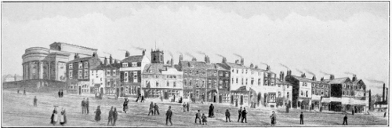

Title: Recollections of a Busy Life: Being the Reminiscences of a Liverpool Merchant 1840-1910
Author: Sir William Bower Forwood
Release date: September 12, 2013 [eBook #43701]
Most recently updated: October 23, 2024
Language: English
Other information and formats: www.gutenberg.org/ebooks/43701
Credits: Produced by Chris Curnow, Michael Forwood, Martin Pettit
and the Online Distributed Proofreading Team at
http://www.pgdp.net (This file was produced from images
generously made available by The Internet Archive)
RECOLLECTIONS
OF A
BUSY LIFE.
Painted by S. Walters.] [Engraved by R. G. Reeve.
View of the Port of Liverpool, 1836.
BEING THE
REMINISCENCES
OF A
LIVERPOOL MERCHANT
1840-1910.
BY
SIR WILLIAM B. FORWOOD
D.L. J.P.
ILLUSTRATED WITH SEVENTEEN PLATES
LIVERPOOL:
HENRY YOUNG & SONS
1910.
To my Children
and
Grandchildren.
Many of the following pages were written for private circulation. Influential friends have, however, urged me to publish them, as they may appeal to a wider circle of readers. I have consented, with diffidence, but have availed myself of the opportunity to add some chapters upon local affairs, which I trust may be of public interest, and recall pleasing memories of bygone times.
W. B. F.
Bromborough Hall,
December 1st, 1910.
There are but few men whose lives are worthy to be written for general publication, but there are many who have accumulated recollections and experiences which must be interesting and instructive to those of their own kith and kin, and it is for these I am about to jot down a few reminiscences of a life which has been largely spent in public work—in helping to build up the fortunes of a great seaport, in the local government of an important Municipality, and in the administration of Justice. Should these pages fall into the hands of friends I am sure they will be read with kindly and sympathetic feelings, and strangers will, I hope, accord to them the consideration and indulgence due to a narrative written only for private publication.
Life is said to be short, but when I look back upon the events which have crowded into mine I seem to have lived a long time, and one cannot but reflect that if the prospect had always looked as long as the retrospect, how much more patience and deliberation might have been thrown into the ordering of one's affairs, and how entirely this might have altered the course of events and changed the goal of one's endeavours. It is perhaps a merciful and wise ordinance that no man can reckon beyond the day that is before him, and therefore each day should be so lived as to be typical of our life; for it is the only portion of time of which we may truly say it is our own, and at our own disposal for good or for evil.
As each life, therefore, has its ambitions—small or great—its conquests, its trials, and its failures, so each day has to bear its own burden of trials and anxieties; and as the daily life is lived, and the daily task accomplished, so will our life's work be fulfilled; but how few there are who can look back and say their lives have been a success, and that they have accomplished all they should or all they might have done.
A great philosopher and thinker, who passed away only recently, stated, on the Jubilee of his Professorship, when his contemporaries were saying that future generations would proclaim him as having accomplished greater things than Sir Isaac Newton, that "his life had not been a success, that he had given his time and his mental powers to the solution of practical problems of everyday life rather than to the claims of the higher philosophy;" and so, in our more humble spheres each of us must feel that we have neglected opportunities, and perhaps the opportunities which we most regret having neglected are those by which we could have done good to our fellow-men, and not those which made for the satisfying of our ambition.
There can be no isolation more dreary than the isolation of an old age, cut off by the lack of training and habit from sympathy with humanity, alone in its selfishness, untouched by the joy of feeling and caring for others. But even short of this isolation of a selfish old age, there must come to all of us a feeling of disappointment that our part in helping forward the well-being of others has not been larger and more fruitful:
I will, however, cease to moralise, and will conclude with this thought which, I think, forms an appropriate preface to an autobiography.
How much greater would be the sum total of human happiness if men would accept as their guide the experience of those who had gone before! How many disasters might be avoided! How many successful careers might be shaped and built up! But I suppose as long as men are as they are they will refuse to accept the experience of others, but will make their own, and through blunders and mistakes a certain proportion will arrive at success, but a larger proportion will struggle on, on the ragged edge and under the cold shade of adversity until the end of their days.
W. B. F.
Bromborough Hall,
Cheshire,
January 21st, 1910.
| A FOREWORD. | |
| PAGE. | |
| CHAPTER I.—EARLY YEARS | 1 |
| My Father | 2 |
| Edge Hill | 4 |
| Everton | 5 |
| Bootle | 5 |
| Seaforth | 6 |
| The "Great Britain," s.s. | 7 |
| Wrecks on the Seaforth shore | 8 |
| Walton | 10 |
| Aigburth | 10 |
| The Right Hon. W. E. Gladstone | 12 |
| His last speech | 13 |
| 1848—Waterloo and Southport Railway: Opening | 15 |
| Edge Lane | 16 |
| Early School-days | 17 |
| Home Life | 21 |
| Wavertree Park | 23 |
| CHAPTER II.—VOYAGE ROUND THE WORLD | 25 |
| 1857—Sail in the "Red Jacket" | 25 |
| Australia | 26 |
| West Coast of South America | 27 |
| Easterly gales in the Channel | 28 |
| [Pg xiv]CHAPTER III.—LIVERPOOL | 31 |
| Liverpool in 1860-1870 | 32 |
| The Town | 33 |
| The Docks | 35 |
| The Dock Board | 37 |
| Election | 38 |
| Birkenhead | 39 |
| Bootle | 41 |
| The Exchange | 42 |
| Cotton Brokers | 44 |
| Commerce | 47 |
| Shipowners | 48 |
| Merchants | 49 |
| The American War of 1861-1865 | 51 |
| Blockade Running | 53 |
| The Southern Bazaar | 55 |
| The Volunteer Movement | 55 |
| Intellectual Life | 57 |
| Society | 60 |
| CHAPTER IV.—BUSINESS LIFE | 64 |
| My Father's Office | 64 |
| Financial Panics, 1857-1866 | 65 |
| 1861—Wrecked in the "Great Eastern" | 67 |
| 1861—Arrested in New York | 69 |
| Leech, Harrison and Forwood | 71 |
| My brother Arthur | 72 |
| CHAPTER V.—PUBLIC LIFE, 1867 | 78 |
| 1868—President Philomathic Society | 78 |
| Professor Huxley | 78 |
| 1868—Elected to the Town Council: Early Experiences | 79 |
| Chamber of Commerce: | |
| 1870—Elected Vice-President | 80 |
| 1871-1874—President of the Chamber | 80 |
| 1878-1881—Elected President of the re-constituted Chamber by the votes of the subscribers to the Exchange News Room |
80 |
| [Pg xv] 1870—Fellow Royal Statistical Society | 80 |
| 1872—President of the American Chamber of Commerce | 81 |
| 1873—Chairman of the Joint Committee of the Northern Towns on Railway Rates |
81 |
| 1877—President United Cotton Association, the precursor of the Cotton Association |
82 |
| 1877—President of the International Cotton Convention | 83 |
| 1880—Mayor of Liverpool | 83 |
| Visit of General Sir Frederick Roberts | 83 |
| Visit of the Prince and Princess of Wales | 84 |
| The Opening of the North Docks | 84 |
| Fenian Scare | 85 |
| 1903—Lord Mayor | 87 |
| CHAPTER VI.—THE FENIAN TROUBLES | 88 |
| 1882—Attempt to blow up the Town Hall | 88 |
| Infernal Machines | 90 |
| The Pensioner's cork leg | 91 |
| Thanks of the Home Secretary | 92 |
| CHAPTER VII.—THE TOWN COUNCIL | 93 |
| The Town Hall—Its Hospitality | 97 |
| Work in the City Council | 100 |
| 1868-1882—Watch Committee | 100 |
| Burning of the Landing Stage | 101 |
| 1870-1884—Water Committee: The Vyrnwy Scheme | 102 |
| Hawes Water | 102 |
| 1874-1886—Parliamentary Committee | 106 |
| Chairman | 106 |
| Extension of the Boundaries | 106 |
| The Manchester Ship Canal | 107 |
| The Dock Board and the Bridgwater Canal | 108 |
| 1887—Corporation Leaseholds: Chairman of Special Committee to enquire into |
109 |
| Report | 110 |
| 1908—Estate Committee: Chairman | 110 |
| [Pg xvi]CHAPTER VIII.—LIBRARY, MUSEUM AND ARTS COMMITTEE | 112 |
| 1889—Chairman | 114 |
| 1908—Extension of Free Libraries | 114 |
| Mr. Carnegie | 115 |
| The Museum Extended | 116 |
| The Art Galleries | 117 |
| Among the Studios | 118 |
| Lord Leighton | 118 |
| Mr. Greiffenhagen | 119 |
| Sir John Millais | 120 |
| Sir Hubert Herkomer | 121 |
| Sir John Gilbert | 122 |
| Mr. Whistler | 123 |
| 1908—Retired from the Committee | 123 |
| Mr. R. D. Holt | 128 |
| CHAPTER IX.—KNIGHTHOOD AND FREEDOM OF LIVERPOOL | 130 |
| 1883—Knighthood: At Windsor Castle | 130 |
| Honorary Freedom of City of Liverpool | 131 |
| CHAPTER X.—POLITICAL WORK | 141 |
| Party politics in Liverpool | 141 |
| Conservative Whip | 142 |
| 1865—S. R. Graves, M.P. | 143 |
| 1873—John Torr, M.P. | 143 |
| 1868—Viscount Sandon, M.P. | 144 |
| 1880—Edward Whitley, M.P. | 144 |
| Mr. Rathbone, M.P. | 145 |
| 1868—Election, South-West Lancashire: Mr. Gladstone and Mr. R. A. Cross |
145 |
| 1869—Chairman Waterloo Polling District | 146 |
| 1880—Chairman of the Southport Division | 146 |
| [Pg xvii]1886 { The Hon. George A. Curzon | 146 |
| to { | |
| 1899 { Mr. Curzon Member for Southport | 147 |
| Lord Curzon's work as the Viceroy of India | 149 |
| Duties of a Chairman of a Division | 151 |
| Free Trade and Protection | 152 |
| CHAPTER XI.—JUDICIAL WORK | 154 |
| 1873—Placed on Liverpool Bench | 154 |
| 1882—Placed on Lancashire County Bench | 154 |
| 1900—Placed on Cheshire County Bench | 154 |
| 1890—Deputy-Chairman of Quarter Sessions, West Derby Hundred | 154 |
| 1894—Chairman of Quarter Sessions | 154 |
| 1894—Chairman of the County Bench | 155 |
| 1894—Chairman of the Licensing Justices | 155 |
| Chairman of the Visiting Justices, Walton Jail | 157 |
| 1902—Appointed a Deputy-Lieutenant for Lancashire | 154 |
| 1909—High Sheriff for Lancashire | 159 |
| Interesting Ceremony at Lancaster Castle | 161 |
| The King and Queen at Knowsley | 162 |
| CHAPTER XII.—BLUNDELLSANDS, BROMBOROUGH & CROSBY | |
| Blundellsands | 164 |
| Crosby Grammar School | 166 |
| Bromborough | 168 |
| CHAPTER XIII.—DIRECTORSHIPS | 171 |
| 1889—Chairman Overhead Railway | 172 |
| 1893— Opening by the Marquis of Salisbury, Prime Minister |
173 |
| 1898—Chairman of the Bank of Liverpool | 176 |
| 1888—Director of the Cunard Company | 177 |
| Some incidents | 179 |
| Castle Wemyss | 181 |
| [Pg xviii]Making of the Cunard Company | 181 |
| Liverpool and Mediterranean Trade | 182 |
| White Star Line | 184 |
| Mr. T. H. Ismay | 185 |
| Sir Alfred Jones, K.C.M.G. | 186 |
| 1888—Director Employers' Liability Assurance Company. | 176 |
| CHAPTER XIV.—THE CHURCHES | 188 |
| The Church, 1860-1870 | 188 |
| Dr. McNeile | 189 |
| Dr. Ryle, first Bishop of Liverpool | 190 |
| Nonconformists | 192 |
| The Building of a Cathedral | 194 |
| Early History | 194 |
| Chairman of Executive Committee | 198 |
| Foundation-stone laid by the King | 199 |
| Consecration of the Lady Chapel | 201 |
| Convocation | 203 |
| Church Congress | 204 |
| New York Cathedral | 204 |
| CHAPTER XV.—PHILANTHROPY, CHARITABLE AND SOCIAL WORK | 206 |
| Crusade against intemperance | 207 |
| Workmen's dwellings | 208 |
| Local workers | 209 |
| CHAPTER XVI.—THE SEAMEN'S ORPHANAGE, Etc. | 211 |
| 1905—Royal Commission on Motors | 212 |
| CHAPTER XVII.—THE EARL OF DERBY | 215 |
| Appointments to the County Bench | 215 |
| Prince Fushimi of Japan | 220 |
| CHAPTER XVIII.—TRAVELS | 223 |
| Improvements in Modern Travel | 223 |
| 1871—Franco-Prussian Battlefields | 225 |
| [Pg xix]1891—Costa Rica | 225 |
| Jamaica | 228 |
| 1892—Mexico | 228 |
| Conversion of Mexican Southern Railway Bonds | 229 |
| President Diaz | 230 |
| 1905—America: Tour with Lord Claud Hamilton | 235 |
| President Roosevelt | 236 |
| 1906—The Desert of Sahara | 238 |
| The Count's Garden, Biskra | 240 |
| Egypt | 243 |
| 1907—India: Impressions of | 244 |
| 1906—Lord Clive: The result of a Motor Tour | 250 |
| CHAPTER XIX.—RECREATIONS | 253 |
| Yachting | 253 |
| 1874—Obtained Certificate from the Board of Trade as a Master Mariner |
255 |
| Windermere: Happy Days | 256 |
| History of the Royal Windermere Yacht Club | 257 |
| Yacht Racing Association | 258 |
| One of the Founders | 258 |
| Member of the Council | 258 |
| Chairman of the Committee of Measurement | 258 |
| Royal Canoe Club | 258 |
| 1879—Rear-Commodore Royal Mersey Yacht Club | 257 |
| Gardening | 259 |
| Orchids | 260 |
| CHAPTER XX.—OBITER DICTA | 261 |
| Success in Life | 263 |
| Observation | 266 |
| Imagination | 267 |
| Integrity | 267 |
| Liverpool, 1836 | Frontispiece. |
| Shaw's Brow | Facing page 34 |
| Dock Offices | 37 |
| The Old Liverpool Exchange | 42 |
| The Town Hall | 93 |
| Laying Foundation Stone, Vyrnwy | 102 |
| Free Libraries | 112 |
| "Ramleh," East Front | 162 |
| Bromborough Hall, Garden Front | 168 |
| The Old Dutch Garden | 170 |
| The Lady Chapel, Liverpool Cathedral | 201 |
| Fatehpur Sikri | 244 |
| Benares | 245 |
| The Himalayas | 248 |
| The Taj Mahal | 249 |
| Yachting on Windermere | 256 |
| Portrait | 261 |
A Great City—its people and its institutions, as seen by a contemporary presents incidents that do not specially appeal to the historian, who is more concerned with the larger features and events which mark its growth; but those incidents may serve as sidelights upon the movements and the spirit of the times, and woven round the outlines of a life which has been threaded in the weft of its activities, may afford a background to bring into more prominent relief and give juster proportion to the characters and the actions of the men who have built up its prosperity.
My story will therefore be of the men and the incidents of my time, which I think may perhaps possess more than a passing interest, and I hope serve to awaken pleasant memories.
As I do not intend to write a record of my family life, which with its abounding happiness—some great sorrows—successes and disappointments—must be a sacred thing, I shall only make such references to my family, or to those friends still happily with us, as may be necessary to my narrative.
My great-grandfather, who was born at Plymouth, was a Lieutenant in the Royal Navy and served on board the "Foudroyant." He was killed in action, and his widow, in recognition of his courage, was awarded a Post Captain's pension. She had one son, my grandfather, George Forwood, who came to Liverpool, where in 1812 he joined Mr. John Moss as partner in the Otterspool Oil Works (Mr. Moss was the father of the late Sir Thomas Moss, Bart.). My grandfather appears to have been a man of considerable ability. Mr. Hughes, in his History of Liverpool Bankers, describes him as "an exceedingly able man, possessing some public spirit." His published letters and pamphlets on economic subjects show that he took much interest in the pressing questions of the day, and was very active in promoting the repeal of the Corn Laws and in the amendment of the Poor Laws.
My father, the late Thomas Brittain Forwood, was born in Russell Street in 1810, and was educated at Dr. Prior's school in Pembroke Place; he received what was known as a good classical education, and up to the close of his life his knowledge of Latin was fresh and accurate, and he could quote freely and aptly from Latin authors.
He was gifted with a love for mechanics, and he claimed to have made a locomotive when a boy, using as cylinders two surgical syringes.
He entered the office of Leech, Harrison and Co. in 1824, when he was 14 years of age,[Pg 3] became a partner at the age of 27, and retired in 1862, when he purchased the estate of Thornton Manor, in Cheshire; here he resided for the remainder of his life. My father was endowed with a quick and bright intelligence, and was a most excellent correspondent in days when letter writing was a fine art. He had a love and capacity for hard work.
He was too much absorbed in his own business to take an active part in public life, but he was for a time a vice-president of the Chamber of Commerce, and took a leading part in the effort to obtain a reduction in the railway charges levied upon Liverpool traffic. He was for twenty-two years a member of the Mersey Dock Board, and chairman of the Traffic Committee. After he retired from business he became a magistrate for the county of Cheshire, and greatly interested himself in the restoration of Chester cathedral.
He died at his London house, in Regent's Park, December 18th, 1884, and was buried at Thornton Hough, Cheshire. My mother was a daughter of William Bower, the founder of the firm of William Bower and Sons, cotton brokers. My grandmother, Mrs. Bower, was left a widow when quite young, but must have been a woman of much ability, for during the minority of her eldest son, for several years she carried on the business, going down to the office every day. In this she was[Pg 4] actively assisted by the late Mr. Geo. Holt, the founder of the firm of Geo. Holt and Co., with the result that when her son came of age the business was one of the largest and most prosperous on the Cotton Exchange. I often heard her speak with gratitude of the noble self-sacrifice of Mr. Holt during all these years.
I was born at Edge Hill, Liverpool, in 1840—it gives some perspective to this date when we remember that the year 1839 witnessed the first publication of Bradshaw's Railway Guide, and the inauguration of the penny post. It was the year after the accession and marriage of Queen Victoria, and one of the last of the dark years of the fiscal policy of Protection in England; so that I may claim that my seventy years have witnessed a material progress on every side, which has been simply marvellous, and has eclipsed in the brilliancy of achievement any former period in the history of our country. The use of the steam-engine has been increased and extended until it has become the handmaiden of every industrial occupation; and following in its train we have seen the development of the spinning jenny, and the blast furnace. And to-day we see that steam is being dethroned from its high position by the electrical dynamo and the hydraulic ram, and the turbine is taking the place of the reciprocating engine. The internal combustion engine has been invented, and the motor-car is rapidly superseding the horse-drawn vehicle; while[Pg 5] the biplane and monoplane have given a reality to aviation which never entered the most visionary dreams of a few years ago.
My father's house at Edge Hill overlooked the grounds of Mount Vernon Hall and the gardens of the vicarage; to the east were open fields, with a few large villas dotted about. Fashionable Liverpool still dwelt in the large Georgian houses fringing Everton Hill, which looked down upon one of the loveliest views imaginable. In the foreground were the trees and woods which ran along what is now Netherfield Road; beyond these the river flowed; in the distance the Wirral peninsula stretched out, backed by the Welsh hills. But the town of Liverpool was pushing its way up to Everton, and San Domingo Road was ceasing to be fashionable; while Aigburth, Prince's Park, and Edge Lane were rapidly becoming the most popular suburbs of the fast-rising seaport.
Soon after I was born my father removed to Marsh Lane, Bootle, and there were few more charming spots at that time. I remember the grand trees which encircled Bootle Hall and overarched Marsh Lane; here dwelt in sylvan retreats the Mathers, the Birches, and the Tyrers. The trees extended down to the sea-shore, where Miller's Castle stood sentinel—a modern building remarkable for its keep and battlemented walls. About half a mile nearer Liverpool there was a row of large houses, known as Fort Terrace; here one of my[Pg 6] uncles lived. The garden ran down to the sea-shore, and we as boys passed out of the garden to bathe. The Canada dock is built on the site of Fort Terrace.
My father removed again, further out, to Seaforth, to a large house on the Crosby Road, facing an open space known as "Potter's Field," which was bounded on the further side by the shore. I was sent to school at Mrs. Carter's, a celebrated dame's school, where many young Liverpool boys were educated. Mr. Arthur Earle was one of my classmates. Seaforth was a very prettily wooded village, fine elm trees margining the highway right up to the canal at Litherland. The village at that time contained two other important schools, Miss Davenport's and the Rev. Mr. Rawson's. Mr. Rawson was Vicar of the Parish. Mr. Gladstone, Lord Cross, and Dean Stanley were educated at Mr. Rawson's. Mr. Rawson was very fond of telling the story of Mr. Gladstone, when a boy, spending his holiday afternoons lying before the fire reading Virgil; even in those days he had formed great expectations of his pupil's future career. Seaforth vicarage stood between the church and the railway, and was surrounded by large gardens. Litherland was also a charming rural village, containing many grand old elm trees, and several large houses. Waterloo was a rising seaside place, very fashionable in the summer; here Liverpool merchants occupied cottages, for in those times a cottage at the seaside was the usual method of spending the summer:[Pg 7] fishings in Norway, moors in Scotland, and tours all over the world not then being in vogue.
Our home at Seaforth commanded a very beautiful marine view. I remember seeing the "Great Britain" sail, and the same night she was stranded on the coast of Ireland. For years the "Great Britain" was regarded as one of the wonders of the world. She was considered to be such a leviathan that people said she would never pay, and I believe she never did; her tonnage was under 4,000 tons. She remained the largest ship afloat for many years. The "Great Britain" went ashore in Dundrum Bay on the 22nd September, 1846, and was refloated and towed to Liverpool, August 25th, 1847. She remained for some time in the North Atlantic trade, was afterwards engaged in the Australian trade, and subsequently was converted into a four-masted sailing ship. Her final use was as a coal hulk at the Falkland Islands.
I also saw the Glasgow steamer "Orion" sail on her fatal voyage. She was stranded on the Mull of Galloway, and many lives were lost; this was in 1850.
Very frequently after the prevalence of easterly winds, the entire channel between the Rock Light and the Crosby Lightship was crowded with ships, large and small, working their way out to sea—a lovely sight. I have frequently counted over 300 sail in sight at one time.
On the Bootle shore, somewhere about where the Hornby dock is situated, there stood two high[Pg 8] landmarks—very conspicuous objects marking the fairway through the Rock Channel, then very much used; they linger in my memory, associated with many pleasant donkey rides around them. Bootle church in those days had two towers, and the old church was quite as ugly as the one now existing. The Dock Committee built the sea wall of the Canada dock some time before the docks were constructed. I remember about the year 1848 seeing seven ships wrecked against this sea wall; they had dragged their anchors and were driven ashore by a north-west gale. Wrecks on the Bootle and Seaforth shores were quite common occurrences. The farmers in the district fenced their fields with timber from ships stranded on the shore, and the villagers were not above pilfering their cargoes. The barque "Dickey Sam" with a cargo of tobacco from Virginia was stranded on the Seaforth sands in 1848, and an onslaught was made on her cargo by the villagers; and to protect it, my father organised a body of young men to stand guard over it—not an easy matter, as the hogsheads of tobacco were strewn along the beach for several miles. His efforts were rewarded by the underwriters presenting to him a silver salver with an appropriate inscription.
Access to Seaforth and Waterloo from Liverpool was afforded by a four-horse 'bus, which ran in the morning and evening; express boats also sailed along the canal in summer, starting from the bridge at Litherland. It was a pretty walk[Pg 9] through the fields to Litherland, and a charming sail along the canal to the wharf in Great Howard Street.
Riding on horseback on the sea-shore was a very favourite pastime. Many business men rode into town, keeping to the shore as far as Sandhills Station.
On the road to Liverpool, and midway between Bootle and Liverpool, surrounded by fields, were the ruined walls of Bank Hall, which for 500 years had been the residence of the Moores, one of the most celebrated Liverpool families; they were large owners of property, and for that long period were closely identified with the public life of the little town.
The Hall had been pulled down and the materials used for the erection of the large stone farm buildings and an important farm-house. In my boyhood days the barns and farm-house still remained, and also the ancient garden wall, flanked with high stone gate-posts and surmounted by large carved stone urns, such as were common in the early Georgian period. A deep and wide ditch ran along the front of the wall, which was part of the old moat. The Ashcrofts were the tenants of the farm, and I can remember making hay in a field which would be about the site of the present Bankhall railway station. Further along again, in Great Howard Street, stood the jail, commonly called the French prison, many French prisoners of war having been confined there during the Peninsular war.
Near Sandhills Station there stood a large house, surrounded by trees, the residence of John Shaw Leigh, one of the founders of the present Liverpool. I remember being taken to see the icehouse in the grounds, which formed a sort of cave. Walton was a very pretty village, and remained so until a comparatively recent date; its lanes were shaded by stately trees, amid which there nestled the charming old thatched cottages which formed the village. The church, the mother church of Liverpool, was a landmark for miles, and amid its rustic and rural surroundings was picturesque and romantic. Near at hand were Skirving's nursery gardens, quite celebrated in their time.
The southern end of the town preserved its suburban aspect for a much longer period. Aigburth Road and its great elm trees remained untouched by the builder of cottages until quite recent times. Prince's Road was made in 1843, and was margined on either side by fields, which for long years remained in a more or less ragged condition, some of the land being occupied by squatters, living in wooden tenements such as we are familiar with when property lies derelict, past cultivation, but not yet ripe for the builder.
Aigburth Road and St. Michael's Hamlet retained their charming and picturesque features until such a recent period that I need not dwell upon them. Few towns had more attractive and beautiful suburbs; now the tramways have[Pg 11] encouraged the building of small property in every direction, and suburban Liverpool is almost destroyed. The area available for residences has always been limited to the east and south, owing to the proximity of St. Helens, Wigan, Widnes, and Garston. It would have been a wise policy if our City Fathers had set apart a sanctuary for better-class houses, from which tramways were excluded, and thus avoid driving so many large ratepayers to the Cheshire side to find a home.
My sketch of Seaforth and its neighbourhood would not be complete unless I say a word about several rather celebrated houses which existed in the district. One was Seaforth Hall, long known as "Muspratt's folly." Mr. Muspratt, who built the house, and who lived and at the age of 96 died in it, had the prescience to see that the sandhills, which he bought for a nominal price, would some day become a part of Liverpool, and he had also the enterprise to erect one of the finest houses about Liverpool. Another important house was Seafield, near Waterloo, the residence of Dr. Hicks; it was surrounded by a large park. This has since been laid out and built over, and is now known as Waterloo Park. The third interesting house was Seaforth House, the residence of Sir John Gladstone, and where his famous son spent his young days. In the 'seventies Mr. Robertson Gladstone, the brother of the Premier, had a scheme to modernise the old family house, which his brother,[Pg 12] Mr. W. E. Gladstone, who owned the property, allowed him to carry out. Mr. Robertson Gladstone was my colleague on the Watch Committee, and he invited me to go out with him to see the alterations he was making, which I found comprised the construction of a large circular saloon in the centre of the house. This was a very fine apartment, but it ruined the rest of the house, making all the other rooms small and ill-shaped. The house never found a tenant, and some years after, when Mr. W. E. Gladstone sold his Seaforth estate, it was pulled down.
When Mr. Robert Holt was Lord Mayor, in 1893, Mr. W. E. Gladstone visited Liverpool to receive the Freedom of the City. He sent for me to the Town Hall, and said he understood I was the chairman of the Overhead Railway, and he wanted to know where we had placed our station at Seaforth. I told him it was on the south side of the old Rimrose Brook, and gave him some further particulars. He at once replied, "I remember as a boy catching what we called 'snigs' in the Rimrose Brook, and from what you tell me your station is on the north side, and as a boy I played cricket in the adjoining field, from whence in the far, far distance we could see the smoke of Liverpool." From enquiries I have made I find Mr. Gladstone's memory as to the position of the brook was more accurate than my own. It was a considerable stream and the[Pg 13] cobble-paved highway of Crosby Road was carried over it by a high white stone bridge. Before leaving the Town Hall Mr. Gladstone asked me if I knew Seaforth House. On my saying yes, he replied, "What a mess my brother Robertson made of it!"—alluding to the incident already mentioned.
Perhaps I may here interpose another recollection of Liverpool's great son. When the late Lord Derby was Lord Mayor I was deputed to assist him when my services were required. One day he sent for me and showed me a letter he had received from Mr. Gladstone expressing his wish to address a Liverpool Town's meeting on the Bulgarian Atrocities. Mr. Gladstone, in a magazine article, had recently used strong language in reference to the Sultan of Turkey, calling him an assassin. Lord Derby considered it would not be proper for such language to be used at a Town's meeting, but he added, "Mr. Gladstone was above everything a gentleman, and if he received his promise that he would avoid strong language he would be quite satisfied and would take the chair." Mr. Gladstone at once assented. The meeting was held in Hengler's Circus. It was crowded from floor to ceiling. Mr. Gladstone arrived with Mrs. Gladstone, and after a few introductory remarks by the Lord Mayor, Mr. Gladstone rose to speak. Walking with the aid of a stick to the front of the platform,[Pg 14] placing his stick upon the table, he clutched hold of the rails and "let himself go," and for an hour and a quarter he poured out a perfect torrent of eloquence which held the audience spellbound. It was a great oration, remarkable not so much for what he said, as for the marvellous restraint he was evidently exercising to avoid expressing himself in the forcible language which he considered the circumstances demanded. He was much exhausted after this great effort; Mrs. Gladstone had, however, some egg-flip ready, which seemed to revive him. This was Mr. Gladstone's last great speech; it was fitting it should be delivered in his native city.
There was another house at Seaforth which I must also mention, Barkeley House, the residence of Mr. Smith, commonly known as "Square-the-Circle Smith," from the fact of his claiming to have solved this problem. Mr. Smith was the father of Mr. James Barkeley Smith, who for many years did good work in the City Council. A sketch of the Seaforth of those days would not be complete without a reference to Rector Rothwell of Sefton, reputed to be one of the most beautiful readers in the Church; he drove down to the shore in his yellow gig, winter and summer, and bathed in the sea. Another grand old man was Archdeacon Jones, who succeeded his son as the Incumbent of Christ Church, Waterloo, and who died at the age of 96. I look back upon his memory with reverence, for he was a charming man; his presence was dignified, his features refined,[Pg 15] almost classical, and he was endowed with a soft, silvery voice, and, both as a reader and preacher, he was greatly appreciated. I must mention a touching little incident. About two years before he died he broke his leg. I called with my wife to see him; before leaving he begged us to kneel down and he gave us his blessing, expressed in simple but beautiful language, and spoken with deep feelings of love and kindness.
I must now revert to my story. The railway from Waterloo to Southport was opened in July, 1848; it was called the "Shrimpers' Line," and it was thought it would never pay, as there was apparently no traffic. I remember, as a small boy, seeing the first train start from Waterloo; the occasion was a visit made by the directors to inspect the bridge over the river Alt, and my father was one of the party. The train consisted of two first-class coaches, and it was drawn by three grey horses, driven by a man seated on the top of the first coach. Some time after I saw the first locomotives brought from Liverpool. The Crosby Road was good enough, but the roads leading from the main Crosby Road to Waterloo were simply sandy lanes, and along these the heavy lorries, which carried the locomotives, had to be hauled. It was a work of great difficulty, as the wheels of the lorries sank up to their axles in the deep sand.
The railway was opened from Waterloo to Southport for some years before it was extended[Pg 16] to Liverpool. To-day this line is probably the most profitable part of the Lancashire and Yorkshire system.
In 1849 my father bought a house in Edge Lane, then a very charming and attractive suburb. After passing Marmaduke Street, Edge Hill, there were no houses in Edge Lane on the south side until Rake Lane was reached. Here were the residences of Sir John Bent, Mr. George Holt, and others. The north side of Edge Lane, from the Botanic Gardens up to Laurel Road, was fringed with villas, surrounded by large gardens containing many fine trees, and the houses in this part were large and handsome; many of them still remain. Among those who then resided in Edge Lane were James Ryley, William Holt, F. A. Clint, Simon Crosfield, Mr. Lowndes, and Dashper Glynn. Mr. Heywood lived in Edge Lane Hall, then considered a house of much importance, surrounded as it was by a pretty park.
The principal events which dwell in my memory as having taken place at this time are the Fancy Fair held in the Prince's Park, in aid of our local charities, a very brilliant affair; and the opening of the great exhibition of 1851 in Hyde Park. It was a matter of grave consideration with my parents if I was of sufficient age to appreciate the exhibition, but in the end I was allowed to go to London; and I can only say, for the benefit of all youngsters of 10 and 11 years,[Pg 17] that I greatly enjoyed that magnificent display, and it produced a lasting impression upon my mind. I recall at this day every detail. The wonderful show of machinery impressed me most, but the weaving of cloth and the various industrial processes were all of absorbing interest to my youthful mind, so much so that on one day I lost my party, and had to find my way back to our lodgings. Fortunately, half-a-crown had been placed in my pocket for this contingency, and with the help of a friendly policeman I had no difficulty.
The building of the church of St. John the Divine, at Fairfield, greatly interested me, and during my holidays I was taken up to the top of the tower to lay the first stone of the steeple. When the church was consecrated in 1854, Bishop Graham, of Chester, lunched at the "Hollies," my father being the chairman of the Building Committee.
After spending two years at a dame's school at Kensington, I was sent to the upper school of the Liverpool Collegiate. I was placed in the preparatory school, under the Rev. Mr. Hiley. From the preparatory school I proceeded to the sixth class. My career was by no means distinguished; four times a day I walked up and down from Edge Lane to school. My companions were Tom and Hugh Glynn; they, like myself, made but little headway. Dr. T. Glynn is now one of the leaders of our medical profession, and a short time ago I asked him how it was that we as boys were so stupid. He[Pg 18] replied that our walk of eight miles a day exhausted all our physical and mental energies, and we were left good for nothing; and I might add we had in those days little or no relaxation in the shape of games. There was a little cricket in the summer, but this was the only game ever played, so that our school-days were days of unrelieved mental and physical work, which entirely overtaxed our strength. The Rev. J. S. Howson, the principal of the Collegiate, was very much beloved by the boys. I was a very small boy, but not too small for the principal to notice and address to him a few kindly words; in after life, when he became Dean of Chester, he did not forget me. His sympathy and love for boys and his power of entering into their feelings made him a very popular head-master.
At the age of 14 I was sent to Dr. Heldenmier's school at Worksop, in Nottinghamshire, where the Pestalozzian system of education was carried on. It was a celebrated school; many Liverpool boys were there with me, the Muspratts, Hornbys, Langtons, etc., and though we worked hard we had plenty of relaxation in the workshop and the playing fields, besides long walks in the lovely parks that surround Worksop, and which are known as the Dukeries. During these walks we were encouraged to botanise, collect birds' eggs, etc., and the love of nature which was in this way inculcated has been one of the delights of my life. The noble owners of these parks were most kind to the boys. We were frequently[Pg 19] invited to Clumber, the residence of the Duke of Newcastle, who was Minister of War. The Crimean war was then being waged, and we considered the duke a very great person; and a few words of kindly approbation he spoke to me are among the sunny memories of my school days. The Duke of Portland, who was suffering from some painful malady, which caused him to hide himself from the world, was also always glad to see the boys, and to show us the great subterranean galleries he was constructing at Welbeck; but our greatest delights were skating on the lake at Clumber in winter, and our excursions to Roch Abbey and to Sherwood Forest in the summer. The delight of those days will never fade from my memory. We used to return loaded with treasures, birds' eggs, butterflies, fossils, and specimens of wild flowers. In the autumn Sir Thomas White always gave us a day's outing, beating up game for him; this we also greatly enjoyed; and how we devoured the bread and cheese and small beer which the keepers provided us for lunch!
We were taken by the directors of the Manchester, Sheffield and Lincolnshire Railway to the opening of the new docks at Grimsby. The directors had a special train which stopped to pick up the boys at Worksop. Charles Dickens was of the party. On the return journey, I was in his carriage; he gave me a large cigar to smoke—the first, and the last cigar I ever smoked, for the effect was disastrous.
My school days at Worksop were happy days. We spent much time in studying the natural sciences; we became proficient in joinery and mechanics; and there was a nice gentlemanly tone in the school. My great friend was George Pim, of Brenanstown House, Kingstown, Ireland. We never lost sight of each other. He entered the office of Leech, Harrison and Forwood, and became a partner with us in Bombay, and afterwards in New York; he died there in 1877, at the age of 34. A fine, handsome, bright fellow; to me he was more than a brother, and his like I shall never see again. The friend of my boyhood, of my young manhood, my constant companion; he was a good fellow.
Richard Cobden's only son was at Worksop, a bright, handsome boy. His father doted upon him, and often came down to visit him, when he took some of the boys out to dine with him at the "Red Lion"; he was a very pleasant, genial man, fond of suggesting practical jokes, which we played off on our schoolmates on our return to school. Poor Dick Cobden was too full of animal spirits ever to settle down to serious school work. He had great talent, but no power of application. He died soon after leaving Worksop.
When at Worksop I distinguished myself in mathematics, and my master was very anxious I should proceed to Cambridge, but my father had other views, and thought a university training would spoil me for a business career. I have ever regretted it.[Pg 21] Every young man who shows any aptitude should have the opportunity of proceeding to a university, but in those days the number of university graduates was small, and the advantage of an advanced education was not generally recognised. Life was more circumscribed and limited, and a level of education which suited our forefathers, and had made them prosperous men, was considered sufficient: more might be unsettling. The only thing to be aimed at and secured was the power and capacity to make a living; if other educational accomplishments followed, all well and good, but they were considered of very secondary importance.
Our home life was quiet and uninteresting, very happy in its way because we knew no other. Our greatest dissipations were evening parties, with a round game of cards; dinner parties were rare, and balls events which came only very occasionally. Sundays were sadly dull days; all newspapers were carefully put away, and as children we had to learn the collect and gospel. Our only dissipation was a short walk in the afternoon. Oh! those deadly dull Sundays; how they come up before me in all their depressing surroundings; but religion was then a gloomy business. Our parsons taught us Sunday after Sunday that God was a God of vengeance, wielding the most terrible punishment of everlasting fire, and only the few could be saved from his wrath. How all this is now happily changed! The God of my[Pg 22] youth was endowed with all the attributes of awe-inspiring terror, which we to-day associate with the evil one. It is a wonder that people were as virtuous as they were: there was nothing to hope for, and men might reasonably have concluded to make the best of the present world, as heaven was impossible of attainment. In my own case, partaking of the Holy Communion was fraught, I was taught, with so much risk, that for years after I was confirmed I dare not partake of the Sacrament. What a revolution in feeling and sentiment! How much brighter and more reasonable views now obtain! God is to us the God of Love. We look around us and see that all nature proclaims His love, and the more fully we recognise that love is the governing principle of His universe, the nearer we realise and act up to the ideal of a Christian life. Love and sympathy have been brought back to the world, and we see their influence wrought out in the drawing together of the classes, in the wider and more generous distribution of the good things of life, and in the recognition that heaven is not so far from any of us. We see that as the tree falls so will it lie; that in this life we are moulding the life of our future, and that our heaven will be but the complement of our earthly life, made richer and fuller, freed from care and sin, and overarched by the eternal presence of God, whose love will permeate the whole eternal firmament.
Charles Kingsley was one of the apostles of this new revelation, which brought hope back to the world, and filled all men with vigour to work under the encouragement which the God of Love held out to us. It has broadened and deepened the channels of human sympathy and uplifted us to a higher level of life and duty.
During my school days I spent several of my summer holidays in Scotland with my mother, who was a patient of Professor Simpson in Edinburgh, and usually resided two or three months in that city. One summer holiday I stayed with old John Woods, at Greenock. He was the father of shipbuilding on the Clyde. He was then building a wooden steamer for my father to trade between Lisbon and Oporto. Another summer holiday I spent with Mr. Cox, shipbuilder, of Bideford, in Devon, who was building the sailing ship "Bucton Castle," of 1,100 tons, for my father's firm. The knowledge of shipbuilding I obtained during these visits has been of incalculable value to me in after life. Another of my summer vacations was occupied in obtaining signatures to a monster petition to the Liverpool corporation praying them to buy the land surrounding the Botanic Gardens, and lay it out as a public park. I stood at the Edge Lane gate of the Botanic Gardens with my petition for several weeks, and I obtained so many signatures that the petition was heavier than two men could carry.
I am glad to think it was successful, and the Wavertree Park has contributed greatly to the pleasure and enjoyment of the people of Liverpool, and has been the means of preserving to us the Botanic Gardens. I think it was one of the most useful things I ever accomplished.
Leaving school I entered the office of Salisbury, Turner and Earle, one of the oldest and leading brokerage houses in the town. The partners were Mr. Alderman John H. Turner (remarkable for the smallness of his stature), Mr. Horace Turner, and Mr. Henry Grey. My senior apprentice was the late Colonel Morrison. I had not been very long in this office when I contracted a very severe cold, the result of being out all night on Ben Lomond. I had gone up with my father and a party of friends to see the sunset; on the way down I lost my way, and finding myself with darkness coming on, in very boggy land, I sat down on a rock to await daylight. Heavy rain fell and I was soaked through, which resulted in a cold that took such a strong hold of me that the doctor ordered me a sea voyage, and on the 20th November, 1857, I set sail on board the clipper ship "Red Jacket," for Melbourne. The gold fever was at its height, and the passenger trade with Australia was very active. Our ship was crowded with passengers; she was the crack clipper of the day, and carried a double crew, that she might be enabled to carry sail until the last moment.[Pg 26] We had a very pleasant passage and beat the record, making Port Phillip Heads in sixty-three days.
I visited the gold fields at Ballarat, making the journey from Geelong by stage-coach, drawn by six horses, the roads being mere tracks cut through the bush. I descended several of the mines; at this time the alluvial deposits had been worked out, and most of the mines were being worked at a considerable depth. At Melbourne I stayed with Mr. Strickland, at a charming villa on the banks of the Yarra-Yarra. Leaving Melbourne, I took a steamer for Sydney, where my father had many business friends, and had a very good time yachting in the bay and riding up country. I managed to lose myself in the bush, and for a whole day was a solitary wanderer, not knowing where I was. It was a period of strange sensations and of much anxiety. Eventually, late in the evening I came across a shepherd, who gave me the best of his simple fare and guided me to the nearest village.
From Australia I sailed in a small barque, the "Queen of the Avon," for Valparaiso; she was only 360 tons register, and I was the only passenger.
The voyage across to Valparaiso was eventful. We had bad weather throughout, and a heavy cyclone which did us great damage about the decks. We were hove to for two days with a tarpaulin in the mizzen rigging. We sailed right through the storm centre, where we had no wind, but a terrific and very[Pg 27] confused sea, and here we saw hundreds of sea-birds of all kinds. At Valparaiso we obtained a charter to load cocoa at Guayaquil. We had a lovely cruise up the coast, and the sail up the river to Guayaquil was heavenly; we had the panorama of the Andes on our right, with the richly verdured island of Puna on the other hand; flocks of flamingoes were wading in the shallow sea channels, and pelicans were busy fishing along the margins of the sandbanks. At Guayaquil we had some good crocodile shooting, not the easiest game to bag. These reptiles had to be stalked in the most approved fashion; although they lay seemingly basking and asleep in the sun, with their great mouths wide open, their ears were very much on the alert, and it was most difficult to come within shot. We succeeded better from a boat than from the land, for by allowing the boat to drift with the tide we were able to get within easy shot without being heard.
I visited Bodegas and some of the Indian villages at the foot of the Andes. The whole country was very interesting, and very rich in tropical birds and flowers. There were too many snakes to make travelling quite comfortable, but in time we found they all did their best to get away from us, and we gained more confidence.
I had a little adventure in Guayaquil which might have been very unpleasant. There was a revolution, and the government troops had only just regained possession of the city; I had the misfortune[Pg 28] to walk unwittingly through a barricade, which consisted of some half-dozen ragged black soldiers, who quite failed to suggest to me a military outpost. I was at once arrested and taken to the jail. Here I remained for some hours surrounded by the most horrible looking ruffians, and was in mortal dread of the time when I should be locked up with them in one of the foul dens which led off the court-yard. I was fortunately set free through the kind intervention of an American who had been a witness of my capture and incarceration.
At Guayaquil we loaded a cargo of cocoa and sailed for Falmouth for orders. We arrived off this port in November, 1859, after an uneventful voyage of 110 days. We tacked the ship off the Manacle Rocks, at the entrance to the harbour; the wind flew round to the east, and we were driven out again into the chops of the channel; it was twenty-four days before we again saw Falmouth. We fought our way against a succession of easterly gales, sometimes driven out as far west as the Fastnet. The fleet of ships kept out by the long continued easterly winds was very large, and the Admiralty was obliged to dispatch relief ships with stores for their succour.
No one who has not experienced an easterly gale in the Channel can form any idea of the toil of a constant fight against a succession of heavy gales, cold and bleak with sleet and snow. Sometimes the wind would decrease and we were able to make some[Pg 29] headway, and perhaps work our way within sight of the Scilly Islands, raising our hopes of an early arrival at our port, then another gale would spring up and drive us back again to the west of Ireland, and the same thing was repeated over and over again. The Channel was full of ships detained by adverse gales, and the home markets were disorganised by the lack of supplies of raw produce. All this is now a thing of the past, steamers are independent of head winds, and winter easterly gales no longer strike terror into the hearts of shipowners and merchants.
Whilst on this voyage, to relieve the monotony of the daily routine of sea life, I taught myself navigation, took my trick at the wheel, and had my place aloft when reefing next to the weather earing, where I worked with an old man-of-war's man named Amos. Amos was a noble specimen of the old-fashioned British sailor. He was the king of the fo'castle, and while he was on hand no swearing or bad language was heard. The knowledge I then obtained of navigation and seamanship has been most valuable to me through life. It was a great opportunity, which I was wise enough to avail myself of. During the whole time I was on board this ship—nearly eight months—I never missed taking my trick at the wheel, or going aloft to reef. I well remember laying out on the fore yardarm, off Cape Horn, for two hours, while we got a close reef tied. We had to take up belaying pins to knock the frozen snow and ice off the sail before we could do anything,[Pg 30] and the ship was labouring so heavily in the seaway that our task was most difficult. In navigation I became so proficient that I could work lunars with ease, and after the passage home of 110 days without seeing land I placed the position of the ship within three miles of her true position, near the Wolf Rock, Land's End, the old captain being ten to twelve miles out in his longitude. I remember feeling very proud of my good landfall. I told the old skipper that I thought we should see land at noon. He smiled and replied that we should not make it before three o'clock. I went aloft on to the fore yard-arm at one o'clock, and had not been there many minutes when I shouted "Land Ho!" I saw the sea breaking over the Wolf Rock.
Liverpool occupies the unique position of having filled two important places in the history of England. There was, firstly, the little town clustered round about its castle, and holding a charter from King John dated 1207, its estuary affording a safe haven for the trifling commerce passing between England and its sister island, Ireland. Thus situated it had to bear its part in the political movements and the foreign and civil wars which for long years harassed and distressed the country and checked its progress. Although the six centuries which intervened between 1200 and 1800 are filled with many incidents which clothe this portion of the history of Liverpool with much that is picturesque and romantic, at the close of the eighteenth century we still find Liverpool a small if not insignificant place, with a population in 1790 of only 55,000, while the tonnage of her shipping was only 49,541 tons.
This may be said to close the history of "old" Liverpool. With the dawn of the nineteenth century a new Liverpool sprang into existence.[Pg 32] The opening of the American trade, the peace of 1814, and the introduction of steamships, gave an enormous impetus to the growth of the trade of the port and laid the foundations of that vast and world-wide commerce which has made the name of Liverpool synonymous with the greatest achievements in commerce and in science. The building of the Liverpool and Manchester Railway, the mother of railways, the docks, and the bridging of the Atlantic by what is practically a steam ferry, will ever stand out as epoch making.
Thus in little over a hundred years Liverpool has grown from a small town into a great city, the city of to-day.
My story must, however, begin with the 'sixties, when I commenced my business career. The growth of the city and its commerce has since been fully commensurate with the growth of the country. In the fifty years which have intervened the Empire has doubled its area and population, and the United Kingdom has trebled its trade. The population of Liverpool, including the newly added areas, has during the same period increased from 433,000 to 750,000, and the tonnage of our shipping from 4,977,272 tons to nearly 17,000,000 tons. She conducts one-third of the export trade and one-third of the import trade of the United Kingdom,[Pg 33] and she owns one-third of the shipping of the kingdom, and one-seventh of that of the world. It has been a privilege to have been engaged in the commerce of the port during this remarkable expansion, and to have been associated with the conduct of public affairs during this period of growth and development in the city. Very much of this has been due to the enterprise and enlightenment of her own people. Liverpool shipowners have been in the vanguard of steamship enterprise, which has contributed so greatly to her prosperity; her merchants have built up her great trade in cotton and grain, and her citizens have not been slow to promote every sanitary improvement which made for the health and well-being of her people.
During the past fifty years the town has been re-sewered, the streets paved with an impervious pavement, and a new water supply has been introduced. The city has been encircled by a series of public parks and recreation grounds, baths and washhouses have been established, free libraries have been opened in the various suburban centres of population, cellar dwellings have been abolished, and rookeries in the shape of courts and tenement houses have been done away with, and in their place clean and comfortable working-men's cottages and flats have been substituted. The curse of drink has been effectively checked by the closing of twenty-five per cent. of the public-houses. To quote from Professor[Pg 34] Ramsay Muir's interesting History of Liverpool: "Thus, on all sides and in many further modes the city government has, during the last thirty years especially, undertaken a responsibility for the health and happiness of its citizens unlike anything that its whole previous history has shown, and if any full account were to be given of what the city as a whole now endeavours to do for its citizens much ought also to be said of the extraordinary active works of charity and religion which have been carried on during these years."
The Liverpool of to-day is a city very different from the Liverpool of the 'sixties and 'seventies, indeed it is difficult to recognise them as being one and the same; the streets remain, but they are widened and improved, and their inferior and often squalid surroundings have disappeared; and if our modern architecture is not always of the best, our new buildings at least impart dignity and importance. Shaw's Brow, with its rows of inferior, dingy shops, a low public-house at the corner of each street, has given way to William Brown Street, adorned on one side by our Museum, Libraries, Art Gallery, and Sessions House, and the other by St. George's Hall and St. John's Gardens. The rookeries which clustered round Stanley Street, and were occupied by dealers in old clothes and secondhand furniture, have been replaced by Victoria Street, which is margined by banks and public buildings. The terrible slums which surrounded[Pg 35] the Sailors' Home and Custom House, veritable dens of iniquity, have disappeared.
Drawn by William P. Herdman.]
North Side of Shaw's Brow,
NOW WILLIAM BROWN STREET.

Drawn by William P. Herdman.]
South Side of Shaw's Brow,
NOW WILLIAM BROWN STREET.
The dirty ill-paved town is now the best paved and the best scavenged town in the United Kingdom. With the growth of the town and the extension of tramways, residential Liverpool has been pushed further out until it can get no further, and it is now finding its way into Cheshire. No private dwelling-house of any importance has been erected on the Liverpool side for many years. The charming suburb of Aigburth has long since been destroyed, but the greatest change has taken place in the docks. The old docks have had to be remodelled to give sufficient depth of water and quay space for the larger vessels now employed, and special docks have had to be constructed for the Atlantic steamship trade. In the 'sixties the Prince's dock was filled with sailing ships trading to India and the West Coast of South America. They discharged on the west side and loaded on the east side. It was quite a common thing for a sailing vessel to occupy four and five weeks loading her outward cargo. On the walls of the docks and on the rigging of the ships, posters were displayed notifying that the well-known clipper ship ——, A1 at Lloyd's, would sail for Calcutta or Bombay, and giving the agent's name, etc.
At the south end of the Prince's dock was the George's basin, a tidal basin through which ships going into the Prince's or George's dock[Pg 36] entered. I remember seeing one of Brocklebank's Calcutta ships, the "Martaban," enter this basin under sail; it was done very smartly, and the way in which the canvas was taken in and the sails clewed up and furled, was a lesson in seamanship. The George's dock was dedicated to schooners, mostly fruiterers from Lisbon or the Azores, and during the herring season fishing boats used to discharge in one corner, the fish girls going down planks to get on board to buy their fish. The Mariners' church, an old hulk in which Divine Service was held every Sunday, occupied another corner.
The Albert dock was filled with East Indiamen discharging their cargoes of sugar, jute, and linseed, and tea clippers from China; they loaded their outward cargoes in the Salthouse dock, which adjoined; further south again, the King's and Queen's docks were occupied by small foreign vessels, trading to the continental ports. The old New York liners, sailing ships, loaded in the Bramley Moore dock; and the docks further north, the Canada being the most northerly, were filled with steamers trading to the Mediterranean, and the Cunard and Inman lines of steamers.
To-day one may hunt from one end of the docks to the other without finding a dozen sailing ships larger than a schooner. With the exit of the sailing ship much of the romance has been taken out of the life of Liverpool. It was a joy to walk round the docks and admire the smart rig and [Pg 37]shipshape appearance of the old sailing vessel. The owner and captain, and, indeed, all connected with her, became attached to their ship and took a pride in all her doings. In those days the river Mersey was a glorious sight with probably half a dozen or more Indiamen lying to an anchor, being towed in or out, or sailing in under their own canvas.
Photo by Randles.]
Mersey Docks and Harbour Board Offices.
The river Mersey, at all times beautiful with its wonderful alternations of light and its brisk flowing waters, has never been so beautiful since the old sailing ship days, when at the top of high water the outward bound fleet proceeded to sea, and the entire river from the Pier Head to the Rock Light was filled with shipping of all sizes working their way out to sea, tacking and cross tacking, the clipper with her taut spars and snow-white canvas, and the small coaster with her tanned sails all went to make up a picture of wonderful colour and infinite beauty.
There is no branch of the public service of which Liverpool people are more proud than the administration of the Mersey Docks and Harbour Board. The members of the Board have always been recruited from our leading merchants, shipowners, and brokers, and they have been fortunate in selecting as their chairmen men of exceptional ability. I can recollect Charles Turner, M.P., Robert Rankin, William Langton, Ralph Brocklebank,[Pg 38] T. D. Hornby, Alfred Holt, John Brancker; and the Board is to-day presided over by Mr. Robert Gladstone, who worthily maintains the best traditions of his office.
Of late years the members have been elected without any contests, but it was not always so. In the 'seventies there were severe contests, which arose not upon questions of personal fitness, but were prompted by trade rivalries. It had become the fashion for the various trades to nominate members who would look after the particular interests of their trade. Jealousy was aroused if one trade obtained larger representation than others. The interests of the steamship owners were opposed to those of the sailing-ship owner. The one wanted allotted berths to secure dispatch, the other quay space free and unappropriated. Cotton men wanted special facilities for cotton, and the timber people yard space for the storage of timber and deals. Each trade had its associations, and in addition there was a ratepayers' association, which sought to break up this system of trade delegation by electing independent men. The payment of £10 in dock dues gave a vote. So faggot votes were easily and extensively manufactured. Shipowners and merchants qualified every clerk in their employ. The nomination of members took place on the 1st January, and the election on the day following. The elections were hotly contested, but always in a gentlemanly way, and with much good humour.[Pg 39] It required skill to fill up the voting papers so as to secure a majority for any particular candidate.
Among those who busied themselves over these elections I remember William Johnston, Robert Coltart, Worsley Battersby, Edmund Taylor, Arthur Forwood, G. B. Thomson, George Cunliffe, and James Barnes.
The ratepayers' association accomplished much good by the election of some men of independence. My particular desire at this time was to try and induce the Board to fund their debt. It was felt that such a large floating debt was not only cumbrous and inconvenient, but in times of financial stress, or with a cycle of years of bad trade, might be a source of danger. I urged the funding of the debt on the nomination days, and also through the press and Chamber of Commerce. It met with the strong opposition of the Board, led by Mr. Brocklebank, but in course of time after the Corporation had taken the lead, the Dock Board wisely funded a portion of their debt.
The gradual increase of steamers, the passing of the sailing vessel, and the large share of the trade of the port being now conducted by "liners," have to a very large extent done away with trade rivalries; hence the little interest now taken in the Dock Board elections.
The present generation scarcely know that the docks were up to 1857 administered by a Committee of the Corporation. In my young days Liverpool[Pg 40] people were very sore and angry at the action of Parliament in foisting upon them the Birkenhead docks. These docks had been constructed by a private company, and were insolvent and a hopeless failure. Birkenhead had, however, powerful influence in Parliament, and stoutly opposed any extension of the Liverpool docks, contending that the Birkenhead docks had not had fair play, and could accommodate the surplus trade of Liverpool. In the end, in 1857, Liverpool was obliged to buy them for £1,143,000, and within a very few years had to expend upon them £3,859,041. This outlay has ever since been a serious burden upon Liverpool. Nor did the hostile action of Parliament stop here. The town dues were taken from Liverpool, and commuted for a payment of £1,500,000. The management of the dock estate was placed in the hands of the trustees, who are, except three, elected by the dock ratepayers.
In olden time the Dock Board had an annual excursion to inspect the lightships, to which they invited the whole of the Council. They were pleasant days, and it was supposed that the Mayor for the coming year was selected on these occasions. These excursions contributed to a good feeling between the Dock Board and the Corporation, which is so essential if we are to preserve the prosperity of the port. I sometimes think that our City Fathers apparently forget that our docks and our commerce are the life-blood of Liverpool.
Mr. John Bramley Moore's great work on the Dock Board was completed before my day, but he continued his interest in Liverpool to the last, and was present at the opening of the North Dock system in 1882, where I saw him. He used to tell how indefatigably he worked to secure the extension of the docks in a northerly direction, how he asked Lord Derby to present the Bootle shore to the Dock Board, urging that it would be greatly to the gain of the Derby family. Lord Derby replied that it would be very difficult to convince him of that, and that he had already refused £90,000 for it. Mr. Bramley Moore then offered if Lord Derby would transfer his foreshore rights the Dock Committee would raise all the back land by using it for the deposit of their spoil, which would, he thought, be an adequate compensation. The deal was closed on this basis, the Dock Committee secured two miles of river frontage, and the Derby family the site of the most important part of Bootle, and now forming one of the most valuable of their estates.
One of the first docks constructed on this newly-acquired land was the Bramley Moore, so named after the chairman.
No one can fail to acknowledge the enterprise and wisdom which have characterised the administration of the dock estate. Municipal work follows the demand of the people, and seldom goes ahead of it; but the provision of docks must anticipate the demand likely to be experienced. In[Pg 42] all this the Dock Board has acted with boldness and with prudence, under circumstances of much embarassment. The construction of the Manchester Ship Canal presented a problem of considerable difficulty, but the Dock Board adopted the courageous but wise policy of looking to Liverpool and Liverpool trade only, and the facilities they have provided for the changed conditions of trade have done not a little to conserve the commerce of the port.
A great change has taken place in the Liverpool Exchange. In the early 'sixties the old Exchange buildings were still in existence. The building which surrounded Nelson's monument was classic in design, with high columns surmounted by Ionic capitals and a heavy cornice. The newsroom was in the east wing, with windows overlooking on the one side Exchange Street East, and on the other the "flags." The room had two rows of lofty pillars supporting the ceiling; and there was ample room in the various bays not only for newspaper stands, but for chairs and tables, and it had very much more the appearance of a reading-room in a club than its elaborate, but less comfortable successor. On the western and northern side of the Exchange were offices with warehouses overhead. The Borough Bridewell stood in High Street,[Pg 43] its site being now covered by Brown's Buildings, and the Sessions House occupied part of the site upon which the newsroom now stands. In the 'sixties high 'change was in the afternoon between four and five o'clock, but much business was also transacted during the morning. No merchant or broker considered that he could commence the work of the day until he had read the news on the "pillars" in the newsroom. Instead of the work on the Exchange being done by clerks, it was transacted by the principals, who considered it only respectful to appear in a tall hat and frock coat. Although in those days there may have been a little too much formality in dress, in these there is sadly too little, and with the disappearance of the tall hat and frock coat one has also to regret the abandonment of those courtly manners and that respectful consideration which gave a charm to commercial intercourse, and was not confined to the Exchange and the office, but was reflected in the home and in private life.
Drawn by W. G. Herdman.]
Liverpool Exchange, 1860.
Merchant shipbrokers and general produce brokers transacted their business in the newsroom, while the cotton brokers, braving all weathers, were to be found on the "flags."
The present newsroom was opened in 1867, and shortly afterwards the Mayor, Mr. Edward Whitley, gave a ball in honour of Prince Arthur and the Prince and Princess Christian, the ballroom in the Town Hall being connected with the newsroom by[Pg 44] a long corridor constructed of wood. Dancing took place in both rooms.
Upon several occasions after a heavy fall of snow, fights with snowballs were waged on the "flags," until, becoming serious, the police were obliged to interfere and put a stop to them. A playful seasonable exchange of snowballs degenerated into a combat with the rougher element which frequented the "flags."
I still recall many of the habitués of the Exchange from 1860 to 1870, men who well represented the varied interests of the great port. While frock coats and tall hats were the rule, many still wore evening dress coats, and not a few white cravats. There was old Miles Barton, a picturesque figure, with his genial smile, and his hat drawn over his eyes; Isaac Cook, the Quaker, in strictest of raiment; Harold Littledale, the friend of Birkenhead, and the critic of the Dock Board; Michael Belcher, the opulent and prosperous cotton broker; the two Macraes, the principal buyers of cotton for the trade; Tom Bold, the active Tory political tactician, who in olden days knew the value of every freeman's vote; H. T. Wilson, the founder of the White Star Line and the Napoleon of the Tory party; Edmund Thomson, the pioneer of steamers to the Brazils, who, like most pioneers, was unsuccessful; John Newall, the "king" of the cotton market, who had an enormous clientele of very wealthy men; C. K. Prioleau, the[Pg 45] representative of the Confederate Government, who was also the great blockade runner. Mrs. Prioleau was considered to be the most beautiful woman in Liverpool. Mr. Prioleau built the house in Abercromby Square which the Bishop now occupies as his palace. R. L. Bolton, a very successful and bold operator in cotton, though in appearance the most shy and timid of men was another well-known figure; he rarely made his appearance until late in the day, being credited with a love of turning night into day. James Cox, the opulent bachelor, doyen of the nitrate trade, held his court always well attended in one corner of the room. I well remember J. Aspinall Tobin, tall of stature, distinguished in appearance, fluent of speech, a welcome speaker on every Tory platform; John Donnison, famous for his little dinners and excellent port; Sam Gath, the tallest man on the Exchange; Joseph Leather, the forceful partner in Marriotts, a leading nonconformist, who built and lived at Cleveley, Allerton; Maurice Williams, the writer of a cotton circular, and a reputed oracle on cotton—he lived at Allerton Priory, afterwards bought and rebuilt by Mr. John Grant Morris; Thomas Haigh, the courtly and stately chief of Haigh and Co., cotton brokers; Edwin Haigh, his son, and the most vivacious and talkative of men, popular with all; Lloyd Rayner and his brother Edward, the largest brokers in general produce; S. Bigland, plain and honest of speech; the two Reynolds, skilled[Pg 46] in Sea Island and Egyptian cotton; John Joynson and his brother Moses; John Bigham, portly and prosperous; and not far away, his son, John C. Bigham, who was destined soon to leave the "room" and become the able Queen's Counsel, the learned President of the Admiralty and Divorce Court, and afterwards a peer of the realm (Lord Mersey), and whose brilliant career was doubtless largely due to his early business training; Studley Martin, the active secretary to the Cotton Brokers' Association, buzzing about like a busy bee, collecting opinions as to the amount of business doing in cotton; Thos. Bouch, the dignified representative of the old firm of Waterhouse and Sons; Edgar Musgrove, an ideal broker, ever present and ever active. Nor must I forget the noble band of shipbrokers who collected the cargoes for ships loading outwards: Robert Ashley, Louis Mors, W. J. Tomlinson, J. B. Walmsley, John McDiarmid, Robert Vining, Dashper Glynn, Tom Moss, G. Warren, S. B. Guion, all of whom, with many others, represented vigorous interests which in those days made the trade of Liverpool.
Outside the Exchange, but yet very necessary to the success of its business, were the lawyers and insurance brokers and average adjusters. Amongst lawyers Mr. Bateson and Mr. Squarey enjoyed the largest commercial practice; R. N. Dale was the leading underwriter; and Mr. L. R. Baily was not only very prominent as an average adjuster, but as an[Pg 47] arbitrator he afterwards became one of the members for Liverpool. In those days, before the establishment of the system of trade arbitrations, there was abundant employment for lawyers and professional arbitrators.
A sketch of the Liverpool Cotton Exchange would not be complete without a reference being made to the dealings of Maurice Ranger, and others, who in the 'seventies on several occasions tried to corner the market by buying "futures" for delivery in a given month, and then obtaining such a control of the spot market as would prevent the sellers fulfilling their contracts. Mr. Ranger's operations were on a gigantic scale, but there was always a "nigger on the fence." The unexpected happened, and I do not think he ever fully succeeded in these enterprises. He had many imitators, who were equally unsuccessful. Mr. Joseph B. Morgan did a useful work for the cotton trade, by establishing the cotton bank to facilitate clearances in future contracts.
The removal of the Cotton Exchange to the new premises has taken place since my active business days, and the whole course and methods of the trade have changed.
In the 'sixties, sailing-ships filled the Liverpool docks, and fully one-half of them flew the[Pg 48] American flag. The great trades of Liverpool were those carried on with America, Australia, Calcutta, and the West Coast. The clipper ships belonging to James Baines and Co., and H. T. Wilson and Co., were renowned for their fast passages to Melbourne, while the East India and West Coast ships of James Beazley and Co., Imrie and Tomlinson, McDiarmid and Greenshields, and the Brocklebanks were justly celebrated for their smartness and sea-going qualities. Charles MacIver ruled over the destinies of the Cunard Company, and this line then paid one-third of the Liverpool dock dues. Mr. MacIver was a man of resolute purpose, and a power in Liverpool; in the early volunteer days he raised a regiment of field artillery, 1,000 strong, which he commanded. Many stories are told of his stern love of discipline. A captain of one of the Mediterranean steamers asked his permission as a special favour to be allowed to take his wife a voyage with him. Mr. MacIver whilst granting the request, remarked that it was contrary to the regulations of the Cunard Company. The captain, upon proceeding to join his ship with his wife, to his surprise found another captain in command, and a letter from Mr. MacIver enclosing a return passenger ticket for himself and his wife. William Inman was building up the fortunes of the Inman Line, and was the first to study and profit by the Irish emigration trade. The Bibbys and James Moss and Co. practically controlled the Mediterranean trade. The "tramp"[Pg 49] steamer was then unknown, and outside the main lines of steamers there were few vessels; but the Allans were forcing their way to the front, and Mr. Ismay was establishing the White Star Line, which revolutionised Atlantic travel. Mr. Alfred Holt was doing pioneer work in the West India trade, with some small steamers with single engines. These he sold and went into the China trade, in which he has built up a great concern.
The Harrisons were sailing ship owners, but they had also a line of small steamers trading to Charente. They afterwards started steamers to the Brazils and to Calcutta. Looking back, they appear to have been most unsuitable vessels, but freights were high, and to Messrs. T. and J. Harrison belongs the credit of quickly finding out the most suitable steamer for long voyages, and always keeping their fleets well up to date.
We must not forget to mention the merchants of Liverpool, for in those days the business of a merchant was very different from that of to-day. He had to take long and far-sighted views, as there was no such thing as hedging or covering by a sale of futures; his business required enterprise and the exercise of care and good judgment. Among our most active merchants we had T. and J. Brocklebank; Finlay, Campbell and Co.; Baring Brothers; Brown, Shipley and Co.; Malcolmson and Co.; Charles Saunders; Sandbach, Tinne and Co.; Wm. Moon and Co.; Ogilvy,[Pg 50] Gillanders and Co.; T. and W. Earle and Co.; J. K. Gilliat; J. H. Schroeder and Co.; Rankin, Gilmour and Co., and others.
In the 'sixties Liverpool had two great trades. The entrepôt trade, the produce of the world, centred in Liverpool, and was from thence distributed to the various ports on the continent. The opening of the Suez Canal, and the establishment of foreign lines of steamers, have largely destroyed this trade, and produce now finds its way direct to Genoa, Antwerp, and Hamburg. The other great trade was in American produce. For this Liverpool offered the largest and best market. This trade is unfortunately seriously threatened. The increase in the population of America is now making large demands upon her productions, and reducing the quantities available for export.
Liverpool was also a considerable manufacturing centre. It was the principal place for rice-milling and sugar-refining, while shipbuilding and the making of locomotives and marine engines contributed largely to her prosperity.
One cannot review the past trade of Liverpool and its present economic surroundings, without feeling some anxiety for the future. Not only have the trades which so long made Liverpool their headquarters been to some extent diverted, but the efforts of rival ports (in many cases railway ports or ports which have little or no concern as to the payment of interest on the money employed[Pg 51] in their construction) are directed to the capture of our trade; in this they are still being actively assisted by the railway companies, who grant to them preferential rates of carriage. There can be little doubt that our merchants and shipowners will find new avenues for their enterprise, and new trades will take the place of those partially lost; but Liverpool has in front of her a fight to obtain the just advantage of her geographical position, and it is a fight in which the city must bear its part.
The city will also have to adopt a more enlightened policy, and encourage manufacturing industries. This can only be done by reductions in the city rates, and also in the charges for water. The loss would only be nominal; we should be recouped by an increased volume of trade, and by our people obtaining steady occupation instead of the present casual employment.
The great war between the Northern and Southern States of America, which was waged from 1861 to 1865, had a far-reaching influence upon Liverpool.
Prior to this date American shipping filled our docks, and 82 per cent. of our cotton imports were derived from the Southern States.
The election of Lincoln as President of the United States, and the rejection of the democratic[Pg 52] candidate precipitated a crisis which had been long pending.
Slavery was a southern institution, and although it was conducted in the most humane manner, and many of the worst features of the system were absent, the principle of slavery was abhorrent to a large section of the northern people, and the south feared that with the election of Lincoln this section would become all-powerful. South Carolina was the first state to assert her sovereign right to secede from the union. Other states followed slowly and with hesitating steps, and by the end of 1861 the north and south were engaged in mortal combat. The southern states were ill equipped for the struggle, they had no war material and were dependent for clothing and many of the necessities of life upon the northern manufacturers.
The policy of the north was, therefore, to establish a blockade of the south, both by land and by sea, which caused prices of many commodities to rapidly advance in the south, and cotton, their main export, to quickly decline in value.
The English people sympathised with the south, as the weaker power, and also having been actively associated with them in trade. The arrest of the southern envoys Mason and Slidell upon the British mail steamer "Trent," by the federal commander, did not improve the relationship between Great Britain and the Government at Washington, and created ill feeling against the north.
Under these circumstances Liverpool merchants fitted out many costly expeditions to run the blockade and to carry arms and munitions of war into the southern ports. The modus operandi was to send out a depot ship to Nassau or Bermuda and employ in connection with this swift steamers to run the blockade and bring back cargoes of cotton. The profits of the trade were great, but the risk was also very considerable.
The trade at best was a very questionable one; it was justified on the ground that a blockade cannot be recognised unless effectual. The United States started with a blockading fleet of 150 vessels, but at the end of the war they had 750 vessels employed in this service. The blockade runner had to rely entirely upon her speed, as to fire a gun in her own defence would at once have constituted her a piratical vessel. The fastest steamers were bought and built for the purpose. They usually made the American coast many miles from the port and then under the cover of darkness they stole along the shore until they came to the blockading fleet, when they made a dash for the harbour. It was exciting work, and appealed to many adventurous spirits, and the prize if successful was great. I think all this had a demoralising influence upon Liverpool's commercial life, and the intense spirit of speculation created by the cotton famine was also very injurious. Fortunes were made and lost in a single day. Prices of cotton, while peace and war hung in the balance,[Pg 54] fluctuated violently, and when war was seen to be inevitable, they advanced with fearful rapidity. A shilling per lb. was soon reached. The mills went upon short time. By the summer of 1862 cotton was quoted at 2s 6d per lb. The speculative fever became universal; men made fortunes by a single deal. When the recoil came after the war most of these fortunes were lost again. Legitimate trade had been sacrificed to speculation. Mansions luxuriously furnished, picture galleries, horses, and carriages had to be sold, and in not a few instances, their owners, having lost both their legitimate business and their habits of industry, were reduced to penury and want, and were never able to recover themselves. The results of the war were far-reaching. The spirit of speculation was rampant for many years, with disastrous results; it was only when a system of weekly and bi-weekly settlements was introduced that speculation was brought within legitimate limits.
A Nemesis seemed to follow this violent outburst of speculation, and but few houses actively engaged in it survived very long.
Liverpool was also active in assisting the south to build and fit out vessels of war to prey upon American commerce. The "Alabama" was built at Birkenhead; she sailed away to a remote island and there took on board her armament. She and her sister ship, the "Shenandoah," did immense damage to American shipping, for which England[Pg 55] had in the end to pay, as by the Geneva arbitration she was held responsible for allowing the "Alabama" to be built and escape.
American shipping has never recovered from this blow, but it is only fair to say that the cost of shipbuilding in America, by reason of her prohibitive tariffs, has mainly prevented her resuming her former position on the ocean.
Near the close of the war a huge bazaar was held in St. George's Hall, in aid of the southern prisoners of war. It was designated the Southern Bazaar, and the stalls were called after the various states, and were presided over by the leading ladies of the town, assisted by many of the nobility and society people. It was a brilliant success, money was plentiful, and men and women vied with each other in scattering it about. Upwards of £30,000 was realised in the three days.
No account of the doings in Liverpool in the 'sixties would be complete that did not describe the beginnings of the great volunteer movement, which was destined to occupy so much public attention, and to form such an important portion of our national defence. Liverpool can certainly[Pg 56] claim to have initiated the movement. Mr. Bousfield endeavoured to revive this branch of the service in 1853. A few years later he formed a drill club, a very modest beginning, consisting of only 100 men, wearing as their uniform a cap and shell jacket. Captain Bousfield endeavoured several times to obtain recognition by the Government, but failed; and he had to encounter a considerable amount of chaff and ridicule. The public had but little sympathy with the young men who "played at being soldiers." Captain Bousfield was not discouraged, he loved soldiering and was an enthusiast, and his opportunity was soon to arrive. In 1859 the Emperor Napoleon III. became very threatening in his words and ways, and it was apprehended that he might attempt to invade our shores. Captain Bousfield quickly obtained the support of the Government for his volunteers, and the 1st Lancashire Volunteer Regiment was formed. The movement made rapid headway, until we had enrolled in the country upwards of 300,000 men. Colonel Bousfield soon obtained the command of a battalion, and in 1860 was presented with a sword of honour and a purse of £1,800. Liverpool furnished her full quota of volunteers. Colonel Brown commanded a regiment of artillery: Colonel Tilney the 5th Lancashire, a crack regiment; Colonel MacCorquodale the Press Guards; Colonel Bourne, with Major Melly and Captain Hornby (afterwards Colonel H. H. Hornby), the 1st Lancashire Artillery;[Pg 57] Colonel MacIver commanded 1,000 of his own men; and among other active volunteers at this time we remember Colonel Steble, Colonel Macfie, Colonel Morrison, Colonel Clay, and many others.
We had also a squadron of cavalry, called the Liverpool Light Horse, Captain Stone in command. I joined the squadron in 1859, and greatly fancied myself mounted on one of my father's carriage horses. We exercised in some fields behind Prospect Vale, Fairfield.
I remember the 1st Lancashire being encamped on the sandhills between Waterloo and Blundellsands. It was the first time any volunteers had been under canvas, and the camp was visited by crowds of people.
Liverpool has been always too much absorbed in her commerce to take any prominent position in the world of literature and education, until recent years, when we have atoned in some degree for our remissness in the past, by the founding of our University. Professor Ramsay Muir, in a recent speech, however, claims that we had a Renaissance in Liverpool in the early years of the 19th century, when a group of thinkers, scholars, and writers, finding its centre in[Pg 58] William Roscoe, gave to Liverpool a position and a name in the literary world, and she became a real seat of literary activity. To that remarkable man, William Roscoe, we owe the Athenæum, the Literary and Philosophical Society, and the Roscoe collection of pictures now in the Walker Art Gallery. This intellectual effort quickly lost its vitality, and for long years the Literary and Philosophical Society, and the Philomathic Society, struggled alone to keep burning the light of higher culture and literary activity.
Elementary education was almost entirely in the hands of the Church; middle class education depended upon the Liverpool Collegiate, the Mechanic's Institute, afterwards the Liverpool Institute, and the Royal Institution.
The fashion of sending boys to our great public schools did not set in until the 'seventies.
Such was the condition of intellectual life when, in 1880, the Liverpool University College was established, mainly through the efforts of the late Earl of Derby, William Rathbone, Christopher Bushell, E. K. Muspratt, David Jardine, Sir Edward Lawrence, Robert Gladstone, Mr. Muspratt, Sir John Brunner, John Rankin, and William Johnston. The first Principal, Dr. Rendall, rendered excellent service in these early struggling years, which were happily followed by still greater and even more successful efforts under Vice-Chancellor Dale, resulting in the granting of a Royal Charter in[Pg 59] 1903, and the founding of a University. The Earl of Derby became Chancellor, and Dr. Dale Vice-Chancellor. The University has been nobly and generously supported by Liverpool men; indeed a reference to the calendar fills me with surprise that so much could have been accomplished within such a brief period. Its work is making itself felt in the general uplifting of the level of education, while the presence in Liverpool of such a distinguished body of professors has had considerable influence in giving a higher and more intellectual tone to society, and in opening up new avenues for thought and activity.
We must not omit to record the excellent work done by the School Board. When first established in 1873, the election of members provoked much sectarian animosity, but in the course of time, through the exertions of Mr. Christopher Bushell and Mr. Sam Rathbone, this hindrance to its success was overcome, and the excellence of its organisation was generally recognised. Its functions have, during the past few years, been transferred to the City Council.
One of the results of the School Board was the founding of the Council of Education, which provided, in the shape of scholarships, the means by which boys could advance from the elementary school to the higher grade schools and the universities. Mr. Sam Rathbone, Mr. Gilmour, and Mr. Bushell were very active in promoting this association.
Society was much more exclusive forty or fifty years ago than it is to-day. The old Liverpool families were looked up to with much respect.
The American war considerably disturbed Liverpool society, and brought to the front many new people. Liverpool became more cosmopolitan and democratic, but there was no serious departure from the old-world courtesy of manner and decorum in dress until the 'eighties, when it gradually became fashionable to be less exacting in dress, and the customs of society grew less conventional.
In the 'sixties people of wealth and position surrounded themselves with certain attributes of power and wealth, which gave to the populace some indication of their rank and their social status, and in manners they were reserved and dignified.
Their homes were in the country or in the fashionable suburbs of the city, and their importance was measured by the extent of their broad acres. A house in London, in which they dwelt for three or four months of the year, was the luxury only of the older families, or of those of great wealth; the fashion of having a flat in London, with a week-end cottage in the country, was not known—this has followed the more democratic tendencies of our times. The bringing of people together in our railway trains, in steamers, in hotel lounges, and foreign travel, have had a distinctly levelling influence. In the 'sixties some old county families still made[Pg 61] their annual pilgrimage to visit their friends in the family coach, and the circle of their acquaintances was limited and exclusive. The family carriage with the rumble at the back was a dignified and well-turned-out equipage. The dress carriage, with powdered footmen, was commonly seen in Hyde Park, and was de rigeur at Court drawing rooms, then held in the afternoon; the array of carriages at these functions made a splendid show.
Motors may have the charm of convenience and speed, but can never replace the smart appearance of the well-turned-out carriage-and-pair.
The 'sixties were the days of crinoline and poke bonnets, and although the wearing of crinoline was much ridiculed, ladies' dress in those days was much more becoming and graceful than many of our more recent fashions, and girls have never looked more fascinating than when they wore their pretty little bonnets; but perhaps I may be called old-fashioned; as we grow older our view points change. We had many old maids in those days—we have none now—and the old ladies with their hair worn in dainty curls surmounted by a lace cap were picturesque, and looked their part.
The Wellington rooms, which were opened in 1814, were regarded as the centre of fashionable society.
These rooms, which are only used five times in each year, are unique in their exquisite proportions and their charming Adams' decorations unspoiled[Pg 62] by the modern painter and decorator. The floor of the large ballroom is celebrated for its spring, being, it is stated, suspended by chains.
Admission to the rooms was carefully safeguarded, its members belonging almost exclusively to the families of position and standing. The balls were conducted on the strictest lines of propriety, carefully enforced by vigilant stewards, who would not admit of any rough dancing; and such a thing as kitchen lancers would not have been tolerated. Six or seven balls were given each year. The first before Christmas was often called the dirty-frock ball, as new frocks were reserved for the débutantes' ball, the first ball of the season. No supper was given, only very light and indifferent refreshments. The attendance gradually fell away, and it was felt that the time had arrived when something should be done to revive their interest. Accordingly, about 1890, during my presidency, the supper room was enlarged, electric light was introduced, and a supper with champagne provided, and in order to meet the extra expense the balls were cut down to five. These changes were very successful in increasing the attendance. There were great misgivings as to the introduction of the electric light, and its effect upon the complexions of the ladies. The old form of illumination by wax candles suffused a very soft light, but the candles were unreliable and often did damage to ladies' dresses.
In the 'sixties the only out-door games played were cricket and croquet. One of the most striking developments of modern days is the time now devoted to games, especially to golf and lawn tennis. In the 'sixties the facilities for getting about were very limited. The public conveyances consisted of a few four-horse 'buses, which started from Castle Street. To-day the bicycle and the motor-car bridge over distances with rapidity and little fatigue, and make us familiar with the beauties of our country, which was in old days impossible, while the electric tram carries the working man to his game at football or to his cottage in the suburbs. All this is a great gain, adding new interests to life, and is also very conducive to health and happiness.
The conditions of life during the past fifty years in every grade of society have greatly improved; they are brighter, healthier and happier.
There has been a decrease in the consumption of alcohol, less intemperance, and a striking diminution in crime and pauperism. With an increase of over fifty per cent. in the population there is less crime.
While the necessaries of life have not increased in cost, wages are from twenty-five to fifty per cent. higher, and the working classes no longer live in damp cellars or in dark courts and alleys, but have at their disposal cheerful, sanitary, and convenient homes.
On my return home from Australia and South America I entered my father's office. It was noted for hard work and late hours. The principals seldom left for home before seven and eight in the evening, and on Friday nights, when we wrote our cotton circular, and despatched our American mail, it was usually eleven o'clock before we were able to get away, and many of the juniors had to work all night. In those days everything was done by correspondence, and mail letters often ran to a great length, frequently ten and twelve pages; and unfortunately the principals wasted much of their time in the middle of the day. The morning's work always commenced with reading the letters aloud by the head clerk, and afterwards the principals gave instructions as to replies to be sent, and laid out the work for the day.
In those times the business of a merchant's office was much more laborious, and the risks they ran were greater and longer than they are to-day, when we have the assistance of telegraphic communication with all the world. We often refer[Pg 65] to the good old days, but they were days of much anxiety and hard work, and I doubt if the profits were as large; the risks were certainly much greater, and added to this there was a constant recurrence of panics. We had a money panic almost every ten years, 1847, 1857, 1866, of the severity of which we to-day can form very little idea. It was not merely that the bank rate advanced to eight, nine, and even ten per cent., but it was impossible to get money at any price. Bank bills were not discountable, and all kinds of produce became unsaleable. In addition to these great panics we had frequent small panics of a very alarming character. I well remember the panics of 1857 and 1866; the intense anxiety and the impossibility of converting either bills or produce into cash.
The main cause of all these troubles was that the banks kept too small reserves, and the provisions of the Bank Charter Act of Sir Robert Peel were too rigid. The object of the Act was to secure the convertibility of the bank note into gold, and it would no doubt have worked well had sufficient reserves been kept, but practically the only reserve of gold was in the Bank of England, and this was frequently allowed to fall as low as five or six million in notes. All other institutions, both banks and discount houses, depended upon this reserve, and employed their entire resources, relying upon discounting with the Bank of England in an emergency. This emergency arose about every ten[Pg 66] years. The Bank of England was unable to meet the demand—a panic took place, and the bank had to apply to the Government to suspend the Bank Act, and allow it to issue bank notes in excess of the amount allowed by the Act. All this took time, the suspense was terrible, and many banks and honest traders were cruelly ruined. Immediately the Act was suspended the panic disappeared as if by magic, and traders began to breathe freely again.
Happily far larger reserves are now held by all banks, and banking business is also conducted on more prudent lines, and trade generally is worked on a sounder basis; payment by bills is now the exception; margins and frequent settlements on our produce exchanges prevent undue speculation, and the system of arbitration now universal has put a stop to the constant litigation which was a frequent cause of contention and trouble and loss of valuable time.
I was admitted a partner in my father's firm on the 1st January, 1862. The previous year had been a very successful one. My brother Arthur had visited America, and believing that war between the North and South was inevitable, had bought cotton very heavily, upon which the firm realised handsome profits. But it was at the expense of my father's health; the anxiety was too much for him, and this, coupled with my mother's death on the 1st August, 1861, so prostrated him, that he was ordered to take a sea voyage, and it was arranged that I should accompany him.
On the 7th September, 1861, we embarked on board the steamer "Great Eastern," for New York, the Liverpool dock walls being lined with people to see the great ship start. She was far and away the largest vessel built up to that time, being 679 feet long, 83 feet beam, 48 feet deep, with a tonnage of 18,915; she was propelled by two sets of engines, paddle and screw. It was a memorable voyage. Three days out we encountered a heavy gale, which carried away our boats, then our paddle wheels. Finally our rudder broke, and the huge ship fell helplessly into the trough of the sea. Here we remained for three days, rolling so heavily that everything moveable broke adrift, the saloon was wrecked, and all the deck fittings broke loose. Two swans and a cow were precipitated into the saloon through the broken skylights. The cables broke adrift, and swaying to and fro burst through the plating on one side of the ship. The captain lost all control of his crew, and the condition of things was rendered still more alarming by the men breaking into the storerooms and becoming intoxicated. Some of the passengers were enrolled as guards; we wore a white handkerchief tied round our arms, and patrolled the ship in watches for so many hours each day.
My father was badly cut in the face and head by being thrown into a mirror in the saloon,[Pg 68] during a heavy lurch. I never knew a ship to roll so heavily, and her rolls to windward were not only remarkable but very dangerous, as the seas broke over her, shaking her from stem to stern, the noise reverberating through the vessel like thunder. We remained in this alarming condition three days, when chains were fixed to our rudder head and we were able with our screw-engines to get back to Queenstown. My father returned home, not caring to venture to sea again, but I embarked on board the "City of Washington," of the Inman Line, and after a sixteen-day passage arrived in New York.
An amusing incident occurred during the height of the storm we experienced in the "Great Eastern." We were rolling heavily, the condition of the great ship was serious and much alarm was naturally felt. At this juncture a small brig appeared in sight under close-reefed sails. As she rode over the big seas like a bird without taking any water on board, we could not help contrasting her seaworthiness with the condition of our giant ship, which lay like a log at the mercy of the waves. The brig seeing our position bore down upon us and came within hailing distance. My father instructed Captain Walker, of the "Great Eastern," to enquire if she would stand by us, and to offer her master £100 per day if he would do so, but no answer came. The little vessel sailed round us again and again, and the next time she came within hailing distance my father authorised Captain Walker to say he would charter the ship, or if necessary buy[Pg 69] her, so anxious was he that she should not leave us. She continued to remain near us all day, and then the weather moderating she sailed away on her voyage. Two years afterwards the captain of the brig called at the office, saying he had been told by a passenger that Mr. Forwood had offered him £100 per day for standing by the "Great Eastern," and claiming £200, two days' charter money. I need not say he was not paid, but I think my father made him a present.
On my arrival in New York I was arrested, searched, and confined in the Metropolitan Police Station while communications passed with Washington. On my demanding to be informed of the reason of my detention, the Chief of Police told me that an Englishman had been hanged by President Jackson for less than I had done; this was not very cheerful, and he added he expected orders to send me to Fort Lafayette—the place where political prisoners were detained—but he declined to give any reason. I was however released the following day, but kept under the surveillance of the police, which became so intolerable that I went to Canada, and returned home through New Brunswick to Halifax. The journey from Quebec over the frozen lake Temiscuata, through Fredericton to St. John's, was made on sleighs. I slept one night in the hut of a trapper, another at a log hut on a portage where I[Pg 70] was detained for a day by a snowstorm. An amusing incident happened on this journey. At Grand Falls I was called upon by the Mayor, who wished, he said, to show me some attention and prove his loyalty to the old country, as he understood I was an envoy going from the Southern States to England. I told him he was mistaken, but he would not accept my denial, and insisted on driving me part of the way in his own magnificently appointed sleigh, and giving me a supper at a place called Tobique. At Halifax another incident befel me. The hotel in which I stayed was burnt down in the night. I escaped with my luggage, but none too soon, for the hotel was only a wooden erection and the fire very quickly destroyed it.
On our arrival home at Queenstown, we heard with great sorrow of the death of the Prince Albert, and of the probability of war between England and America, arising out of the "Trent" affair. I received a communication from the War Office, requesting me to send full notes of my journey across New Brunswick, giving approximately the size of the villages and farm buildings I observed, as it was proposed to march 10,000 British troops up by this route to protect Canada.
The reason of my arrest in New York was, I learned, that the authorities believed that I was conveying despatches and money and intended to cross the military lines and enter the Southern States. My father's firm being largely engaged in business with[Pg 71] the South, there was some foundation for this impression. I should add that I received through Secretary Seward an expression of President Lincoln's regret that I should have been subjected to arrest, and an intimation that if I visited Washington he would be glad to see me, but I was then in Canada and did not care to return to the United States.
Political feeling ran very high in New York. I was passing one afternoon the St. Nicholas Hotel, Broadway, when I heard someone call out "Sesesh" (which meant a Southerner), and a man fell, shot down almost at my feet.
The business of the firm of Leech, Harrison and Forwood was mainly that of commission merchants, and receiving cotton and other produce for sale on consignment. It was an old firm with the best of credit, and a good reputation. The business was large but very safe, and we never speculated. I was very proud of the old concern. The business was founded in 1785 by Mr. Leech, who took into partnership Mr. James Harrison, whom I remember as a cadaverous looking old gentleman with a wooden leg, and as he always wore a white cravat his nickname of "Death's Head and a Mop Stick" was not inappropriate. He retired about 1850.
Shortly after I was admitted a partner my father's health became indifferent, and at his wish we bought him out of the firm and took over the business. We decided to also become steamship owners, and by arrangement with a firm in Hartlepool we became the managing owners of several steamers, which we put into the West Indian trade in opposition to Mr. Alfred Holt. We had not been very long in the trade before the principal shippers, Imrie and Tomlinson and Alex. Duranty and Co., also formed a line of steamers, and it seemed at the moment as if we must be crushed out of the trade, the opposition was so formidable; but with the dogged determination so characteristic of my brother Arthur we persevered, and in the end forced both our competitors to join us. We then formed a large company, the West Indian and Pacific Co., which was an amalgamation of the three concerns, my firm retaining the management. The business rapidly grew and separate offices had to be taken. For nine years my brother devoted his time to the management of the steamship company, leaving me to work our own business. It was a heavy responsibility for one so young. Our capital was small, and our business in cotton and in making advances upon shipping property very active, but we were well supported by our bankers, Leyland and Bullins. I was a neighbour of Mr. Geo. Arkle, the managing partner, and shall be ever grateful for the confidence he reposed in us. I remember his[Pg 73] sending for me in 1866, telling me that we were face to face with a panic, and as he wanted us to feel comfortable we must cheque upon the bank and take up all our acceptances against shipping property. The system of banking was then very much a matter of confidence. During the whole of my business career we never gave our bankers any security. Mr. Arkle perhaps carried this principle too far. I remember his refusing to open an account for a man who was introduced to my firm by highly respectable people in America, and who had brought with him a draft on Barings for £80,000 as his capital, Mr. Arkle requiring that my brother and I should ask him to open the account as a guarantee to him that we were satisfied as to the man's character, to which he attached more value than to his capital. About the year 1870 we admitted my brother Brittain into partnership. Prior to this we opened a house in Bombay, which was managed by my old school friend, G. F. Pim, who was afterwards joined by my brother George.
We retained the management of the West Indian and Pacific Co. for nine years. The company had prospered under our care, the shares were at a premium, and the directors were willing to renew our agreement; but they wanted my brother Arthur to promise to devote less of his time to politics; this he was unwilling to do, and so our connection ceased. It was an unfortunate thing for the firm, but luckily we sold out our shares at a substantial premium, and[Pg 74] formed a new company, the Atlas Company, to run steamers between New York and the West Indies, my brother still devoting his time to the Atlas Company's interests, and I attending to the general business. At this I worked very hard, from early morning to late in the evening, taking only a fortnight's holiday each year. The business of the firm prospered greatly. At first our principal business was receiving consignments of cotton, but these led to such large reclamations, which were seldom paid by the consignors, that we were on the alert to find some other way of working our cotton trade, and a visit I made to Mobile to collect reclamations revealed to me a secret which for years gave us large profits. I stayed in Mobile with a Mr. Maury, and found that he was the holder of a very large stock of cotton, against which he sold cotton for future delivery, which always commanded a substantial premium in New York. When the time for delivery came round, he tendered the cotton he had bought; in this way he made a certain and a handsome profit over and above the holding expenses. What was possible in New Orleans was, I thought, possible in Liverpool, and on my return home we commenced this cotton banking business. It was very profitable, and for some time we had it all to ourselves.
When we started the Atlas Line in New York, we opened a house under the title of Pim, Forwood and Co., Mr. Pim leaving Bombay for New York, my brother George at the same time opening a[Pg 75] house for us in New Orleans. George Pim died in 1878, and my brother George moved from New Orleans to New York. Here he remained until 1885, when he entered the Liverpool firm, and my brother Brittain took his place in New York; Brittain retired in 1885.
Looking back over my business career, it was a period of strenuous hard work, but of much happiness and great prosperity. It was always a matter of regret to us that we had not more of the active co-operation of my brother Arthur, who was a man of singular ability and remarkable power of organisation. Unfortunately for the firm, from a very early period in our partnership he devoted most of his time to politics, which led to his eventually becoming a member of the House of Commons, and in a very short period Secretary to the Admiralty. In this office, which he held for six years, he did most excellent work. To use the words of the then First Lord of the Admiralty—Lord George Hamilton—he made it possible to build a ship of war in twelve months when it had previously taken four and five years. The fusion of the Conservative and Unionist parties prevented my brother's advance to Cabinet rank. He was one of the ablest men I ever knew, but he had not the faculty of delegating his work; this and his overmastering determination to carry out everything to which he put his hand, entailed upon him an amount of personal work and thought which few men could have borne, and which in the end[Pg 76] proved even more than he could support without loss of nervous power. I was his partner for twenty-five years and we never had a serious difference of any kind. He was a candidate for the representation of Liverpool in Parliament in 1882, but was defeated by Mr. Samuel Smith. He afterwards was elected member for the Ormskirk division, which he represented at the time of his death in 1898. He was made a Privy Councillor and afterwards created a baronet.
Liverpool owes much to him, for in every position which he filled, as Chairman of the Finance Committee and of the Health Committee, and as a Member of Parliament, he did a great work for the city. In politics he was facile princeps, a born leader of men; he built up the Conservative party in Lancashire, and kept it together in face of many difficulties.
It was impossible that a man with such a strong individuality and determination could avoid making some enemies. He always tried to reach his goal by the nearest road, even if in doing so he had to tread upon susceptibilities which might have been conciliated, but withal he was one of the ablest men Liverpool has produced in recent years; he had at heart the good of his native city, and no sacrifice of time or thought was too much if he could only benefit Liverpool or promote the welfare of the Conservative party. His statue, erected by public subscription, stands in St. John's[Pg 77] Gardens, and each year on the anniversary of his death a wreath of laurels is placed at its foot by the Constitutional Association—"Though dead, his spirit still lives."
In 1890 I retired from business at the age of 50. I was tired with the fag and toil of twenty-five years' strenuous work, but it was a mistake to retire. The regular calls of one's own affairs are less trying than the irregular demands of public work. Punch's advice to those about to marry, "Don't," is equally applicable to those about to retire from business.
My public life began in 1867, when I was 27 years of age. I then joined the Council of the Liverpool Chamber of Commerce. In the following year (1868) I was elected the President of the Liverpool Philomathic Society, a position I was very proud of. The Society at that time possessed many excellent speakers; we had among others Charles Clark, John Patterson, and James Spence.
During the year I was President, Professor Huxley came down and delivered his famous address on "Protoplasm: or the beginnings of life," and this started a discussion upon the evolution of life, which has continued to this day. Professor Huxley was my guest at Seaforth and was a very delightful man. We had also a visit from Professor Huggins, now the revered President of the Royal Society. He greatly charmed us with his spectroscope, which he had just invented. I had an observatory at the top of my house at Seaforth, with a fair-sized astronomical telescope. The professor gave us some very interesting little lectures upon his discoveries of the composition of the various stars and planets.
In November of the same year I was invited to offer myself as a candidate for the Town Council to represent Pitt Street Ward, in succession to Mr. S. R. Graves, M.P. My opponent was Mr. Steel, whom I defeated, polling 189 votes against his 135 votes. I represented Pitt Street for nine years, and every election cost me £150. I do not know what became of the money, but Pitt Street was a very strange constituency.
Looking back it seems to me that the Town Council was composed of Goliaths in those days, men of large minds, and that our debates were conducted with a staid decorum and order which have long since disappeared. William Earle, J. J. Stitt, Charles Turner, M.P., F. A. Clint, Edward Whitley, J. R. Jeffery, are names which come back to me as prodigies of eloquence. I remember venturing to make a modest speech shortly after I was elected, and one of the seniors touching me on the shoulder and saying, "Young man, leave speaking to your elders"; but they did queer things in those good old days. Many of the aldermen were rarely seen; they only put in an appearance on the 9th November to record their vote on the election of the Mayor.
I was early placed on a deputation to London. I think there were six or seven deputations in London at one time, each attended by a deputy town clerk. We stayed at the Burlington Hotel, and had seats provided for us in the theatre and opera, and[Pg 80] carriages to drive in the parks. It was said that the bill at the Burlington Hotel, at the end of that Parliamentary session, was "as thick as a family Bible."
In 1870 I was elected Vice-President of the Chamber of Commerce, becoming the President in 1871, and was also made a Fellow of the Royal Statistical Society of London. My work at the chamber was very pleasant and congenial, and together with the late Mr. Lamport, Mr. Philip Rathbone, and Mr. John Patterson, we did a good deal in moulding the commercial legislation of that time, the Merchant Shipping Bill and the Bankruptcy Bill being drafted by our Commercial Law Committee.
In 1878 the Liverpool Chamber of Commerce was reconstituted, the old chamber having got into bad repute through becoming too political. The election of the president of the re-organised chamber was left to the vote of the three thousand subscribers to the Exchange News Room. Eight names were submitted, and I was elected president for the second time. During the following three years excellent work was done by the chamber, it became very influential with the Government and took rank as the first chamber in the country. We declined all invitations to be associated with other chambers,[Pg 81] deeming that Liverpool was sufficiently strong and powerful to stand alone, and in this I think we acted wisely.
The American Chamber of Commerce existed for the purpose of safeguarding the interests of the American trade, and was supported by dues levied on every bale of cotton imported into Liverpool. In its day it did great and useful work, and accumulated quite a large capital, which it spent in giving very gorgeous banquets to the American Ministers and distinguished strangers. I became president of this chamber in 1872, and during my term of office we entertained General Skenk, the new American Minister, and others.
In 1873 an attempt was made by the London and North-Western Railway to amalgamate with the Lancashire and Yorkshire Railway. This aroused great indignation. Liverpool was already suffering severely from the high railway charges levied upon her commerce, and it was feared that the proposed amalgamation would increase these charges. Meetings were held, and in the end all the towns in Lancashire and Yorkshire were invited to join with Liverpool in opposing the scheme in Parliament. I was elected[Pg 82] the chairman of this Joint Committee, and we inaugurated an active Parliamentary campaign. We induced Parliament to remit the bill to a joint Committee of Lords and Commons. The bill was thrown out, and our suggestion that a railway tribunal to try cases of unfair charges should be formed was accepted, and is now known as the Railway Commission; but by a strange irony of fate, it has become too expensive to be used by the users of the railways, and is now mainly occupied in settling differences between railway companies themselves.
In 1877 there was some friction between the various cotton interests, brokers, and merchants, and an association—entitled "The United Cotton Association"—was formed to endeavour to bring all the branches of the trade together and to remodel the rules, and I was elected chairman. Up to this time the Brokers' Association ruled the market, and as many brokers had become also merchants it was felt that some re-arrangement of the relative positions of brokers and merchants was necessary. The position of chairman was one of considerable delicacy, as a very unpleasant feeling had grown up between merchants and brokers, and there existed considerable friction; however, in the end we managed to compose these difficulties and to lay the foundation of the Cotton Association which now rules the trade.
An International Cotton Convention was held in Liverpool, also in 1877; it was composed of delegates from all the cotton exchanges of America and those on the Continent. I was appointed the president; our meetings extended over ten days and were interspersed with excursions and entertainments. The convention was productive of much advantage to the trade, in ensuring a better supervision of the packing, weighing and shipment of cotton from America, and I think the measures taken practically put an end to the system of false packing which had become so injurious to the cotton business.
In 1880 I was elected Mayor of Liverpool, an honour which I very greatly esteemed. It was an eventful year, for many distinguished strangers visited Liverpool. General Sir Frederick Roberts came as the hero of the hour after his wonderful march from Cabul to Candahar. He was entertained at a banquet, and an At Home at the Town Hall, and he with Lady Roberts stayed with us for three days at Blundellsands.
Among other visitors we entertained were Lord Lytton, then Governor-General of India; and King Kallikahua, the King of the Sandwich Islands. His Majesty was very dignified,[Pg 84] and accepted quite as a matter of course the royal salutes fired by the guard ship in the river as we passed by in the Dock Board tender. At the banquet in the evening I was warned by his equerry that I must try and prevent His Majesty imbibing too freely. It was not an easy thing to do, but to the surprise of my guests I stopped the wine and ordered cigars; this had the desired effect. I believe this was the first time smoking was allowed at a Town Hall banquet.
The King had with him a big box full of Palais Royal decorations which he showed me, but with which, fortunately, he did not offer to decorate me.
Our heaviest function at the Town Hall was the reception and entertainment of the Prince and Princess of Wales on the occasion of the opening of the new north docks.
The Prince and Princess stayed with Lord Sefton at Croxteth, and their children, the three Princesses, stayed at Knowsley, Lord Sefton's children having the measles.
The day of the Royal Visit was lovely. We met the Prince and Princess at the city boundary, Newsham Park, proceeding thither in the mayor's carriage, drawn by four horses with postillions and out-riders. After presenting the Princess with a[Pg 85] bouquet we followed to the landing stage, where the royal party embarked on the river for the new docks. The course of the royal yacht was kept by our large Atlantic liners, and by several battleships. The Princess christened the new Alexandra dock and then we adjourned to a lunch in one of the large sheds, and after lunch the Prince and Princess entered the mayor's carriage and drove to the Town Hall, where an address was presented to them.
The Fenians had been very active in Liverpool, and during the evening at Croxteth I was told by the aide-de-camp that the Prince had received several threatening letters, to which his Royal Highness paid no attention, but he would be glad to know if every precaution had been taken for the Prince's safety. Although I was able to assure him that every precaution would be taken, this intimation made me feel anxious and I drove from Croxteth to the police station in Liverpool to consult with the superintendents as to what more could be done. We were compelled to drive the Prince and Princess for two miles through that portion of the town inhabited by the Irish; we therefore decided to quicken the pace of the carriage procession, and to instruct the out-riders to ride close in to the wheels of the royal carriage. These precautions were however fortunately not necessary, for right along Scotland Road the Prince and Princess had the heartiest reception, and when we turned out of Byrom Street into Dale Street it was with a sense of relief that I[Pg 86] turned to the Prince and said, "Sir, you have passed through the portion of Liverpool in which 200,000 Irish people reside." He replied, "I have not heard a 'boo' or a groan; it has been simply splendid."
We had taken some trouble to obtain a very pretty jewelled bouquet-holder for the Princess, and it was sent to the florist who was making the bouquet. In the morning he brought it to the Adelphi Hotel, broken in two. I showed it to Admiral Sir Astley Cooper, who was one of the suite. He said, "Whatever you do, have it repaired." Every shop was shut, the day being a general holiday. The boots at the hotel at last thought of a working plumber, and to his hands the repairs were entrusted. All he could do was to solder the handle to the bouquet-holder, and he did this in such a clumsy fashion that great "blobs" of solder protruded themselves all round; but it held together and the bouquet was duly presented by the Mayoress. During the drive from the dock the Princess, showing me the holder, exclaimed how lovely it was; alas! my eyes could only see the "blobs" of solder! At Croxteth that evening, while the presents were being exhibited to the guests, the holder broke in two, and the story had to be told.
The three young princesses were entertained all day at the Town Hall by my daughters. Princess Maud managed to evade the vigilant eyes of Miss Knollys, and unattended made her way into Castle Street amid the crowd.
For six weeks in 1903 I again occupied the civic chair. In January of that year the Lord Mayor, Mr. Watson Rutherford, was anxious to become a candidate for Parliament, a vacancy having arisen in the West Derby Ward. As Lord Mayor he could not act as his own returning officer, and it became necessary that he should resign his office for a time. Both political parties in the Council were good enough to invite me to accept the position, and thus I became Lord Mayor for the brief period I have mentioned. Mr. Rutherford, on retiring, informed me that he had already spent all the allowance, and all he could offer me were a few cigars. The duration of my reign was too short to admit of much entertaining, but I welcomed the opportunity of showing hospitality to many of my old colleagues and friends.
My year of office as Mayor was made very anxious by the aggressive tactics of the Fenian agitators. A bomb was placed at the side door of the Town Hall, and exploded, breaking in the door, destroying the ceiling and window of the mayor's dressing-room and doing considerable damage to the furniture. The bomb consisted of a piece of iron gas piping about 3 inches in diameter and 18 inches long, filled with explosives and iron nails. The miscreants, after lighting the fuse, ran away; but the Town Hall was watched by a double cordon of police; the first took up the chase, the second joined in, and the two men eventually jumped into a canal boat filled with manure, and were then secured. They were tried, and sentenced to fourteen years' penal servitude. They were two Irish stokers, mere tools in the hands of an Irish-American, who had planned the blowing up of all our public buildings, but managed to get away. An attempt was also made on the Custom House, but failed.
The Home Secretary, Sir William Harcourt, was much exercised by the position of things in[Pg 89] Liverpool, and telegraphed to me enquiring how many troops were available in Liverpool. I replied fifty, of whom twenty-five were raw recruits. Next morning the General in command at York called at the Town Hall, and stated that he had been instructed to send 2,000 infantry, and two squadrons of cavalry, and wished me to arrange for their accommodation. He startled me by adding, "I should like to send you a Gatling gun; they are grand things for clearing the streets." I felt this was getting serious. I assured him that we did not apprehend any grave trouble, or disturbances, and if it was known that I had consented to a Gatling gun being sent for the purpose he mentioned, I should make myself most unpopular, and that I hoped that the troops would be sent down gradually so as not to cause alarm. We arranged to place some of the troops at Rupert Lane, and some in volunteer drillsheds, but several hundred had to be quartered in the guard ship on the Mersey. All this was carried out so quietly that no notice of it appeared in the newspapers. We were congratulating ourselves upon the success of our scheme, when I received a note from Lord Chief Justice Coleridge, then presiding at the assizes, requiring my presence at St. George's Hall. I immediately obeyed the summons, and was ushered into the judge's private room. The Chief Justice at once stated that he was informed that a large number of troops had been brought into the town, without his sanction as the Judge of Assize. In vain I pleaded my ignorance[Pg 90] that his Lordship's permission was necessary, that the troops had not been requisitioned by me, but had been sent by orders of the Home Secretary. His Lordship was much annoyed and said I ought to have known that a Judge of Assize was the Queen's representative, and no troops could be moved during an assize without the judge's sanction. His anger was however short-lived; he came to dine with me at the Town Hall the same evening, and made a capital speech, as he always did, and the morning's episode was not again mentioned.
Things in Liverpool continued very unsettled and anxious, and to add to the difficulty a strike began. We were obliged to show the troops; the cavalry paraded the line of docks for two or three days, producing an excellent effect.
The Home Secretary was very anxious, and wrote to me long letters. The chief constable, Major Greig, was away ill, and this threw much responsibility upon the mayor. We were able to collect much information, which led to the arrest of many notable Fenians, and we stopped the importation of several consignments of infernal machines. An amusing incident occurred in connection with one of these. We were informed that a consignment of thirty-one barrels of cement was coming from New York by a Cunard steamer, each barrel containing an infernal machine. We placed a plain clothes officer in the Cunard office to arrest whoever might claim the cement, which, however, no one did, and we took[Pg 91] charge of the casks as they were landed. Several casks were sent up to the police office and were there opened and the machines taken out. I was asked to go down to see the machines, and found them lying on a table in the detective office, several police officers being gathered round. I lifted the cover of one; a rolled spill of paper was inserted in the clock work; this I withdrew, and immediately the works started in motion, and with equal rapidity the police vanished from the room. I simply placed my hand on the works and stopped them, and invited the police to return. On unrolling the spill of paper I found it to be one of O'Donovan Rossa's billheads; he was at that time the leader of the Fenian brotherhood in America.
The machines were neatly made; on the top were the clock works, which could be regulated to explode at a given time the six dynamite cartridges enclosed in the chamber below.
Having taken all the machines out of the casks of cement, the difficulty arose what to do with them, and eventually we chartered a tug and threw them overboard in one of the sea channels.
An amusing incident occurred showing how excited public feeling was at the time. I was sitting one morning at the table in the Mayor's parlour in the Town Hall, when I heard a crash of broken glass, and a large, black, ugly-looking object fell on the floor opposite to me. I rang the bell and the hall porter came in; I said, "What is that?" "A bomb!"[Pg 92] he exclaimed, and immediately darted out of the room, but he had no sooner done so than he returned with a policeman, who exclaimed, "Don't be alarmed, sir, it's only an old pensioner's cork leg." A crowd had collected in the street outside, in the centre of which was the old pensioner, who was violently expostulating. On ordering the police to bring him inside, he said he was very sorry if he had done wrong, but he was so angry at the many holes in the street pavements, in which he caught his wooden leg, that he had adopted this rather alarming method of bringing his complaint under the notice of the Mayor and the authorities. The cork leg, both in form and colour, much resembled a bomb made out of a gas pipe, of which we had seen several at the Town Hall.
At the end of my year of office I received the thanks of the Home Secretary, Sir William Harcourt, for my assistance and, at his request, I pursued enquiries in America which had an important bearing in checking the Fenian movement at that time.
Liverpool Town Hall.
The council chamber in the Town Hall has of late years undergone many alterations. In my early experience it occupied only part of the present site, and at the eastern end we had a luncheon room. It was a shabby chamber, badly heated and ventilated; the Mayor's chair was placed on a raised dais at the western end, and the members of the Council sat at long mahogany tables running lengthwise. It was a comfortless room, and very cold in winter.
The Council met at eleven in the morning, adjourned for lunch at one o'clock, and usually completed its labours by four or five o'clock in the afternoon. But we had periods when party feeling ran high, and obstructive tactics were adopted. At such times we not infrequently sat until ten o'clock at night. Most of these battles took place upon licensing questions in which the late Mr. Alex. Balfour, Mr. Simpson, of landing stage fame, and Mr. McDougal took a leading part.
It was the practice to deliver long and well considered speeches. Some of these were excellent,[Pg 94] many very dreary. The present conversational debates would not have been tolerated. We had some very able speakers, of whom I think the most powerful was Mr. Robertson Gladstone, the elder brother of the late Premier. He seldom spoke, but when he did he gave utterance to a perfect torrent of eloquence which seemed to bear everything before it. He was a remarkable man in many ways, very tall of stature, and broad in proportion, he wore a low-crowned hat and used to drive down in a small four-wheeled dogcart. He delighted to give any old woman a lift, and every Saturday morning he visited the St. John's market, and took infinite pleasure in bargaining with the market folk. Mr. J. J. Stitt was also a very fluent and effective speaker, perhaps too much after the debating society style. Mr. J. R. Jeffery was a good speaker, so was Mr. William Earle. One of the most useful men in the Council was Mr. Weightman, who had been the Surveyor to the Corporation, and became a most efficient Chairman of the Finance Committee. One of the most laborious members was Mr. Charles Bowring, the father of Sir William Bowring, Bart. Mr. Bowring was for years Chairman of the Health Committee. He had a big and difficult work to do, but he did it well, and was always courteous and considerate. Mr. Beloe was at that time Chairman of the Water Committee, and was largely responsible for the Rivington water scheme. I think Mr. Sam Rathbone was one of the most cultured and able men[Pg 95] we ever had in the Council. He spoke with knowledge and much elegance, and everything he said was refined and elevating. Mr. John Yates—"honest John Yates"—was a frequent speaker, and always with effect. Mr. Barkeley Smith was our best and most ready debater, Mr. Clarke Aspinall our most humorous speaker.
The first important debate which took place in the Council after I entered it was on the proposal to purchase land from Lord Sefton for the purpose of making Sefton Park. It was a prolonged discussion and the decision arrived at shows that the Council in those days was long sighted and able to take large views and do big things. Not only was power taken to purchase land for Sefton Park but also to make Newsham and Stanley Parks, costing in all £670,000; and this movement to provide open spaces has continued to this day, and has been supplemented by private munificence, until Liverpool is surrounded by a belt of parks and open spaces containing upwards of 1,000 acres, and in addition many churchyards have been turned into gardens, and small greens have been provided in various parts.
I have often been asked if the work of the city was as well done with a Council of 64 as it is now with a Council of 134. I think the smaller Council took a more personal interest in the work. The Committees were smaller and better attended, and the Council more thoroughly discussed the[Pg 96] subjects brought before them. With the larger Council and larger Committees more work and more responsibility falls upon the chairman and the permanent officials. I fear the larger and more democratic Council scarcely appreciates this fact, also they fail to see that if you want good permanent officials you must pay them adequately. We have fortunately to-day an excellent staff who do their work well with a full sense of their responsibility.
One peculiarity of the larger Council is the time given to the discussion of small matters, and the little consideration given to large questions of policy and finance. This I attribute to the fact that the Council contains many representatives who have not been accustomed to deal with large affairs, and who refrain from discussing what they do not fully understand. In this respect I think the present Council shows to some disadvantage.
An immense work has been done municipally during this period in re-modelling and re-making Liverpool. In the 'sixties the streets of Liverpool were narrow and irregular, the paving and scavenging work was imperfectly done, the system of sewerage was antiquated, and the homes in which her working people had to live were squalid and insanitary; cellar dwellings were very general. To change all this demanded a great effort and a large expenditure of money, but in the 'seventies and 'eighties we had men in the Council capable of taking large views.
Although the improvement of Liverpool has been so remarkable, it is difficult to say to whom it is mainly due; there have been so many active public-spirited men who have given the best of their time and thought to the promotion of municipal undertakings. Liverpool has been fortunate in possessing so many sons who have taken an active interest in her welfare, and have done their work quietly and unobtrusively. The re-making of Liverpool has been accomplished in the quiet deliberation of the committee room, and not in the council chamber.
The hospitalities of the Town Hall were in my early years limited to dinners, and most of these took place in the small dining room, which will only accommodate about forty guests. When the fleet visited Liverpool the Mayor gave a ball, but these occasions were rare. To Dowager Lady Forwood, who was Mayoress in 1877, the credit belongs of introducing the afternoon receptions, which have proved so great an attraction. The Town Hall and its suite of reception rooms are unique, and although built over 100 years ago, are sufficiently commodious for the social requirements of to-day. The late King, when Prince of Wales, on his visit to Liverpool in 1881, remarked to me that next to those in the[Pg 98] Winter Palace in St. Petersburg he considered them the best proportioned rooms in Europe.
The Lord Mayor receives an allowance of £2,000, and is in addition provided with carriages and horses. In olden time this allowance was ample, but it is no longer so, and it is impossible to maintain the old traditional hospitality of the Town Hall unless the Lord Mayor expends a further £2,000 out of his own pocket, and many Lord Mayors have considerably exceeded this sum. It has often been urged that the allowance should be increased. I doubt if this is desirable. The invitations to Town Hall functions might be more strictly limited to representative people, or the entertainments might, as in Manchester, be placed in the hands of a Committee, but it must not be forgotten that more is expected of the Lord Mayor in Liverpool than in other places. He is not only the head of the municipality, but of all charitable and philanthropic work. The initiation of every undertaking, national as well as local, emanates from the Town Hall. All this throws upon the Lord Mayor duties which directly and indirectly involve the dispensing of hospitality, and I do not think the citizens would wish it should be otherwise.
Although Mr. Alderman Livingston was always supposed to have a candidate ready for the office of Mayor, and loved to be known as the "Mayor maker," the finding of a candidate for the office has not been always easy. I remember in 1868 we had some difficulty. The[Pg 99] caucus decided to invite Mr. Alderman Dover to accept the office. I was deputed to obtain Mr. Dover's consent. I found him at the Angel Hotel smoking a long churchwarden clay pipe; when I told him my mission he smiled and replied that his acceptance was impossible, and one of the reasons he gave was that if his wife once got into the gilded coach she would never get out of it again. However, after much persuasion he accepted the office, and made a very good and a very original Mayor. In those days we had a series of recognised toasts at all the Town Hall banquets:
"The Queen,"
"The Prince and Princess of Wales, and the
other Members of the Royal Family,"
"The Bishop and Clergy,
and Ministers of other denominations,"
"The Army and Navy and Auxiliary Forces,"
and very frequently
"The good old town and the trade thereof."
This was a very serious list, as it involved two or three speakers being called upon to reply for the church and the army. Mr. Dover prepared three speeches for each toast, which he carefully wrote out and gave to the butler, with instructions to take a careful note of those present, and to hand him the speech which he considered had not been heard before by his guests. So the butler, after casting his eye over the tables,[Pg 100] would hand a manuscript to the Mayor, saying "I think, your Worship, No. 2, 'Royal Family,' will do this evening." At the close of his mayoralty he offered to sell his speeches to his successor, and he handed to the charities a cheque for £500, which he had saved out of his allowance as Mayor.
On entering the Council in 1868 I was placed upon the Watch Committee, and remained on that committee for fifteen years. The work was of a very routine character; we had, however, an excellent chairman in Mr. F. A. Clint, and I have never forgotten the lessons I received from him in the management of a committee, and how to get the proceedings of a committee passed by the Council. "Never start a hare" was his motto, "you never know how it will run, and the amount of discussion it may provoke." Another lesson which he taught me was always to take the Council into your confidence. "Tell them everything, and if you make a mistake own up to it;" and there can be no doubt that there is great wisdom in adopting this course. Deliberative assemblies are naturally critical and suspicious: but treat them with confidence and they will return it; once deceive them, or keep back what they are entitled to know, and your task thereafter becomes very difficult.
Mr. Alderman Livingston was the deputy-chairman, and was quite a character in his way. In personal appearance he resembled Mr. Pickwick, and his ways were essentially Pickwickian. In the selection of Mayors he was always very much in evidence, and he was before everything a Tory of Tories. Politics were his delight, and even when quite an old man he did not shirk attending the November ward meetings, where his oracular and often amusing speeches were greatly enjoyed by the electors.
At one period during the agitation against licensees of public-houses, the Watch Committee was composed of all the members of the Council with Mr. S. B. Guion as chairman; and the committee met in the Council Chamber, but a committee of this size was too unwieldy for administrative business, and the arrangement did not last long.
The original George's Landing Stage was replaced by a new one in 1874, and this was connected with the floating bridge and the Prince's stage, the whole forming one floating stage, 2,200 feet in length. On the 28th July, a few days after the completion of this work, I was attending the Watch Committee when word reached us that the landing stage was on fire. We could scarcely believe the report, as it was about the last thing we thought likely to be burnt. We hurried down to find the report only too[Pg 102] true; huge volumes of dense black smoke enveloped all the approaches. The fire, commencing at the foot of the northern bridge leading to the George's stage, spread with great rapidity. The fire engines were brought on the stage and immense volumes of water were poured upon the burning deck, but the woodwork was so heavily impregnated with tar that the flames were irresistible. We worked all afternoon and all night, and in the end only succeeded in saving the centre of the stage at the foot of the floating bridge, for a length of about 150 feet. And this was only done by cutting a wide gap at either end, over which the fire could not leap. It was very arduous, trying work, as the fumes from the tar and creosoted timber were very nauseating. The portion salved was very valuable in preserving a place for the Birkenhead boats. The other ferries had to land and embark their passengers from temporary platforms and the adjacent dock walls.
In the 'seventies I joined the Water Committee, at a time when further supplies of water for Liverpool had become a pressing necessity. We had opened the Beloe "dry dock" at Rivington (so called because many people believed when this reservoir was being made it would never be filled), and it was felt that no further supply could be[Pg 103] obtained from this source; nor could we rely upon any further local supply from the red sandstone, although Mr. Alderman Bennett made long speeches in his endeavour to prove that the supply from the red sandstone was far from being exhausted.
Laying the Foundation Stone, Vyrnwy Dam,
by the Earl of
Powis, 1881.
When it was decided to seek for a new watershed our attention was first directed to the moors round about Bleasdale, some ten miles north of Preston, but the prospective supply was not sufficiently large. We then turned our attention to Hawes Water, in Cumberland, the property of Lord Lonsdale, and appointed a deputation to inspect this lake. We dined and stayed all night at Lowther Castle, and drove to the lake next morning. We came away much impressed with the quality of the water and the cleanness of the watershed, as there were no peat mosses or boggy lands to discolour the water.
Mr. Deacon, our young water engineer, had however a more ambitious scheme in view; he proposed to impound the head waters of the Severn in the valley of the Vyrnwy. The battle of the watersheds, Hawes Water versus the Vyrnwy, was waged furiously for several years. The committee made many visits to the Vyrnwy, taking up its abode at the Eynant Shooting Lodge, a very picturesque spot (now submerged) standing at the western end of the lake. Mr. Wilson and Mr. Anthony Bower, the chairman and deputy-chairman of the committee, were strongly in favour of the Vyrnwy scheme.
Alderman Bennett continued to be the persistent advocate of obtaining additional supplies from the wells, and his opposition to every other scheme was only set at rest by the Council authorising Mather and Platt to put a bore-hole down at Bootle at a point which he selected; with the result that no water was found. During all this period Mr. J. H. Wilson had a very arduous task, demanding great patience and endurance, and to him and to Mr. Deacon belong the credit of ultimately securing the adoption of the Vyrnwy scheme.
I led the section of the committee in favour of the Hawes Water scheme. There was no question as to the Vyrnwy yielding an abundant supply, but the opposition contended that it was brown peaty water, and would remain brownish after being treated by filtration, and the cost would greatly exceed that of Hawes Water. I spent days on the moors at Vyrnwy collecting samples of water. My samples were brown and bad; the samples collected by Mr. Deacon, on the contrary, were clear and translucent. The committee were divided as to the relative merits of the two schemes, and the Council were equally divided.
When the question came for the ultimate decision of the Council the debate lasted two days, and I spoke for one hour and a half. We thought the Hawes Water scheme was winning, when the Mayor, Mr. Thomas Royden, rose and spoke for half an hour all in favour of the Vyrnwy. His speech turned[Pg 105] many waverers, and the Council voted in favour of the Vyrnwy by a small majority of three.
It was a great debate, perhaps the most important we have had in the Council, certainly in my time. Mr. Royden (now Sir Thomas Royden, Bart.) was an effective speaker, both in the Council and on the platform; his voice and his genial smile were a valuable asset of the Conservative party.
I was greatly assisted in drawing up a pamphlet in favour of Hawes Water, and in conducting the opposition, by the town clerk, Mr. Joseph Rayner. Mr. Rayner was an exceedingly able man, but unfortunately died comparatively young.
It fell to my lot, as Mayor in 1881, to take the Council to lay the foundation stone of the great Vyrnwy dam. It was on a very hot day in July; the stone was laid by the Earl of Powis, who made a very eloquent and poetical address, comparing the Vyrnwy with the fountain of Arethusa which would spring up and fructify the valley, and convey untold blessings to the great community in the far-off city of Liverpool.
The building of the dam, and the laying out of the banks of the lake, called for many charming visits to the Vyrnwy; and although I was not in favour of the adoption of this scheme I now believe on the whole the Council did the wisest thing, as there can be no question of the abundance of the supplies secured by the city.
For twelve years I was chairman of this committee, and had much interesting work to carry through Parliament. The widening of St. Nicholas' Place and the throwing of part of St. Nicholas' churchyard into the street was a great improvement, relieving the congestion of traffic at this point.
We also endeavoured, during my term of office, to extend the boundaries of the city. We had a fierce fight in the House of Commons. The local boards of the districts we intended to absorb assailed us with a perfect torrent of abuse, and criticised severely our system of local government. We failed to carry our bill, the chairman of the committee remarking that Parliament would not grant any extension of city boundaries when it was objected to by the districts to be absorbed; but he added, "We are quite satisfied from the evidence you have given that Liverpool is excellently governed in every department." We made a mistake in pushing forward this bill on "merits" only, we should have done some missionary work beforehand, and arranged terms and conditions with our neighbours. My successor in the chair of this committee, Sir Thomas Hughes, profited by our experience, and succeeded where we failed.
We were greatly assisted in our Parliamentary work by Mr. Harcourt E. Clare, who was most able[Pg 107] and diplomatic, and an excellent negotiator. His appointment as Clerk of the County Council, though a gain to the county, was a serious loss to Liverpool.
With the attitude of Liverpool in regard to the construction of the Manchester Ship Canal I was very prominently identified. I had to conduct the opposition to the Canal Bill through three sessions of Parliament, six enquiries in all. The Dock Board took the labouring oar, but it fell to me to work up the commercial case, to prove from a commercial point of view that the canal was not wanted, and would never pay. I prepared a great mass of figures, and was under examination during the six enquiries altogether about thirty hours. Mr. Pember, Q.C., who led the case for the promoters, paid me the compliment of saying I was the only witness he had ever had who had compelled him to get up early in the morning to prepare his cross-examination.
We defeated the bill in the first two enquiries. At the close of the second enquiry Mr. Lyster, the engineer to the Mersey Docks and Harbour Board, completely gave the Dock Board case away. Mr. Pember remarked: "Mr. Lyster, you have told us that if we make our canal through the centre of the estuary of the Mersey we shall cause the estuary to silt up and destroy the bar. What[Pg 108] would you do if you had to make a canal to Manchester?" Mr. Lyster jumped at the bait, and replied, "I should enter at Eastham and carry the canal along the shore until I reached Runcorn, and then I would strike inland." Next year the Manchester Corporation brought in a new bill carrying out Mr. Lyster's suggestion, and as Liverpool had no answer they succeeded in getting their bill.
There can be no doubt that the railways had for long years greatly overcharged their Liverpool traffic. The rate of 12s 6d per ton for Manchester goods for the thirty-two miles' carriage from Manchester to Liverpool was a gross overcharge. I had headed deputation after deputation to the London and North-Western Railway to represent this; Mr. Moon (afterwards Sir Richard Moon) always received us with much civility, but nothing was done. The Dock Board had the remedy in their own hands; they could have bought the Bridgewater Canal, and made a competitive route; but the prosperity of Liverpool was great, and they altogether failed to see that Manchester, with its Ship Canal, might one day be a serious competitor to Liverpool.
The promoters of the Ship Canal secured an option over the Bridgewater Canal, and this was really the backbone of their scheme. At the close of the first parliamentary enquiry, when the Canal Bill was thrown out, Mr. Wakefield Cropper, the[Pg 109] chairman of the Bridgewater Canal, came to me and said, "The option given to the Ship Canal people has expired; can you not persuade the Dock Board to buy up the Bridgewater Canal, and this will put an end to the Ship Canal project?" I walked across the Green Park with Mr. T. D. Hornby, the chairman of the Dock Board, and Mr. Squarey, the solicitor, and told them of this conversation, and they both agreed with me that the Dock Board ought to make the purchase, but, unfortunately, nothing was done. In the following year the Ship Canal Bill was again thrown out, and Mr. Cropper again urged that we should secure the Bridgewater Canal. I called at the Liverpool Dock office in London and saw Mr. Hornby and Mr. Squarey; they both agreed that the purchase of the Bridgewater Canal ought to be made, but again no step was taken, and the Ship Canal made their third application to Parliament, and succeeded. I have always felt that the Dock Board thus missed a great opportunity, which in years to come may prove to have been the golden chance of securing the prosperity of the port.
One of the most important enquiries in which I engaged was into our system of fines on renewals of the leases of the property belonging to the Corporation.
The Corporation owns a very large estate within the city. The first important purchase was[Pg 110] made by the Corporation in 1674, when a lease for 1,000 years was obtained from Sir Caryl Molyneux, of the Liverpool Heath, which bounded the then town of Liverpool on its eastern side. This land had been sold on seventy-five years' leases, and as the leases ran out the lessees had the option of renewal on the payment of a fine; and in order to encourage the frequent renewal of these leases the fines during the first twenty years of a lease were made very light. It has been the practice of the Corporation to use the fines received as income in the year in which they are received. The fines received in the fifty years, 1835 to 1885, amounted to £1,762,000. This system of finance is radically wrong. The fines ought to be invested in annuities, and if this had been done these fines would now have returned an income of £66,000 per annum, and would have gone on increasing.
The committee, of which I was the chairman, held a prolonged enquiry, and examined many experts and actuaries, and our report is to-day the standard authority on the leasehold question. Our conclusions and recommendations are as sound to-day as they were then, but unfortunately the Council declined to accept or adopt them, and we still pursue the economically bad system of spending in the first year the fine which should be spread over the term of the lease.
When I retired from the Library, Museum, and Arts Committee in 1908, I was invited to take the chair of the Estate Committee, and found myself[Pg 111] again face to face with the leasehold question. The revenue of the Corporation from fines on renewal of leases had fallen off to so alarming an extent that something had to be done to stop the shrinkage in revenue and restore the capital value of the estate. We had for so long used the fines as income that the position was a difficult one, and one only to be surmounted by a self-denying policy of accumulating a large portion of the assured income from fines for at least twenty-five years and encouraging leaseholders to extend their leases from seventy-five to ninety-nine years.
Liverpool can justly lay claim to be the pioneer of free public libraries. William Ewart, one of the members for the borough, succeeded in 1850 in passing through Parliament the Public Libraries Act. But before this act had become law, a subscription had been raised in Liverpool for the purpose of starting a library, and a temporary library was opened in Duke Street. This was afterwards transferred to the Corporation, and was the beginning of the great library movement in Liverpool. The Council encouraged by this obtained a special act empowering them to establish not only a library, but a public library, museum, and art gallery—thus from the earliest days these three institutions have been linked together. Sir William Brown provided the funds for erection of the Library and Museum in William Brown Street. In 1851 the thirteenth Earl of Derby presented to the town his fine collection of natural history specimens; in 1857 Mr. Joseph Mayer gave his collection of historical and[Pg 113] archæological objects, and in 1873 Mr. A. B. Walker completed this remarkable group of institutions by building the Walker Art Gallery. Liverpool has thus been most fortunate in possessing a public library, a museum, and an art gallery, which have cost the ratepayers nothing. It would be difficult to find a more unique cluster of institutions, each so perfectly adapted to its work, and all furnished with collections which have not only a local but a European reputation.
Liverpool Free Library and Museum.
I was placed upon the Library and Museum Committee on entering the Council, Mr. Picton, afterwards Sir James Picton, being the chairman. The committee met at nine o'clock in the morning, and seldom rose before twelve. I could not afford so much time, and therefore resigned, but when master of my own time I joined the committee again, and found the work very interesting. Sir James Picton had an extensive knowledge of books, and he is entitled to the credit of building up our splendid reference library, and of making the excellent collection of books on architecture which it contains, but he had little sympathy with lending libraries, and when he died the three branch lending libraries were very indifferent and poor, which was the more extraordinary bearing in mind that the act of parliament instituting free libraries was promoted by Liverpool, and although Liverpool was not the first town to take advantage of it, she was only six weeks behind Manchester in adopting it.
Sir James Picton, the historian of Liverpool, was endowed with an excellent memory, and his mind was a storehouse of knowledge. He took an active part in the various literary societies, and was for many years one of our leading and most enlightened citizens.
After his death the chair of the Library Committee was occupied for three years by Mr. Samuelson, and in 1889 I was elected his successor, and held this chair for nineteen years. There is no public position in Liverpool more full of interest and with such wide possibilities for good as the chairmanship of the Library Committee. I very early decided that the right, and, indeed, only policy to pursue was to make the institutions placed under my care as democratic and as widely useful as possible, and this could best be done by breaking down all the barriers erected by red tape and by trusting the people; and, further, extending the system of branch libraries and reading rooms. In carrying out this work I always enjoyed the sympathy and active co-operation of my committee, and had the valuable assistance of Mr. Cowell, the chief librarian, and his staff. The acceptance of the guarantee of one ratepayer instead of two for the respectability of a reader has been a very popular reform, and the introduction of open bookshelves, containing the most recent and popular books of the day, has been greatly appreciated, and I am glad to say the books we have lost have been very few. Branch lending libraries were opened at[Pg 115] the Central Library, Everton, Windsor Street, Sefton Park, West Derby, Wavertree, and Garston. At several of these libraries we have reading-rooms and special books for boys, which are much appreciated by them.
We were fortunate in inducing Mr. Andrew Carnegie to open the new library in Windsor Street, and he was so much pleased with it that he offered to build for us a duplicate in West Derby. He remarked it was the first time he had ever offered to give a library, making it a rule that he must be invited to present one, and then if the site was provided, and a suitable income assured to maintain it, he gave the necessary funds for the building as a matter of course. Mr. Carnegie subsequently presented us with another library for Garston, and more recently he gave me £19,000 for two more libraries, making his gift to Liverpool £50,000 in all.
Mr. Carnegie's munificence has been remarkable, not only in its extent, but in its method. He has given £30,000,000 for the erection of libraries and other institutions, but all of his gifts have been made after careful investigation, and in conformity with certain rules which he has laid down. When he opened the Windsor Street Library he stayed at Bromborough Hall, and we took him also to the opening of St. Deiniol's Library, at Hawarden. If Mr. Carnegie had not been a millionaire he would still have been a remarkable man. Endowed with[Pg 116] a keen power of observation, rapidity of judgment, and great courage, he has all the elements which make for success in any walk in life. He told me that as a superintendent of the Pennsylvania Railway he saw that iron bridges should take the place of their wooden bridges. He formed an iron company to supply these bridges. Another opportunity offered, of which he was not slow to avail, when the iron bridges had in course of time to be replaced with steel. The example of this great railway was quickly followed by others, and the Carnegie Steel Works grew larger and larger. The carriage of the iron ore 400 miles by rail, from Lake Superior, was a costly item, so he constructed his own railway, which enabled him to greatly reduce the carriage. All these things indicate his enterprise and courage, which have made him not only a millionaire, but also a great public benefactor.
The Council entrusted the Library Committee with the administration of the moneys granted for technical education, and as it took some years to lay the foundations of a technical system of education the funds accumulated, and we were able to pay off the debt on the libraries, about £8,000, and to build the extension to the museum, costing £80,000. The foundation stone was laid by me on the 1st July, 1898. Liverpool has always been rich in museum exhibits, and particularly in natural history and ethnography, and we have added recently to our collection by purchasing Canon Tristram's collection[Pg 117] of birds. Out of this great storehouse our director, Doctor Forbes, has arranged the galleries so admirably, both on the scientific and popular sides, that they are the admiration of all naturalists, and Liverpool has every reason to be proud of her museums, which are admittedly the finest out of London. The galleries were opened by the late Earl of Derby on the 19th October, 1906.
I was anxious to bring the libraries, and especially the museums, into closer touch with the University, and have always maintained that co-operation between these institutions is absolutely necessary, if we are to get the best out of each.
The work in connection with the Walker Art Gallery has always been to me one of absorbing interest, and the annual visit in the spring to the London studios a very great treat. It is not merely that one has the opportunity of seeing the pictures of the year, but also to hear the views of the artists; men who lead lives of their own, in their art, and for their art, and whose views upon art matters open up new avenues for thought, and continually suggest new methods of action. Mr. Philip Rathbone was our first chairman of the Art Sub-Committee, and he did a great work in popularising our Autumn Exhibition in London. He was almost a bohemian by nature, and was quite at home in the artist world[Pg 118] of London. He was a genius in many ways; he knew much about art; was a poet whose verses had a charm of their own; he was a delightful companion and inherited many of those remarkable traits of character which have distinguished the Rathbone family and have made them such benefactors of their native city.
We had some interesting experiences during our visits to the studios, and were often asked to criticise and suggest a name for a picture.
On one occasion when visiting Lord Leighton's studio, he was painting a charming picture entitled "Persephone," the coming of spring. He had painted some brown figs in the foreground. Mr. Rathbone remarked that in spring the figs should be green. Lord Leighton replied, "You are right," and dabbing his thumb into some green paint on his palette he smeared the figs with green, and when the picture was finished they remained green; but inasmuch as you see green and brown figs on a fig-tree at the same time, in spring and in autumn, Lord Leighton was not incorrect, and brown figs would, I think, have better suited his colour scheme. Mr. Byam Shaw painted a picture of "the Princes in the Tower" at Ludlow Castle, and looking out of the tower upon the landscape beyond, the eye rested upon a copse of larches, but as larches were not[Pg 119] grown in England for a hundred years after the incident portrayed in the picture, they had to be painted out and other trees substituted.
Visiting the studio of Mr. Greiffenhagen we found him engaged upon a pastoral idyll, a shepherd boy embracing a red-headed girl in a field of poppies. He had as his models an Italian and his boy. Upon my remarking upon this, he explained his only inducement to paint the subject was a promise made by two of his friends, who were engaged to be married, to sit as his models. They came, and appeared to greatly enjoy the situation; but alas! they got married and did not return, and he was obliged to finish his picture with this Italian and his boy. It was a lovely picture, and now adorns our permanent collection. One is much impressed when visiting the studios by the comparative poverty of the profession. I don't suppose the average income of the London artist exceeds £200 to £300 per annum. They paint pictures but do not sell them. Formerly they were able to supplement their incomes by working in black and white, but machine processes have now superseded black and white, and the architect and house decorator have dealt pictorial art a severe blow by introducing styles of decoration which leave no room for the picture.
Lord Leighton was a great friend to Liverpool, but we did not treat him kindly. Whenever we had any difficulty in obtaining a picture for our exhibition he was always ready to take trouble and[Pg 120] use his influence to secure it for us. We bought from him one of the best pictures he ever painted, the "Andromeda"; the price was £3,000, and he agreed to accept the amount payable over two years. The purchase was noised abroad, but unfortunately the Council declined to confirm it. Sir James Picton was not happy in the way he submitted the proposal to the Council. Manchester immediately secured the picture. Meeting Lord Leighton a year or so afterwards I apologised to him for the action of the Council, when he most magnanimously said, "I was not troubled for myself, but for you, and it pained me when I heard that Mr. Samuelson, your deputy chairman, twice came to my house to explain matters, but his courage failed him, and he went away without even ringing the bell."
Sir John Millais was appointed President of the Royal Academy in succession to Lord Leighton. It fell to me to call at his studio only a few months before he died, when he remarked: "You have in Liverpool my picture with a kick in it" (alluding to the picture of "Lorenzo and Isabella," in which the figure in the foreground is in the act of kicking a dog), and he continued, "I well remember that picture." This was spoken evidently with a sad recollection. I knew what was passing in his mind, for the late Sir Henry Tate told me that Mr. Millais painted the picture when quite a young man, for a dealer, and was to receive in payment £50. The dealer failed, and Mr. Millais found himself in great financial difficulty, when a[Pg 121] stranger called and said, "I understand you have painted a picture for Mr. ——" (naming the dealer), and asked to look at it. He immediately bought it, giving £50, and the painter's difficulties were removed.
Mrs. Fraser, the wife of Dr. Fraser, the Bishop of Manchester, told me a good story of Millais. He was painting the Bishop's portrait, and the picture had reached the stage of the last sitting. Mr. Millais' dog jumped upon the chair upon which the artist had placed his palette. The palette fell on to the floor, paint side downwards. Millais was annoyed and kicked at the dog. The situation had an amusing side which caused the Bishop to laugh heartily, whereupon Millais looked still more angry, and exclaimed, "I have painted the wrong man, I had no idea you had such a sense of humour." The picture, although an excellent likeness, represents the Bishop as a demure ecclesiastic. Those who remember him will recollect how genial and full of humour he was.
When Mayor in 1881, I acted as honorary secretary to a committee entrusted with the painting of a likeness of the late Charles MacIver. We gave the commission to Professor Herkomer, who called at the Town Hall to enquire what sort of a man Mr. MacIver was. I told him that he was a man of exceptionally strong character, a perfect autocrat in his management of the Cunard Company, of which he was one of the founders. Professor Herkomer called at the Town Hall a few days after, and said, "I am returning home as I have been unable to find the[Pg 122] Mr. MacIver as you described him: he has lost a near relative and appears broken in health." The Professor called upon me again a few months after and said "I have found Mr. MacIver, the strong man you told me he was, and have painted the portrait." The picture hangs in the permanent collection at the Walker Art Gallery.
In 1893, when Mr. Robert Holt was Lord Mayor, he received a telegram from Sir John Gilbert, R.A., saying he wished to present some of his pictures to Liverpool, and desiring that some one should go up to select them. The Council was sitting. The Lord Mayor passed the telegram on to me, and asked me to go up to London. I did so the same day, and called upon Sir John Gilbert, at Blackheath, the next morning. On my entering his room the veteran artist said "I see one of your names is 'Bower,' are you any relation to Mr. Alfred Bower, who married the daughter of my old friend Lance, the fruit painter." On my stating that I was his nephew, he replied, "Well, I intended giving Temple, of the Guildhall, the first pick, but you shall have it for my old friend's sake."
I found the house stacked with pictures from the cellar to the attic. Sir John had been painting and keeping his pictures to present to the nation, together with an art gallery; but he had suddenly changed his mind, and resolved to divide them between the great cities. I selected some twelve or fourteen large canvases, which now adorn our art[Pg 123] gallery. Sir John was our greatest painter of historical pictures, and one of our most brilliant colourists.
Mr. Whistler came down to hang our Autumn Exhibition one year. He was most difficile, finding fault with every picture brought before him. We could not get on, and should have had no exhibition at all had we not hit upon the expedient of offering him a room all to himself, in which he should hang the pictures of his own choice and in his own way. He accepted the offer. This room has ever since been filled with pictures of the impressionist school.
Upon Mr. Rathbone's death Mr. John Lea became his successor, and he has done yeoman service for our Autumn Exhibition. For many years he gave an annual dinner to the artists in London, and he was honoured by the presence of the leading members of the Royal Academy and their wives. The dinners took place at the Grand Hotel, and were exceedingly well done. They greatly assisted us in our work of collecting the best pictures of the year.
It has been a great pleasure to us to entertain at Bromborough Hall many of the artists entrusted with the hanging of the exhibitions.
On retiring from the Library Committee in 1908, after nineteen years' service as chairman, I gave an account of my stewardship, which was reported as follows in the local press:—
"In returning thanks Sir William Forwood said it was with very deep regret that he had to take[Pg 124] leave of them as their chairman. He felt the time had come when the trust should be placed in younger hands. On the 9th of next month it would be forty years since he entered the City Council, and his first committee was the Library Committee, of which he was elected chairman in 1890. Much had happened during that time. In 1890 they had only two small branch libraries, and there were no reading-rooms in the great centres of population. Early in that year the Kensington Branch Library and Reading-room was opened. The total issue of books and periodicals at all the libraries was 1,514,545; last year the issue was 4,417,043, an increase of nearly 300 per cent. These figures became more striking when it was remembered that the population during this period had increased only 17 per cent. Not only had the appetite for reading grown, but the growth had been in a very satisfactory direction. Whereas in 1890 76 per cent. of the total issues were of prose fiction, last year this percentage had fallen to 55 per cent. He did not wish to disparage the reading of good fiction; on the contrary, he had always contended that the reading of fiction frequently formed the habit of reading, which would otherwise never be obtained. They had worked upon this view, and gave to the borrower of a work of fiction the right to take out another book of a more serious character. In 1890 the number of our home readers was 7,300; to-day they had 41,000, and during this period they had added 145,672 books to the shelves.[Pg 125] The total issue of books, etc., during the past eighteen years reached the enormous total of 47,343,035. In place of forty-nine free lectures, all given at one centre, they now gave 186 lectures distributed over nineteen centres.
"In 1890, out of a rate of one penny in the £, they maintained the Central Reference Library and three branch libraries, the Art Gallery, and the Museum. To-day, with the rate of a penny three-farthings, they maintained three greatly enlarged central institutions, ten lending libraries and reading-rooms, and gave 186 free lectures. They were now completing the erection of a library at Garston, and had secured the land for a library at Walton. The encouraging result of the system of free access to open bookshelves in the Picton and the branch reading-rooms induced him to hope that the new library at Walton might be entirely run upon this principle. They had also done a great deal to encourage juvenile readers and with most gratifying and encouraging results. Juvenile libraries and reading-rooms were provided, and free lectures to the young formed an important branch of their work. They had been very much helped by the handsome gifts made by Mr. Andrew Carnegie, the collection of fine art books and prints made by the late Mr. Hugh Frederick Hornby, to whose generosity they were indebted for the room in which they were now displayed—and the 978 books in the Braille type contributed by Miss Hornby, of Walton.
"The growth of the Natural History Museum had been remarkable. Liverpool received as a bequest from the 13th Earl of Derby a very large collection of natural history specimens, which was enriched from time to time by other gifts. The limited space in the Museum was choked by specimens which could not be properly displayed or scientifically arranged, and the greater part of the specimens remained stowed away in cases in the cellars. In 1899 it was decided to greatly extend the museum by building further galleries over the new Technical Schools. This extension cost £80,000. This additional space had been entirely filled by the zoological collections, which had been most carefully and scientifically arranged by the director, Dr. Forbes, and they now only awaited the completion of the descriptive catalogue to make this department complete and worthy of its high reputation.
"The Permanent Collection of Art had been greatly enriched by the pictures purchased and also by pictures presented to the city. The wall space in the galleries was so limited that the work of the committee was carried on under great difficulty. An enlargement of the Art Gallery was urgently needed. Under the active chairmanship of Mr. Lea, assisted by Mr. Dibdin, the curator, the Autumn Exhibition of pictures continued to grow in excellence; but, notwithstanding this, it was remarkable that the interest of the public in pictorial art appeared to be on the decline. Whereas in 1891 the total receipts of[Pg 127] their exhibition reached £4,138, and in 1892 £3,609, last year they were only £3,068; and while in 1891 pictures were sold of the value of £7,603, last year the sales only reached £4,446. This falling off was, however, not peculiar to Liverpool. The art exhibitions in London had the same experiences. It was no doubt attributable largely to the beautiful art processes by which pictures were reproduced, which appeared to satisfy the public taste and destroyed the desire to see the originals. Another cause might be attributed to the changes which had taken place in the art decoration of houses, which did not admit of the display of pictures. No doubt in time a reaction will take place. Art might sleep but it could never die. It was not thinkable that a love for pictures could for long be dormant; but in the meantime they must appeal to the Liverpool public for a generous support to the efforts made by the Art Committee to bring to their doors every year the very best pictures produced in this country.
"In looking back over the past eighteen years," remarked Sir William in conclusion, "I feel very proud of the excellent work done by these institutions. We have ministered largely to the education and entertainment of the people. We have carried brightness and sweetness into many a home, and have done not a little, I hope, to refine and elevate the masses of our fellow-citizens, and I think we can also claim to have been faithful stewards of[Pg 128] the funds placed at our disposal. In taking leave of you I thank you all for your kindness and consideration. To Mr. Holt, our senior member, who has occupied the vice-chair all these years, I tender my grateful thanks for his help always so cheerfully given. I am also greatly indebted to our staff for the assistance they have invariably extended to me, and I wish to especially record my obligations to our veteran chief librarian (Mr. Cowell), who has rendered to me the greatest service in many ways, and especially in keeping a careful oversight upon our finances. If I might take the liberty of leaving behind me a word of counsel and advice, I would say—strive always to popularise these institutions; they belong to the people, and the more they are brought into close contact with the people the more generous will be their appreciation and support, and greater will be the amount of real good accomplished.
"A cordial vote of thanks was tendered to the vice-chairman, Mr. R. D. Holt, on the proposition of Alderman Stolterfoht, seconded by Mr. Crosthwaite."
Of Mr. Robert Holt I could say much. We were for so long, and so pleasantly associated on this committee, where for over twenty years he acted as my deputy-chairman. He was most loyal, most kind and helpful. He had a temperament which shrank from responsibility, and was naturally critical and hesitating. Yet he was kindness itself, and inspired a feeling of love and respect. He had considerable artistic taste and knowledge of pictures.[Pg 129] He passed away at the age of 76, deeply mourned by all his colleagues. Up to the last he was the most punctual and regular member in his attendance at the Library Committee.
Some two years after the conclusion of my Mayoralty, in 1883, Mr. Gladstone, the Prime Minister, wrote to me stating that it would give him pleasure to submit my name to the Queen for the honour of a knighthood.
I attended a special Council at Windsor to receive the "accolade." We were entertained at luncheon, and after waiting about in the corridors for some time we were ushered one by one into the oak dining-room. The gentleman who preceded me, being lame, could not kneel, and the Queen knighted him standing. When I entered the room there was no cushion to kneel upon. Her Majesty noticed it at once, and exclaimed, "Where is the cushion?" and A.D.C.'s flew in all directions in search of one. Meantime I was kept standing, feeling not a little nervous; the Queen apparently thought it was a good joke, and laughed, for it appeared from the time occupied in finding a cushion that cushions did not abound at Windsor.
I received through Lord Claud Hamilton a very kind message of congratulation from the Prince of Wales, who had evidently been greatly impressed by his visit to Liverpool.
Although the honour of knighthood was ostensibly bestowed in connection with the visit of the Prince and Princess of Wales, and the opening of the new docks, I was semi-officially informed that it was really a recognition of my work in connection with the Fenian movement.
Much as I valued the honour of knighthood, I still more greatly esteemed the distinction conferred upon me by my fellow-citizens when they bestowed upon me the freedom of the city—the greatest honour any man can receive. Other honours are conferred for political and other services, all more or less meritorious; but to be singled out by those among whom you have lived all your life in order to receive the greatest distinction it is in their power to offer is an honour worth living for, and particularly when its bestowal is so jealously safe-guarded and kept so entirely free from political bias as it is in Liverpool. It then becomes doubly precious. It is easy in a great community to make enemies. Even the very success which may crown one's efforts to do good may produce them. A unanimous vote of a large City Council is, therefore, not an[Pg 132] easy thing to obtain, and is in itself a great compliment. I may perhaps be pardoned if I venture to insert a short account of the proceedings of the Special Council when the Freedom was conferred, taken from the Liverpool Post and Mercury:—
"In the presence of a large and distinguished assembly of ladies and gentlemen, the freedom of the city of Liverpool was yesterday afternoon presented, in the Council chamber at the Town Hall, to Sir William Forwood, the father of the City Council. Sir William was first elected to the Council as a representative of Pitt Street Ward in November, 1868, and nine years later, in 1877, he was promoted to the aldermanic bench, of which he is still a member. He was Mayor of the city in 1880-81. He is also a member of the city bench, of the county bench for Lancashire and Cheshire, chairman of the Liverpool County Quarter Sessions, and a deputy-lieutenant for Lancashire. The Lord Mayor (Alderman Charles Petrie) presided, and, preceded by the city regalia, he was accompanied into the Council chamber by Sir Thomas Hughes, Mr. John Brancker, and Mr. B. Levy (freemen of the city), Mr. R. A. Hampson, Mr. R. D. Holt, and Mr. T. Burke (the mover, seconder, and supporter of the resolution of the City Council in favour of conferring the freedom on Sir William Forwood), Sir William Tate, Sir John A. Willox, M.P., Mr. A. Crosthwaite (ex-Lord Mayor), Mr. John Williamson, and many other prominent citizens. There was also a very large attendance of[Pg 133] members of the City Council. Alderman W. B. Bowring sent a telegram regretting his inability to be present through indisposition.
"The Lord Mayor, in opening the interesting proceedings said: I have much pleasure in asking the Recorder, Mr. Hopwood, kindly to read the resolution of the Council conferring the honorary freedom of the city upon Sir William Bower Forwood.
"The Recorder: My Lord Mayor, I read the minute of the Corporation. 'At a meeting of the Council of the City of Liverpool, holden on Wednesday, the 4th day of June, 1902, under the Honorary Freedom of Boroughs Act, 1885, present the Right Hon. Charles Petrie (Lord Mayor), and a full Council, it was moved by Councillor Hampson, seconded by Councillor R. D. Holt, supported by Councillor Burke, and resolved unanimously that, in pursuance of statute 48 and 49 of Victoria, chap. 29, entitled an act to enable municipal corporations to confer the honorary freedom of boroughs upon persons of distinction, the honorary freedom of the city be conferred upon Alderman Sir William Bower Forwood, in recognition of the eminent services he has rendered to the municipality throughout his membership of the Council, extending over a period of thirty-three years, during the course of which he has filled the office of chief magistrate and other public positions with credit to himself and benefit to the community, and especially for the deep interest[Pg 134] he has taken in the establishment of libraries and reading-rooms in the city.'
"The Lord Mayor: Sir William Forwood, ladies and gentlemen, it is not often we meet in this chamber as a Council under such happy auspices as we are met to-day. We are gathered here with one accord to do honour to one of our number whom we are pleased to term the Father of the Council, Sir William Forwood. Not that he is by any means the oldest man amongst us, but he happens to have been in the Council longer than any other member. It is now nearly thirty-four years since Sir William was first returned as member for Pitt Street Ward, on the 2nd November, 1868, and ever since then he has held a seat in the City Council, and, as you all know, he has served upon nearly all the important committees of the Council—for instance, the Finance, Estate, Watch, Water, Library, Museum and Arts, and Parliamentary Committees. As chairman of the Parliamentary Committee he rendered very valuable services in the opposition to the Manchester Ship Canal, and also with regard to railway rates. But for many years past Sir William has unstintingly devoted his time and his great ability to the Library, Museum, and Arts Committee. And I am sure the city is very greatly indebted to him for the valuable work that that committee has done."
The Lord Mayor proceeded to enlarge upon Sir William's services to the city, and in conclusion said:—"I have now great pleasure, Sir William, as[Pg 135] chief magistrate of the city, in asking you on behalf of the citizens to accept this illuminated resolution of the Council and also this casket, and I am sure I am only echoing the sentiment of everyone here to-day, and not only those here, but those outside, when I say that we wish you long life, health, and happiness to continue in the honour which you hold. I will now ask you to sign the roll of honorary freemen.
"The scroll on which is inscribed the freedom of the city is designed and illuminated by James Orr Marples (Mr. Rutherfoord), Liverpool and London Chambers, Exchange. The vellum is bound and backed with royal blue silk and attached to an ivory roller. At the top of the composition is the Liver crest and tridents between the arms and supporters of the city, and a view of the Town Hall. Below, on the left side, beautifully emblazoned, are the armorial bearings of Sir William B. Forwood, with the crest and knight's helmet, the steel visor raised. On a scroll beneath the shield is the motto 'Fide virtute et labore.' The civic regalia and the port of Liverpool occupy the bottom of the design. Pendant by a broad blue ribbon from the scroll is the official seal of the city of Liverpool.
"The scroll was enclosed in a handsome silver-gilt box, decorated with panel pictures of the Town Hall, Free Libraries, and Museum, in enamels.
"Sir William Forwood, having signed the roll, said:—My Lord Mayor, aldermen, councillors, and ladies and gentlemen,—Believe me it is most[Pg 136] difficult, indeed it is well nigh impossible to find words adequately to convey to you all the gratitude which fills my heart, to tell you how deeply I appreciate and value the very great honour and distinction you have so very generously and graciously conferred upon me, or to thank you, my Lord Mayor, for the very eloquent, kind, but sadly too flattering terms in which you have made this presentation. The honorary freedom of the city of Liverpool, guarded by this Council with so much jealousy, and bestowed with such a frugal hand, is the greatest honour which this city can confer—it is a unique order of merit, it is not conferred by the favour of a monarch or minister, but by the spontaneous and unanimous voice of a great representative assembly, and as such is not surpassed by any similar order in this country. It is justly esteemed and valued by distinguished statesmen and philanthropists, and not less by successful soldiers who in the hour of their country's great anxiety have turned defeat into victory. How much more, then, must I prize it, the freedom of my native city, as one born in Liverpool, and who has spent his life in your midst, and whose only claim to this great honour is that he has endeavoured to be of some use to his fellow-citizens. How imperfect this service has been, how much more I might have done, no one is more conscious of than I am; but you in your great kindness and generosity have been good enough to overlook my shortcomings, and are content to recognise only my[Pg 137] long services and my desire at all times to the best of my ability to promote the welfare of this important community. I thank you most sincerely and with all my heart; my children and my children's children will, I am sure, look upon this beautiful casket and the record which it contains with feelings of pride and gratification. It is an added charm to the presentation which you have made to me that I am permitted to associate with it the memory of my late brother, who gave to this city the best of his life, the best of his thought and work, and died in their service. His memory will be long cherished by all those who witnessed his public spirit, his long and his unselfish devotion to the interests of the people of Liverpool. I remember well the first time I entered this Town Hall. As a boy I had spent my summer holidays at the Edge Lane entrance to the Botanic Gardens, obtaining signatures to a petition to the Town Council asking them to purchase the land adjoining the Botanic gardens for a park. I obtained 62,000 signatures. I brought the petition down in a cab. I remember it was too bulky to carry, and it had to be rolled through the vestibule to the Town Clerk's office, which was then in this building. That petition was successful, and the Wavertree Park was the first of those beautiful parks which now girdle the city. My next appearance within these walls was as the proud representative for Pitt Street Ward. It serves to mark the flight of time when I call to mind that of the members of the Council when I[Pg 138] entered it in 1868 only three now survive—Mr. Samuel Greg Rathbone, Mr. Philip Holt, and myself. Mr. Rathbone is already a freeman, and our roll of freemen would be greatly enriched if we could add the name of Liverpool's anonymous and great benefactor. Of the members who have since entered this Council, many have fallen by the wayside, many have retired into private life, some have gone forward to the Commons House of Parliament to bear their part in the government of the country; but a goodly number have, I am glad to say, remained faithful to the municipal government of the city, recognising that they can undertake no more noble or useful work. Municipal work is many sided: it is full of interests; it is very attractive, and even fascinating; and it brings with it its own reward in the satisfaction of feeling that you are doing good. It may lack the glamour and prestige of the Imperial Parliament, but it has this great advantage: the City Council affords greater opportunities of initiating and carrying into effect measures for the benefit of the people among whom we live, and we have the added advantage of seeing the growth and fruition of our work. Who can compare the Liverpool of to-day with the Liverpool of thirty years ago without feeling thankful for what has been done, and proud that he has been privileged to take part in the doing of it? It seems only the other day we were wrestling with such an insanitary condition of things that the unhealthiness of Liverpool was a byword, and the prevalence of[Pg 139] drunkenness and crime caused this city to be alluded to as the 'black spot on the Mersey.' Great social and sanitary problems had to be solved, which for years defied all attempts at their solution—it was only when broader and more enlightened views of municipal responsibility and duty came to the front, supported by a healthy and more vigorous public opinion outside, that these problems were grappled with, with such intelligence and determination that the Liverpool of to-day can challenge comparison with any city in the world—not only in the excellence and efficiency of its municipal government and administration but in its enlightened policy in dealing with insanitary property, housing the poor, the treatment of infectious disease, and last but not least, in the suppression and prevention of drunkenness and crime. You have, my Lord Mayor, alluded to the work done by the Library, Museum, and Arts Committee over which it is my privilege to preside. This may not bulk very largely in the public eye, but nevertheless it is very real, and is doing much for the intellectual and moral welfare of the people, and helping to make their lives brighter and happier. When we get those additional funds which I hope the generosity of the Council will give to us at no distant date, our work must progress by leaps and bounds. While the freedom of Liverpool which you have so very generously presented to me is the symbol of the highest honour conferred by a great city, whose ships[Pg 140] cover the seas and whose commerce fills every corner of the globe, it is more than all this—it is the kind expression of goodwill and approval of friends with whom it has been my high privilege to work for so many years—an expression which I greatly value and appreciate, and for which I return you once again my most sincere and heartfelt thanks."
Party politics have always been very prominent in Liverpool, partly no doubt due to the old Conservative associations, and partly to the presence in the city of so many Orangemen. Liverpool in my time has been mainly Conservative, and indeed, except for a brief period, this party has held the Town Hall and ruled over the municipal destinies of the town. It is, however, pleasant to recognise the good work done by the Liberals, who have always taken their share of committee work and most loyally helped forward the government of the city. The annual fight for the possession of the Town Hall has not been so much to secure party domination in the city as to control its representation in Parliament. This was an important consideration when the city voted as one unit for its three members. But it is of less importance now that the city is divided up into nine wards, each having its own representative in Parliament. The day may come when politics will happily cease to influence the municipal elections.
My earliest recollection of a general election is of being present on the hustings erected in front of the Town Hall. The nominations took place on the hustings, and the occasion was taken advantage of to ply the candidates with questions, and the proceedings seldom ended without some horse-play, the throwing of rotten eggs and bags of flour, etc. Of those prominent in these early elections I remember Tom Bold, the Tory tactician; Alderman Livingston, always to the front in a political fight; Mr. Alderman Rigby, the Blucher of the party. Money flowed freely, and also beer on the day of the election, and the town was kept more or less in a turmoil. All must rejoice in the quiet and orderly character of an election day under the new conditions which now prevail.
Very shortly after entering the Town Council I was asked to undertake the duties of "Whip," though we did not then dignify the position by that high-sounding name; in other words I acted as honorary secretary to the Conservative party in the Council. The appointment was probably made at the instance of my brother Arthur, who was already very active in the political world, but for business reasons could not at that time make himself very prominent. "Party" politics were never very congenial to me, although all my leanings were Conservative. I have felt that "Party" makes one acquainted with strange bedfellows, and induces men to do and say things from which they would[Pg 143] shrink in everyday life; and I think "party" considerations are carried too far, and the best interests of the country are too often sacrificed at its call.
In my early years the parliamentary representation of the borough was divided, Mr. T. B. Horsfall and Mr. Ewart being our members. I knew them only slightly. Mr. S. R. Graves defeated Mr. Ewart in 1865. Mr. Graves had a fine commanding presence and all the address and bonhomie of an Irishman. He quickly became very popular at Westminster and did excellent work for Liverpool. His knowledge of shipping was much appreciated in the House, and it was generally expected that he would be the Secretary or the First Lord of the Admiralty, but his career was prematurely cut off, to the great grief of Liverpool; he died in 1873. His statue stands in St. George's Hall. I was secretary to the memorial committee. After defraying the cost of the statue we devoted the balance of the money collected to the endowment of "Graves" scholars at the Seamen's Orphanage, an institution with which Mr. Graves had been very closely identified.
The parliamentary candidates for the vacancy were Mr. John Torr, a prominent merchant, who stood in the Conservative interest, and Mr. William S. Caine, another Liverpool man, supported by the Radicals and teetotalers. I acted as the honorary Secretary for Mr. Torr. The election was hotly[Pg 144] contested, but Mr. Torr was returned by a majority of nearly 2,000. In those days we paid much court and deference to our members. They were held in high personal esteem, always received the hospitality of our leading men, and were never allowed to stay at an hotel.
Lord Sandon became our member in 1868, defeating Mr. William Rathbone. Naturally a very delicate man with a highly strung nervous system, the representation of such an important constituency as Liverpool was a source of much anxiety to him. Any subject brought under his notice became to him a matter of the first and most urgent importance. Lord Sandon was a true aristocrat, refined in manner and most courteous and considerate to all. He continued to represent Liverpool until 1880, when he succeeded his father in the Peerage and became the Earl of Harrowby.
Upon the death of Mr. Torr in 1880, Mr. Edward Whitley became our member. Mr. Whitley had for many years been the most popular man in Liverpool. An ardent Conservative, a good Evangelical Churchman, and excelling in good works, the name of Edward Whitley was a household word in Liverpool. He was the leader of the Tory party in the Council, and was a frequent speaker, but his speeches, though fluent, were not convincing. Mr. Whitley, although a very diligent member, was not a conspicuous success in Parliament; he failed to catch the ear of the House. Few men[Pg 145] have done more for their native town or were more highly respected in their day and generation. He died in 1892.
In 1885 the party representation of Liverpool underwent an important change, a partition of the city into nine divisions being effected, each returning one member. It has seemed to me that this has involved some loss of individuality on the part of the nine members, and that Liverpool has taken comparatively little interest in their doings, and I am inclined to doubt if the city exercises as much influence in the affairs of the nation, or if our local parliamentary business is as well looked after.
The effacement of the private member is due very much to his inability to initiate legislation. If he introduces a bill it has to run the chances of the ballot, and if it is a good measure and gets a good place in the ballot, it is too frequently adopted by the Government, and in this way the private member loses his individuality and there is little inducement for him to originate legislation.
Mr. Rathbone, when he was our member, had an office and a staff of clerks in his house at Prince's Gate, London, for the purpose of looking after the parliamentary business of Liverpool, and it has never since been so systematically and so well attended to.
The contest for the County in 1868, when Mr. Gladstone and Mr. R. A. Cross (now Lord Cross)[Pg 146] were the candidates, is very fresh in my memory. The question of the day was the Irish church. Mr. Gladstone delivered a series of very brilliant addresses, but to the surprise of everyone Mr. Cross's replies were equally brilliant, and we thought very crushing. We took the candidates, Cross and Blackburn, in a coach and four, to canvass Colonel Blundell at Crosby Hall, and Mr. Weld Blundell at Ince.
I was shortly afterwards made chairman of the Waterloo Polling District, and in 1880 became chairman of the Southport Division. The first contest in this division was between our candidate, Mr. John Edwards Moss (now Sir John Edwards Moss, Bart.), and Dr. Pilkington (now Sir George Pilkington). It was an uphill fight; Southport had always been a Radical place, and remained true to her Radical principles. The electors were very fastidious; they took exception to our candidate wearing rings on his fingers, and helping himself while speaking to a little sherry and water out of his flask. We unfortunately lost the election.
When the next election came round, we had to look about for another candidate, and tried for several, but they were not attracted to Southport; in the end we invited the Honourable George Curzon, the eldest son of Lord Scarsdale, of Kedleston. He had lately been defeated at Derby, but he was a young man, only 27, with a record of a very brilliant university career, and had been president of the[Pg 147] Union at Oxford. Mr. Curzon accepted our invitation, and came down to Southport to deliver his first speech, which was very brilliant, and quite took everyone by surprise. He was very boyish in looks, which occasioned one rough Lancashire man to get up in the meeting and exclaim, "Thou art o'er young for us." Mr. Curzon quickly replied, "If you will return me as your member I promise I will improve upon that every day I live."
In moving a vote of confidence in Mr. Curzon I predicted that he would one day be Prime Minister, he so greatly impressed me with his intellectual power and great eloquence.
Mr. Curzon made a splendid and most active candidate. He addressed meetings in every village in the division, every speech was carefully thought out and prepared, and his industry was remarkable. When he stayed, as he frequently did, at "Ramleh," he retired to his room after breakfast and we did not see him again until dinner-time; he had been engaged all day working at his speech. He had the gift of taking pains. We won the election only by a majority of 460. Mr. Curzon remained our member for thirteen years, until he was appointed Viceroy of India. We fought three contests, winning each with an increased majority, until at the last election, in 1895, Mr. Curzon's majority was 804. His opponent, then Sir Herbert Naylor-Leyland, was formerly a Conservative, and as such stood for Colchester. He was made a baronet by the[Pg 148] Liberals, and came and fought Southport as a Radical. When he stood for Colchester as a Conservative he had made abundant use of Mr. Curzon's speeches at Southport, delivering them as his own, and we did not fail to make capital of this amusing episode when he stood as a Radical for Southport.
Lady Naylor-Leyland was a beautiful American woman, one of the society beauties of the day, and she created a sensation as she drove about in an open carriage all decked with roses. But Mrs. Curzon was equally attractive; she was a bride, and had most charming and winning manners, and her presence on our platforms was a great help. It was my duty as chairman to escort her to our meetings, and I remember almost the last words she said to me on leaving Southport were, "Sir William, I shall always think of you getting me through crowds." Mr. Curzon occupied a furnished house at Southport during the election, and I stayed part of the time with them; and shall never forget Mrs. Curzon's gracious manner and her loving devotion to her husband. Alas for him and his great career, she died too soon. She gave her life, I fear, that she might support her husband in the splendid discharge of his duties in India.
Lord Curzon has gone into the House of Lords, where he will, I have no doubt, render great and distinguished service to the country; but had Lady Curzon lived I feel he would have entered the[Pg 149] more congenial atmosphere of the Commons, and my prophecy that he would one day be Prime Minister would have been fulfilled.
The following incident proves the one great secret of Lord Curzon's success in life has been his remarkable industry. He made a journey to Persia, and wrote a book which is to-day the standard work on Persia. He was anxious to make an index, which he could have had done for him for a small expenditure, but he preferred to do it himself in his own way, and for this purpose he remained in rooms at Croydon for a month hard at work, and I believe I was the only person who knew his address.
The value of Lord Curzon's work in India cannot very well be overstated. Travelling through India some two years after his return home, we found everywhere the impress of his remarkable industry and thoughtfulness.
One day when visiting the cutcherry of a far distant province, we found the entire system of correspondence had been personally revised by the late Viceroy. On another occasion, the engineer of a coal mine to whom I was talking told me that the Viceroy visited his mine and personally interested himself in obtaining improved traffic facilities on the railway. On another day, when visiting a palace at Delhi, we found a number of Italians restoring the mosaics; they informed us they were still in the pay of Lord and Lady Curzon. I could go on enumerating instances of his activity and his abiding[Pg 150] interest in India. In the restoration of the old landmarks and monuments in India, Lord Curzon has done a work which for generations to come will make his name memorable.
After Lord Curzon retired from Southport we had another election; this time Lord Skelmersdale, now the Earl of Lathom, was our candidate, and Sir Herbert Naylor-Leyland our opponent. The fight was a severe one. We missed the great personality of Mr. Curzon, and although Lord Skelmersdale was an industrious candidate, and was very ably assisted by Lady Skelmersdale, we lost the election. After this I retired from the chairmanship of the division, and was presented by the Southport Conservative Association with a handsome silver bowl.
I congratulated myself as a political leader that I was able to accomplish the conversion of the two largest landowners in the Southport Division, Mr. Weld-Blundell, of Ince Hall, and Colonel Blundell, of Crosby Hall. They had been for generations Liberal, and in the 1868 election Mr. Gladstone stayed with Mr. Weld-Blundell; but in 1886, on the Home Rule for Ireland question, they both supported Mr. Curzon, held meetings for us in their villages, and on the day of the election Colonel Blundell rode down to the poll at the head of his tenants. These, however, did not all vote for us. They had always voted Liberal and did not know why they should change because the squire had done so.
Crosby Hall and Ince were pleasant country houses to visit in the days of the old squires. It is strange that although the two estates march together the families have never inter-married since 1401.
The duties of a chairman of a division, in which both parties are evenly balanced, are not light, and can only be successfully accomplished if made personal. The secret of political success lies largely in organisation, and this must be vigilantly carried on in times when there is no political excitement, and when there is apparently no reason to work. A political organisation to be of any value must be continuous and must be thorough; it is not possible to organise a party on the eve of an election; you must have trusty lieutenants who know their work and do it. One of the weaknesses of any party organisation is the number of loafers, men ready to shout, but who are not capable of steady work. The quiet, but not very exciting task of looking after the register, watching removals, and having a careful canvass and cross-canvass of every elector, is the organisation and work which wins elections.
We had in Southport many excellent leaders, Mr. John Formby, Mr. Beauford, Mr. Clinning, and many others I could name, with whom it was a great pleasure to work, and my political association with the Southport Division will ever remain with me as a sunny memory.
I have declined several invitations to stand for Parliament—on two occasions from Southport, one from Walton, one from Everton, and more recently one from Westmorland. When in business it was not possible for me to enter Parliament, as my brother Arthur was already a member; and I have since felt that if a member is to make any position in Parliament he should enter the house on the right side of fifty.
Of late years my Free Trade principles have been a barrier to my taking an active part on the Conservative side. I did my best to prevent my friends delivering themselves up to Tariff Reform, and published a series of letters in the Daily Post on Free Trade v. Protection, which were afterwards published in pamphlet form, and had a very extensive circulation.
Economic subjects have been my favourite studies, and I have seen much of the working of Protection in America. In 1870 I delivered an address on Free Trade before the New York Chamber of Commerce, and at their request I repeated this address before the Chambers of Commerce in Cleveland, Chicago, etc., but with little success. The question of a Tariff had already become "political." I was present in America during some of their industrial crises, upon which I addressed several letters to the London Times and Standard. It is difficult to describe the intensity and the prolonged suffering caused by the over-production[Pg 153] encouraged by Protection, with no outlet save the home market. The only relief was the "scrapping" of the surplus manufacturing power, which brought great suffering to the working people. I have since written many papers on the subject; the controversy does not therefore come upon me as something new. This is not the place, however, to discuss these matters, but one cannot understand Liverpool becoming enamoured with Tariff Reform. Liverpool lives on her shipping and carrying trade, and whatever else may happen, this is at least certain, that Tariff Reform must reduce the quantity of imports and exports, and there must be less freight for our shipping to carry. Tariff Reform may give temporary prosperity to the manufacturer, but if ever adopted will be a serious blow to the trade and prosperity of Liverpool, and indeed of Lancashire, as the cotton manufacturing industry depends entirely upon our ability to turn cotton into yarn and cloth at the lowest possible cost.
I was placed on the Liverpool Borough Bench of Magistrates in 1873; on the Lancashire County Bench in 1882; on the Cheshire County Bench in 1900; and was made a Deputy-Lieutenant for Lancashire in 1902.
In 1900 Mr. Aspinall Tobin, on behalf of the Lancashire County Bench, invited me to be nominated as the deputy-chairman of Quarter Sessions. Lord Derby had retired from the chair, and Mr. Hugh Perkins had taken his place, therefore a deputy-chairman was wanted.
In accepting this invitation, I decided if elected to this important position to devote myself to the study of the criminal law, and to qualify myself as a magistrate, as far as a layman could do so. My spare time for several years was spent in reading the law of evidence and criminal law, and I also learnt a great deal from my chairman, who was a very painstaking magistrate, and who very kindly gave me much good advice. Mr. Perkins retired in 1894 and I was appointed chairman, and became the only lay chairman in Lancashire,[Pg 155] the other three chairmen being all Queen's counsel. I was also elected chairman of the County Bench and of the Licensing Justices.
We had eight sessions in our court in each year, and this with the licensing work kept us very busy on several occasions. The sessions in those days lasted seven and eight days, and once even ten days.
The appeals from the decisions of the City Justices on licensing questions were very numerous; at one sessions we heard thirty-eight appeals, and as in most cases they involved the loss of the license these appeals were fought with great vigour, and Queen's counsel were generally engaged in their conduct.
Lord Mersey and the Honourable Justices Walton, Pickford, and Horridge, practised at our Quarter Sessions. I was gratified to receive a letter from one of these learned judges saying that what he knew of the rules of evidence had been mainly acquired in our court. Quarter sessions may be termed the nursery of the Bar. Young men get their first briefs, called "soups," at quarter sessions, and are naturally anxious to air their knowledge of the law, but many have to learn that the theory and the practice of the law are not quite the same, and that the application of the theory can only be obtained by practical experience in court, and this more particularly applies to the rules of evidence.
In addition to the judges named many eminent King's counsel have made their first start at our Quarter Sessions. I can recall the names of Messrs. McConnell, K.C., Steel, K.C., Collingwood Hope, K.C., W. F. Taylor, K.C., Alfred Tobin, K.C., and F. E. Smith, K.C., M.P.
For fifteen years we had no deputy-chairman of Quarter Sessions, which made my position somewhat arduous, as I could not absent myself from my post. In the end my old friend, Mr. W. Scott Barrett, the chairman of the County Council, was appointed my deputy, and a better selection could not have been made.
No part of my judicial work gave me more anxiety than the licensing appeals. One naturally felt great sympathy with the City Justices in their desire to reduce the drinking facilities which had been the cause of so much misery and wretchedness in Liverpool, but at the same time the scales of justice had to be held evenly. Whatever our decisions were, we felt they would meet with severe criticism; but this did not deter us from doing what we considered to be our duty, though we knew that our decisions might involve in many cases serious pecuniary loss and hardship. I am happy to think that our conduct of this very difficult business gave satisfaction, both to the public and to the licensees.
My experience on the bench has not been fruitful in incidents, although one day when sitting[Pg 157] at Petty Sessions in the city a lame woman was charged with breaking a window by throwing her crutch through it. The police evidently apprehended that she might use her crutch as a weapon while standing for her trial in the dock, for she had a bad character, and they carefully surrounded her; but she was too clever for them, and managed to hurl her crutch with great force at the Bench. Fortunately, it fell short and dropped harmlessly upon the clerk's chair, which was happily vacant.
At Petty Sessions in 1889 Mr. Scott Barrett sat with me to hear the charge against Mrs. Maybrick for the murder of her husband by administering arsenic. The enquiry lasted two days and we committed her for trial on the capital charge, feeling no doubt as to our duty, though of course we heard only the evidence for the Crown. It afterwards became a cause celèbre. Mrs. Maybrick was condemned to death, but the sentence was commuted to penal servitude. She had many influential friends, and the agitation to obtain her release was continued with great activity for many years.
In connection with my duties as chairman of the County Bench, I also acted as chairman of the Visiting Justices of the Jail at Walton. We visited every month, inspected the prison, heard any complaints which the prisoners had to make,[Pg 158] sanctioned any extraordinary punishments, and distributed the funds subscribed to assist prisoners upon their discharge. During the ten years of my chairmanship, great reforms were introduced by the Prison Commissioners. The "treadmill" was abolished; the "cat o' nine tails," which originally was composed of nine strings of hard whipcord, each string having nine knots, was robbed of its terror, each string now being made of soft string without any knots, until, as a warder said to me, "I cannot even warm them up with it." Although these changes are all in the right direction, I cannot but think they have gone too far, as among the 1,200 prisoners at Walton there are many very rough characters, very difficult of control. Walton is now a great industrial reformatory, with prison discipline and prison diet. The governor told me he never saw the prisoners work with so much energy as when engaged breaking up the "treadmill"; every prisoner on entrance had to do a month on the "treadmill," whatever his sentence might be, and there is no doubt it was a severe punishment. The only severe punishment now left is solitary confinement, which is a terrible ordeal, and its abolition is now under the consideration of the prison authorities.
I must tell one good story. Mr. Platt, the head of the great engineering firm at Oldham, was the High Sheriff, and was inspecting the jail, and saw on the "treadmill" one of his workmen; he[Pg 159] exclaimed, "Thomas, I am sorry to see you here." Thomas replied, wiping the beads of perspiration off his brow, "Aye, Master Sam, if they had this 'ere machine in Holdham they would work it by steam, wouldn't they?"
One day, when visiting the firewood factory, in which we gave temporary employment to discharged prisoners, we directed that about a dozen men should be sent away to seek work, as they had been too long in the factory. The following week there was an outbreak of burglaries in Bootle, and the whole crowd were back again in jail.
The shrievalty of the County Palatine has always been esteemed the blue riband of shrievalties. Unlike his compeers elsewhere, the Lancashire sheriff is specially nominated by the King, whilst the office has always been maintained in circumstances of considerable splendour, and entails upon the sheriff the arduous duty of attending eleven assizes in the year, occupying on an average 130 days. The hospitalities attached to the office are also considerable, for the sheriff has to give a dinner to the grand jury and members of the bar at each assize.
Much deference has to be paid to the Judges of Assize, and many points of old-world courtesy and etiquette have to be observed, which add to the interest attaching to the office; and there[Pg 160] can be little doubt that the sheriff's turn-out—a coach-and-four, with trumpeters and javelin men in their handsome liveries of dark blue and old gold—serves to impart dignity to the administration of the law, and to impress the multitude with its majesty and power.
The High Sheriff is the representative of the King, and takes precedence of everyone in the county, except the Judges of Assize and the Lord Lieutenant.
I was nominated to the office in 1893, and again in 1896, but, there being no one to take my place at Quarter Sessions, I asked to be excused. It was, however, a position which appealed to me—it seemed to me to be the coping-stone to my long devotion to judicial work—and when I was again nominated in 1908, I accepted, and was duly "pricked" by the King.
I appointed the Rev. Canon Armour, D.D., as my chaplain, and my son Miles as the under-sheriff.
The Shire-reve, or high sheriff, was in the old Saxon days a position of great authority and power. He not only was the criminal judge of his shire, but also collected the King's exchequer, and the office was one which brought considerable profit to the holder. All this has been changed, the judicial functions and the collection of the King's revenue have long since been transferred to others; but theoretically the sheriff has considerable powers left in his hands—the power of arrest and the charge of[Pg 161] the jails in the county, while the empanelling of juries and all legal processes of every kind are made in his name. He is also the returning officer at all elections; this in Lancashire involves considerable work, as the sheriff is responsible for parliamentary elections in twenty-three divisions, but fortunately for him, the detail work is discharged by the under-sheriff or acting under-sheriff, of whom in Lancashire there are three.
At the Lancaster Assizes in June, 1909, we had an interesting and picturesque ceremony. We drove up in the State carriage to the castle, and were received there by the Constable of the Castle, Mr. Dawson, supported by his two retainers, who were dressed in their costume of the fourteenth century. We proceeded into the Shire Hall, and the Constable requested me to hang my coat-of-arms on the walls with those of my predecessors since 1188. Having done so the trumpeters sounded a fanfare, and afterwards played "A fine old English gentleman." I then made a short speech, and the Constable, with similar ceremony, proceeded to place on the walls the shields of six of his predecessors as Constables. The Constables go back to the time of John of Gaunt. The shields of the Sheriffs and Constables are grouped under the shields of the various monarchs under whom they served, and make a very brave and interesting show. The Shire Hall was filled with spectators, and the function was quite mediæval and interesting in character.
In July, 1909, His Majesty King Edward visited Lancashire to present the colours to the newly-created Territorial Army. This was a special compliment to Lancashire, which had very nobly responded to the call made upon her and had raised a force of 36,000 men. The King and Queen stayed at Knowsley. In the park 15,000 Territorials were reviewed; and on the day following their Majesties proceeded to Worsley Park, where a further 12,000 were reviewed. The high sheriff being a civil officer, I had nothing to do with these functions as they were military, but we were invited to lunch at Knowsley and were then presented to the King and Queen, and afterwards at lunch we had the seats of honour, as it appears that when the King is present the high sheriff takes precedence even of the lord lieutenant. It was an interesting function, and in spite of indifferent weather passed off well.
One of the pleasantest incidents of the shrievalty is the number of distinguished and interesting people one meets. Upon the grand jury we altogether summoned 250 of the leading men of the county, and at our banquets we entertained, in addition to the grand jury, all the official world of the county and many others. During my year I had not only the honour of meeting our late King Edward, but King George, who, as Prince of Wales, was on a visit to Knowsley. I had some years ago the honour of escorting King George and the Queen over the Overhead Railway, when I was surprised and gratified with his interest[Pg 163] in commerce, and the knowledge he displayed of the trade of the port; and in the somewhat lengthy conversation his Majesty honoured me with last year at Knowsley, I was still further impressed with his knowledge of Liverpool and his interest in the construction and movements of our great Atlantic liners. His Majesty struck me as being very "human" in his thoughts and sympathies, and ardent in his wish to be in touch with the activities which make for the advance and progress of the country; and I therefore look forward to a reign that will not only be distinguished and brilliant, but in which our King will be found to recognise and encourage by his interest the efforts of his subjects in all that makes for the advancement of the country and the well-being of his subjects.
"Ramleh," East Front.
The judges at our Spring Assizes this year were Lord Coleridge and Mr. Justice Hamilton. They spent the week-end with us at Bromborough. At the Winter Assizes in November we had Mr. Justice Ridley and Mr. Justice Bray. These Assizes will be memorable as having introduced what will be practically continuous sittings in Liverpool and Manchester of the civil judge.
I have been much interested in sitting on the bench during the progress of trials at Assizes. It is an education, and one cannot but be impressed with the great care the judges exercise, and with their patience and solicitude for the prisoner.
Having already described the pretty suburbs of Bootle, Seaforth and Litherland, lying to the north of Liverpool, and the little seaside resort, Waterloo, as they were in the 'forties and 'fifties, we will now proceed further afield. Two miles to the north-west of Waterloo the quaint old-fashioned village of Crosby stood, with its thatched black and white cottages and its old church built of red brick with its square tower. Between Crosby and the seashore there were no houses. Immediately to the north of Waterloo, Squire Houghton had built a large house (Sandheys) surrounded by quite a park, but to the north of this there was only a long stretch of sandhills until Hightown Lighthouse was reached. About 1860 Mr. Arnold Baruchson built a large house on the sea front, which for some years was the only house on the shore, and was the beginning of Blundellsands. Other large houses followed, lining both sides of Burbo Bank Road. The splendid air and magnificent marine views quickly made Blundellsands an attractive place, but it had no roads, only sandy[Pg 165] lanes, and the only approach was the circuitous one through Crosby. Its little iron church nestled in the sand dunes. Altogether it was a very quiet, secluded place. We took up our residence at "Ramleh" in 1871. Shortly afterwards an American friend expressed his surprise that people who could afford to live in the fine houses he saw scattered about should be content to worship God in a "tin" church, as he termed it. This made me think. I called upon the clergyman, the Rev. B. S. Derbyshire, and put the matter before him, and offered, if he would accompany me, to go round and try to raise money to build a permanent church. Our first effort was not very successful, we received promises of only £1,450; but by dint of begging, bazaars, etc., we eventually got together sufficient money to build St. Nicholas' church, of which Mr. Derbyshire was appointed the first incumbent. Before the iron church was erected a service was held every Sunday by the Rev. S. C. Armour (now Canon Armour) in a schoolroom at Brighton-le-Sands, to which he attracted large congregations by his excellent preaching.
In the slight allusion made to Blundellsands—my home from 1871 to 1898—I have scarcely done justice to its attractions. Probably no place in the United Kingdom possesses a finer marine prospect. Its wide expanse of sea, with its background of the Welsh mountains, Snowdon standing in the far distance, and in the near foreground the constant parade of great merchant ships and steamers, which[Pg 166] pass and repass all the day long, make a picture which for beauty and varying interest it is difficult to surpass.
The Earl of Northbrook, when First Lord of the Admiralty, stayed with us at "Ramleh," and remarked that when he looked out of his bedroom window in the morning he was amazed at the lovely view expanded before him, and could not resist getting up, although it was only seven o'clock, and taking a walk along the terrace in front of the house. At breakfast he told us he knew of no marine view so charming except the Bay of Naples. Of course, it is not possible to compare the two places; each has its points of attractiveness.
"Ramleh" was a fine, commodious house, on the sea front. We bought it partly built; its completion and the various additions we made gave us much pleasure and delight, and we were greatly attached to it.
We had in Crosby an old school, endowed some three hundred years ago by a Crosby boy who made his fortune in London, a part of which he handed to the Merchant Taylors' Company for educational purposes in the village in which he was born.
The school was established, the old schoolhouse erected, and it was carried on with varying, but no great success, for over two hundred years. At one time when the Merchant Taylors came down to inspect it, they found it had been closed for some years, whilst the head-master was living at Sefton quietly drawing his salary. Within my recollection the scholars numbered only fifteen to twenty, and the head-master frequently adjourned the school in the afternoon to go rat-hunting. But when Canon Armour was appointed head-master, he at once sought to bring about a change and extend the area of the school's usefulness. The city property belonging to the school had meantime greatly increased in value, and the opportunity appeared favourable to make the school a great middle-class institution. In this I was in hearty accord with Canon Armour. We called meetings of the inhabitants to promote a petition to the Charity Commissioners in favour of our project. The Vicar of Crosby offered very strong opposition on the ground that we were robbing the poor man of his school. In the end we were successful, the present schools were built at a cost of £37,000, and were soon filled with 250 pupils, and under Canon Armour's able guidance quickly took a leading position for scholarship, and became celebrated for the success attained by the pupils at Oxford and Cambridge. Canon Armour made this school his life's work, and right well he did it.
Bromborough Hall became our residence in 1898. It is a very old house built in 1617, but enlarged several times since, with the result that the exterior, though quaint, is not pleasing—partly Georgian and partly an old English homestead; it cannot be said to have been built in any style of architecture. Fortunately, the entire south front is wreathed with wisteria, jasmine and clematis, and this makes it harmonise with the charming old Dutch garden which stretches out before it. The interior is rambling, but possesses some interesting features. The hall has a stone staircase which winds round the walls as in old Georgian houses. It also has a capacious lounge, a minstrel gallery, and a quaint old oak chimney-piece. It opens out into an alcove which forms a very pleasant resort in summer; and beyond again is the Dutch garden, which is bright and gay in spring with tulips and in summer with begonias and roses. We have a ghost, which however we have never seen, and a priest's room with a cupboard carved in stone for the chalice and patten. The charms of Bromborough Hall are the gardens, which cover about thirteen acres and contain probably the most extensive lawns and the largest trees in Wirral. The outlook from the grounds across the river Mersey is extensive and very lovely. The park is beautifully planted with copses[Pg 169] and groups of trees, and being 500 acres in extent, it forms a very attractive feature. We have a walk three miles in length which passes through the woods down to the river, then along the river bank above the red sandstone cliffs, which at this point margin the river, and back through the woods, which form our boundary on the south.
Bromborough Hall, Garden Front.
Although the present house dates back only to 1617, a Bromborough Hall has existed since the year 1100; this former hall probably stood in the park, as there are clear indications of a moated grange having existed there. The present house was built by a Bridgeman, who became chancellor of the diocese, one of his sons becoming Bishop of Chester, when for a time the hall was the bishop's palace. Another son was made Lord Bradford. The hall afterwards passed into the hands of the Mainwaring family, who for 150 years were the squire rectors of the parish. The family is now represented by Mr. E. Kynaston Mainwaring, of Oteley Park, Salop.
Bromborough was an active village in very remote days. There is strong evidence that the battle of Brunaburg was fought in its neighbourhood—this battle was the "Waterloo" of Anglo-Saxon times, and secured the Saxon ascendancy in England. The story goes that the Danes were encamped at Bromborough, and were joined by the five Irish kings; and that Athelstan, hearing of this, marched out from Chester, gave them battle, and utterly defeated them.[Pg 170] The Queen of Mercia afterwards erected a monastery in Bromborough as a thank-offering for this victory. This monastery stood for 200 years, but was destroyed in the times of the Normans. The old Saxon church remained, and was pulled down only in 1822. The Runic stone decorations still exist in the gardens of the rectory, and from these archæologists say the church must have been built about A.D. 800. The two large fields which adjoin Bromborough Park and run down to the sea are known as the "Wargraves," and Bishop Stubbs, the great historian, stated it to be his opinion that this was the site of the famous battle celebrated in verse by Cædmon.
Bromborough was for centuries the chief market town in the Wirral; the village cross around which the market was held still exists, also the manor house in which Charles I. stayed after his defeat near Chester in 1645.
The Old Dutch Garden.
The Liverpool dock estate margins the Lancashire shore of the Mersey for six miles, and the offices of the shipowners and merchants, who have their business with the docks, are about the centre. In old days the difficulty of getting to and from the various docks was greatly increased by the crowded state of the adjacent streets. 'Buses ran along the dock lines of rails, but having frequently to pull up for traffic they proved a very slow mode of conveyance, but notwithstanding this they carried 2,500,000 passengers each year. The trade of the port was consequently greatly hindered by the want of rapid communication, and the expenses of the port were increased by the difficulty of moving large bodies of men about. Crews were delayed in getting to their ships, and stevedores and master-porters lost the greater part of the day in going from dock to dock.
Under such circumstances much pressure was brought to bear upon the Dock Board to construct[Pg 172] a railway along the line of docks. In the end they obtained Parliamentary powers, but for years they hesitated to proceed with the work.
Some of us thought the Dock Board was unduly timid, and we felt that the trade of the port was being seriously hampered. We approached the Dock Board and offered to find the capital to construct the railway. The Dock Board agreed to our proposals, subject to terms, and Parliament approved of the transfer of these powers to me as representing the directors of the proposed new Overhead Railway. In 1889 we issued a prospectus, the first directors being myself (chairman), Richard Hobson, Harold Brocklebank, George Robertson, Edward Lawrence, and James Barrow. Our capital was subscribed for twice over.
We were fortunate in making our contracts for the ironwork, which we purchased at the lowest price ever known. Our first intention was to work the line with steam locomotives, but during the course of its construction we very seriously thought out the question of electric traction. There was much to deter us from adopting the new motive power. It had not been tried on a large scale; there were unknown risks and dangers, and the cost of the electric equipment would involve an additional outlay of £100,000. Nevertheless we eventually decided to adopt electric traction, laying down as a fundamental principle that everything should be of the best, and that we would try as few[Pg 173] experiments as possible. We were fortunate in having Sir Douglas Fox and Mr. Francis Fox as our engineers, and Mr. Cottrell as their local representative.
We had many difficulties. The Dock Board, very foolishly I think, refused to allow us to make our structure strong enough to carry goods traffic. The Corporation declined to allow us to carry our line along the foot of St. Nicholas' Churchyard and through the Back Goree, and so avoid our unsightly structure crossing St. Nicholas' Place and destroying one of the most beautiful sites and vistas in Liverpool. I have often been upbraided in the Council for this; but nobody could have done more than I did to avoid it, and the entire responsibility lies at the door of the Health Committee, of which Mr. Hawley was at that time the chairman.
Neither the Dock Board nor the Corporation was sympathetic to our undertaking. The former called upon us to re-make the entire line of dock railway at a cost of £60,000, and the Health Committee, for the privilege of moving one of our columns a few inches outside our Parliamentary limits, required us to re-pave Wapping at a cost of £8,000.
Early in 1893 the railway was completed and ready for opening, and the Marquis of Salisbury,[Pg 174] then Prime Minister, kindly undertook to perform the opening ceremony. The opening was fixed for the 3rd February. Lord Salisbury arrived from London the night before, and came direct to my house at Blundellsands. We had a large house party to meet him, including the first Earl of Lathom, Sir William Cooper, Mr. Walter Long, Lord Kelvin, and a number of electrical experts.
The National Telephone Company kindly connected the dinner table with the various theatres in Manchester and in London, and at ten o'clock each guest took a little receiver from under the cloth and enjoyed listening to the various performances at the theatres, where the pantomimes were still running. The Telephone Company had laid special direct wires from my house to the trunk wires from Liverpool, so that the telephonic communications were very clear and distinct.
On a side table was placed a special instrument for Lord Salisbury, which was connected directly with the House of Commons. He went to it, and, taking up the receiver, spoke to Mr. Sydney Herbert, who gave him a report on the progress of the debate on the address. Lord Salisbury was both surprised and delighted, and said: "I can hear someone talking about Uganda." It was the first time the House of Commons was ever connected by telephone.
The next morning we drove down to the generating station of the Overhead, escorted by[Pg 175] mounted police. Lord Salisbury started the engines and then rode in a special train from one end of the line to the other, and afterwards we adjourned to the Town Hall for luncheon. He was apparently delighted with the function, and said it was a great pleasure to him to meet scientific men. He was very well up in the details of electric traction, and minutely examined every part of our machinery. A few days after he wrote expressing the pleasure the visit had given him. He said:—"I thank you heartily for a very interesting evening and day at the end of last week. I hate political functions, but this was a very different occasion; it was one of the most interesting twenty-four hours I have passed." Thus was opened the first full-gauged electric railway in the world, and I am glad to think that electrically it has been an unqualified success and has proved a great benefit to the trade of the port. The railway carried in 1908, 9,500,000 passengers.
It also promised to be a good property for our shareholders. Our dividend gradually increased; we had paid 5 per cent. and were well within sight of 6 per cent., when the whole circumstances of our dock traffic were changed by the Corporation introducing electricity into the working of their tramway system and extending their lines so as to parallel the Overhead Railway. We also suffered from the introduction of the telephone and from the substitution of steamers for sailing ships, and of large[Pg 176] steamers for small steamers, all tending to reduce the number of men employed about the docks.
Still I hope and believe there is a future for our little railway, but it is heartbreaking work to run a railway which does not earn a dividend.
We have had many important people to visit our railway, affording as it does an excellent view of the docks, and we have always arranged a special train for their conveyance. Among others whom I have had the honour of escorting over the line are the present King and Queen when Prince and Princess of Wales. Our most amusing and difficult visitor was the Shahzada of Afghanistan. He had no idea of the value of time, and when we arrived at the end of our journey he called for his doctor and then for his apothecary, and it was useless my trying to impress upon his A.D.C. that the whole traffic of the line was being stopped while his Highness took a pill.
I was elected a director of the Bank of Liverpool in 1888, and became the chairman in 1898. It was during my chairmanship that the old bank in Water Street was pulled down and the new bank built, which I had the privilege of opening. I also initiated and conducted the negotiation for the purchase of Wakefield Crewdsons Bank in Kendal.
I was elected a member of the board of directors of the Cunard Company in 1888, and found the work of looking after a great and progressive steamship company to be extremely interesting. For two years I was the deputy-chairman. I resigned this position as it required almost continual attendance at the Cunard offices, which I could not, with all my other engagements, possibly give.
To have been identified with the most forward policy in the shipping world has always been a source of great pride and pleasure to me.
A few years after I joined the board we built the "Lucania" and "Campania," steamers of 13,000 tons and 27,000 horse-power with a speed of 22 knots. They were in size and in speed a long way ahead of any steamer afloat, and created very general and great interest.
At the Jubilee naval review in 1897, held in the Solent, a small steamer made her appearance. She was little more than a big launch, and was called the "Turbinia"; she was propelled by a steam turbine and attained an extraordinary speed. We little thought when we saw this boat rushing about at a great speed that she would create a revolution in the mode of using steam for high-speed vessels.
In 1905 the Germans placed in the Atlantic trade several vessels which steamed 23 and 23½ knots,[Pg 178] which secured for them the blue riband of the Atlantic. About the same time the White Star fleet and other Atlantic lines were bought by an American combine, and it appeared as if the whole Atlantic trade was destined to pass into the hands of the Germans and Americans. The country was much excited at the prospect, and pressure was brought upon the Government to assist the Cunard Company, and thus to preserve to the country the "premier" line of Atlantic steamers. The Government offered to lend the Cunard Company the money necessary to build two steamers of 24½ knots speed, and to grant to them a subsidy of £150,000 per annum. These terms being accepted the Cunard Company had then to determine the style both of boat and engines which would best fulfil the conditions of the contract.
Engines indicating 60,000 and 70,000 horse-power were considered necessary for a vessel to attain the guaranteed speed, and this power with reciprocating engines would involve shafting of dangerous size; hence it was decided to appoint a committee of experts to make enquiry as to the working of the "Parsons'" turbines in some channel steamers which were already fitted with this new form of engine. After a prolonged consideration the committee reported in favour of turbine engines. Meantime, experimental models of hull forms had been made and tested in the tanks belonging to the Government, to ascertain the lines which would give[Pg 179] the necessary displacement, and be the most easily propelled. It was eventually decided to build ships of 780 feet in length by 86 feet beam, having a gross register of 34,000 tons, with turbine engines indicating 70,000 horse-power.
The order for one of these ships, the "Lusitania," was placed on the Clyde with Messrs. John Brown and Co., for the other, the "Mauretania," with Messrs. Swan, Hunter and Co., at Newcastle.
The planning of the cabins and the furnishing and decorating of these steamers gave us much thought, as we were anxious they should be a distinct advance on anything yet produced. These ships have fully realised all our expectations, the "Mauretania" having completed four round trips across the Atlantic at an average speed of over 25 knots. On one voyage she averaged over 26 knots on a consumption of 1,000 tons of coal per day, and on another voyage she made an average speed out and home of 25.75 knots.
The "Britannia," the first ship of the Cunard Company, built in 1840, was only 1,139 tons, with a speed of 8½ knots.
An amusing incident occurred in connection with the building of the "Campania." On her engine trial she vibrated excessively, even dangerously, breaking some stanchions and deck[Pg 180] plating. It was decided to ask Lord Kelvin, then Sir William Thomson, to investigate the cause of the vibration, and I was deputed to attend him upon the necessary trials on the Clyde. After several days' trials Sir William announced that the vibration would all disappear if the ship was loaded down. Three thousand tons of coal were put on board, and a large party of guests were invited for the trial trip. It was arranged that the ship should upon this trip start at a slow speed, at which there was no vibration, and when the guests were seated at lunch the directors were to quietly come on deck and the ship be put at full speed. This was no sooner done than she began to shake from stem to stern so violently that the whole of the guests streamed on deck enquiring what was the matter, and the speed of the ship had to be reduced. The vibration was afterwards cured by following the suggestion of our old Scotch engineer and altering the pitch of the screws, so that their revolutions did not synchronise with the vibratory period of the ship.
Some few years after this event I was invited to dine one Sunday evening at Balliol College, Oxford. After dinner I was taken into an adjoining room to wine by the president, Professor Cairns, well known as a great philosophical thinker and writer. On passing out of the dining hall a friend whispered to me, "I am sorry for you; the president never utters a word to his guest." We sat at a small table vis-à-vis. I tried to draw the president into[Pg 181] conversation on several subjects, but failed lamentably. Eventually I asked him if he knew Lord Kelvin. He at once said he was an old friend; whereupon I told him the story of my experience on the "Campania." He became quite excited and interested. On my leaving the room my friend, who was a don on the classical side, again came up to me, and asked what we had been talking about. I answered "Vibration." He replied, "What is that? I never saw the president so interested and so excited before."
In connection with the building of the "Campania," I have a pleasing recollection of a visit to Castle Wemyss, on the Clyde, the residence of the then chairman of the Cunard Company, Mr. John Burns. Mr. Burns took me to call upon his father, Sir George Burns, who resided at Wemyss House. He was then a very old man, over 90 years of age, and as he lay upon his bed he looked very picturesque, with his handsome aquiline features and his snow-white locks resting upon the pillow. He told me with evident pride of the early days of the Cunard Company, of which he was one of the founders, the others being Mr. Cunard of Halifax, Mr. Charles MacIver of Liverpool, and his brother Mr. David MacIver; and he narrated[Pg 182] his recollections of the old sailing brigs which used to convey the mails to Halifax, before the days of steamships. Sir George died soon after my visit, and was succeeded in his baronetcy by his son, Mr. John Burns, who at the Diamond Jubilee of the Queen, in 1897, was created a Peer (Lord Inverclyde). He died in 1901, and was succeeded by his son George, who died in 1905, after holding the title only a few years, and was succeeded by his brother James, the present Peer. The second Lord Inverclyde, who was also chairman of the Cunard Company, was a man of conspicuous ability, with a big grasp of affairs. It was he who carried through the agreement with the Government, which resulted in the building of the "Mauretania" and "Lusitania." During these negotiations he displayed so much energy, tact, and knowledge of shipping, that had he lived he was marked out for high position in the Government. It has been my privilege during the twenty-two years I have been a director of the Cunard Company, to serve under five chairmen—the first Lord Inverclyde, Mr. Jardine, the second Lord Inverclyde, Mr. Watson, and Mr. Booth.
Sir George Burns' reference to the making of the Cunard Company brings to my mind the story told by my father-in-law, William Miles Moss, of the beginnings of the Mediterranean steamship trade,[Pg 183] which has made for Liverpool people so many great fortunes. He said that his firm, James Moss and Co., Vianna Chapple and Co., and John Bibby and Sons, were engaged in the Mediterranean trade, which they conducted with sailing schooners and brigs. In 1848 he thought the time had arrived to replace these by steamers, and his firm chartered a paddle steamer, which traded to the Isle of Man, for an experimental voyage to the Mediterranean. She made a most successful voyage to Genoa, Leghorn, etc., and he was so encouraged that he made a contract to build a screw steamer for the Egyptian trade to cost £21,000. Mr. Moss invited the heads of the firms I have named to dinner at his house, in Lower Breck Road, and told them what he had done, and asked them to take shares in his new venture, and then passed a paper round the table that they might write down the interest they were willing to take. It was returned to him with only £12,000 subscribed. He said, "I told them they were a shabby lot, and that I would take the balance." This was the first steamer built to trade between Liverpool and Alexandria.
Mr. Moss was a very shrewd, long-sighted man, and for years was the moving spirit in the Mediterranean steamship trade, being largely interested in Bibby's as well as being the principal owner of the fleet of James Moss and Co. He was for many years a member of the Dock Board, in which he was followed by his son and his grandson.
The "making" of the White Star Line must always remain an interesting incident in the history of our commerce. In the 'sixties the Atlantic trade was in the hands of the Cunard, the Inman, the National, and the Guion Companies. At this time the Bibby line of Mediterranean steamers had been most successful. One of the principal owners in these steamers was Mr. Schwabe, whose nephew, Mr. Wolff, had just started in business as a shipbuilder in Belfast, in partnership with Mr. Harland. Mr. T. H. Ismay had recently formed a partnership with Mr. William Imrie, and had taken over the business of the White Star Line, then engaged in owning sailing ships employed in the Australian trade. The story at the time was that during a game of billiards at Mr. Schwabe's house, in West Derby, Mr. Schwabe proposed to Mr. Imrie that his firm should start another line of steamers to New York, adopting as their type the models which had proved so very profitable in the Mediterranean trade, and offered if they were built by Messrs. Harland and Wolff to find the greater part of the capital. The scheme thus inaugurated quickly took shape. Mr. G. H. Fletcher associated himself with the project, and the first White Star steamer, the "Oceanic," was built, followed quickly by the "Celtic," "Baltic," "Germanic," and "Britannic." The steamers were[Pg 185] the first vessels constructed with their cabin accommodation amidships, where there is the least motion and vibration. This proved a very attractive feature. Mr. Ismay also took a personal interest in studying the comfort of the travellers by his line, which quickly became very popular. Mr. Ismay lived to see the début of his masterpiece, the "Oceanic," the second of this name, but had passed away in 1899 before the White Star Line became a part of the great American steamship combine.
Mr. Ismay was a remarkable man. He was of a very retiring disposition, but had great strength of character, with an aptitude for organisation, he was able to select good men to assist him, and to obtain from them the best of their work. Mr. Ismay was one of the ablest men of my time. He declined all honours, and found his pleasure in surrounding himself with beautiful pictures and objets d'art in his home at Dawpool, and he was not unmindful of others, for he founded the Seamen's Pension Fund, to which he was a large contributor.
To commemorate the Jubilee of Queen Victoria in 1887, and Her Majesty's Diamond Jubilee in 1897, grand reviews of the fleet took place at Spithead. Mr. Ismay invited a large party of his Liverpool friends on board the "Teutonic" on both of[Pg 186] the occasions to see the reviews. At Spithead the "Teutonic" was joined by a large and very distinguished company from London, comprising many of Her Majesty's Ministers, the leaders of the opposition, and men renowned in literature, science and art. At the first review the German Emperor and the Prince of Wales came on board, and spent some time inspecting the ship, and especially her armament. Other Atlantic liners had on board the members of the House of Lords and the House of Commons. These reviews were very successful, the great array of battleships being imposing and impressive, although we could not avoid remarking their small size compared with the "Teutonic," "Campania," and other liners present.
The "Teutonic's" trips will be for long remembered for the munificent manner in which Mr. Ismay entertained his guests, and the perfection of all the arrangements.
The late Sir Alfred Jones is another of our great shipowners whose career conveys many striking lessons. Enthusiastic about everything he put his hand to, intense in his application to work, and resourceful in finding out the ways and means to success, he had one fault not uncommon in forceful men—he had not the power of delegation. He would do everything himself, and the strain[Pg 187] was more than even his robust nature could stand. On my asking him a few weeks before he died why he did not take a partner, he replied: "I will do so when I can find a man as intense as myself."
As indicating his resourcefulness, when he found bananas were not selling freely in Liverpool, he brought down a number of hawkers from London with their barrows and peddled his fruit about the streets. On my suggesting to him that he would make nothing of Jamaica, on account of the lazy habits of the negro, he replied: "I will change all that. I will send out a lot of Scotchmen."
When he travelled to London he was always accompanied by two clerks, to whom he dictated letters en route. Every moment of his time was filled up, he told me: "My work is done on a time table. A certain hour each day I devote to my steamers, another to my oil-mills, another to my hotels, and so on."
Sir Alfred Jones' name will, however, ever dwell with us as the founder and most active supporter of the Liverpool School of Tropical Medicine, which has destroyed the ravages of yellow fever and made the malarial and waste places of the world habitable.
In my young days eloquent preachers were still much in the fashion, and attracted large congregations, but the building of churches and appointing to them preachers of eminence as a financial speculation had happily ceased. The church in Liverpool was largely recruited from Ireland, and we had certainly many able men, who were not only eloquent but whose discourses were also very lengthy. The hearing of sermons was not merely an act of devotion but a form of religious entertainment and enjoyment, and a short discourse would not have been appreciated. I remember one very eloquent divine, to whose church it was impossible to obtain admission unless you were at the door a quarter of an hour before the service commenced, being when advanced in years removed to another church. He continued to preach the same sermons with much of his old fire and vigour, but he emptied the church, for people would no longer tolerate fifty minutes every Sunday of the old fashioned controversial discourse. We had in those days many eminent divines, Dr. Lowe at St. Jude's, Dr. Taylor[Pg 189] at St. Silas', Dr. Falloon at St. Bride's, and Mr. Ewbank at Everton, and most eloquent of all, Dr. MacNeile at St. Paul's, Prince's Park. He was a great power, both in the pulpit and the platform, and in the press. Clergy and laity, rich and poor, were stirred by his eloquent appeals. I never heard him preach, but his speeches to the boys at the Collegiate on our prize days still linger in my memory as marvels of eloquence. His presence was very dignified, and he was stately in manner. He had a profusion of snow-white hair, which added impressiveness and solemnity to his handsome appearance. He wielded a giant's strength in debate, and some thought he used his power without mercy. He died in 1879 at the age of 83.
In the 'seventies Dr. Forest, who afterwards became Dean of Worcester, Mr. Lefroy, afterwards Dean of Norwich, and the Rev. Nevison Loraine, were among our most prominent and eloquent divines; nor must I forget the Rev. John MacNaught, of St. Chrysostom's, our first broad churchman, earnest, eloquent, and courageous, but looked upon with much misgiving and some suspicion.
The Bishops of Chester were unable to devote much of their time to the Liverpool portion of their diocese. The result was that the leaders of the evangelical party became little autocrats in their way. Under these conditions church life became dormant, and the church narrow and formal, and wanting in spirituality. Her liturgy and the[Pg 190] devotional part of her services were sacrificed, and made secondary to preaching. This was the state of things in 1880, when the see of Liverpool was founded.
Two great influences were, however, quietly operating in the church. The school of the Oxford tract writers gave prominence to the sacramental system and corporate powers of the church, which enlisted a new class of energies in her service, and the publication of Essays and Reviews, although they gave a temporary shock to church people, was productive of good, by broadening the theological outlook, and inviting that higher criticism which quickened more interest in the truths of the Bible, and deepened the reverence for the wider conception of the love of God.
Dr. Ryle, our first Bishop, was a recognised leader of the evangelical party, and a prolific writer of church tracts. He was an able preacher, a good platform speaker after the old-fashioned pattern, and had a very imposing and apostolic presence.
Dr. Ryle's work as our first Bishop was a difficult and arduous one. He tried to be fair and just to all parties in the church, but he was urged by some of his evangelical followers to take action in restraint of the high church practices which prevailed in some churches, and to give his episcopal sanction to the prosecution of the Rev. J. Bell-Cox. He consented with reluctance. The Bishop at this time frequently came to my house and I know how unhappy he was at this juncture;[Pg 191] not that he in any way sympathised with the practices sought to be checked—they were most repugnant to him—but he appreciated the self-sacrificing work of the high church clergy, and thought that other and gentler means and methods might be adopted to bring about the desired result.
In his later years his Lordship's ecclesiastical views became broader and more liberal. In face of many difficulties he did an excellent and most successful work in building churches and schools. Beneath an apparently haughty manner he had a big and kind heart, and those who were privileged to know him best loved him most.
I am sometimes asked are church people as good and zealous as in the days gone by. I think they are more so. They are more devout, more earnest, more spiritual. They may be less emotional and do not crowd the churches to hear sermons, but they are to be found in their hundreds at the Lord's Supper. The church, which was formerly locked up all week, is now open for daily prayer. The Holy Communion, which was only administered on the first Sunday in the month, is now administered every Sunday, and frequently twice in the day. Strong language and swearing are less frequently heard, and there is in life a diffusion of light and sweetness, which can only come from the influence of holy things and the power of love which has taken a stronger possession of our thoughts and actions.
The church is broader, has a wider mission, and it stands upon a higher pinnacle in men's minds. We recognise that men are differently moulded in temperament and thought, that a national church must within limits provide the means of worship suitable to all; and that while the simple conventicle may to some present the most suitable temple of God, others are happier if their prayers are winged to His Throne amid beautiful surroundings and to the sound of choral music.
The nonconformists have always been active in Liverpool, and have had many able ministers. The most influential of these churches has always been the Unitarian. I remember Dr. Martineau only as a name, but the Rev. Charles Beard I knew and greatly esteemed. He was a power for good in Liverpool, and much of the uplifting and purifying of Liverpool in the 'seventies was due to his influence. He had powerful supporters amongst his congregation in Renshaw Street Chapel: the Holts, the Rathbones, Gairs, Mellys, Gaskells, Thornleys, etc.
It has often been said that our University had its birth in Renshaw Street Chapel. It certainly found there its warmest and most active supporters.
Hugh Stowell Brown was another bright light among the nonconformists, a robust and rugged preacher, who did not neglect his opportunities of advocating higher ideals of civic life and duty. The Rev. C. M. Birrell, of Pembroke Chapel, was stately in figure and highly cultured; he won[Pg 193] the respect and esteem of all Christian communities. The Rev. Charles Garrett was a power in Liverpool and the country, as the great apostle of temperance.
In the Roman Catholic church there is one remarkable outstanding figure, Monsignor Nugent, or as he preferred to be known, Father Nugent: priest, philanthropist, and friend of all, but particularly of the outcast boy and fallen woman. I could write pages of this worthy priest's great goodness, his big heart, his wide and tender sympathies, and his work among the wreckage of society. His memory will linger with us as an incentive to all that is noble, all that is loving and tender.
We must not forget the many laymen who have helped forward church work in Liverpool: Charles Langton, Charles Grayson, Christopher Bushell, Hamilton Gilmour, Charles Groves, the builder of churches; Clarke Aspinall, who spent all his leisure in assisting the clergy in their church and temperance work; and the Earle family. Among the nonconformists we had W. P. Lockart, a merchant and an ex-cricketer, who took up evangelistic work in Toxteth Park, and exercised a wide and great influence among young men. I have elsewhere mentioned the Rev. Dr. Lundie, and his influence upon the temperance movement; and I must not omit Alexander Balfour, Samuel Smith, and Thomas Mathieson, all prominent and most active lay nonconformists.
To the active efforts of our clergy we owe much of the improvement in the social condition of our working classes. Their exertions on behalf of temperance are worthy of all praise; in training the young in habits of self-control and self-respect, they are saving the child and making the man who is to control the future destinies of the empire.
The see of Liverpool was founded in 1880. There was little difficulty in raising the endowment fund, thanks to the personal exertions of Mr. Torr, M.P., and Mr. Arthur Forwood, but the selection of a bishop was a matter for grave thought. Liverpool contained many low churchmen and many Orangemen, and it was also recognised that the high churchmen had done most excellent work. The views of the evangelical party, however, prevailed, and Lord Sandon and Mr. Whitley were instructed to use every influence with Lord Beaconsfield to secure the appointment of an evangelical churchman. In this they were successful. Lord Beaconsfield appointed Dr. Ryle, whom he had but recently created a Dean, as the first Bishop of Liverpool.
The proposal to erect a cathedral was first made in 1887. A committee was formed; a site on the west side of St. George's Hall—where St. John's Church stood—was selected, and a design by[Pg 195] Sir William Emerson was approved by Mr. Ewan Christian, the architectural assessor. I was appointed one of the treasurers to the fund, and at once began an active canvass for donations. There was, however, a great lack of enthusiasm; many objected to the site chosen, and the Bishop did not help the cause, for though he was in a way anxious that a cathedral should be built, he freely expressed his opinion, both in public and in private, that additional churches and mission halls would be more useful. We received promises of only £41,000, and then we had to allow the scheme to drop, for it was quite impossible to make further headway. I think the Bishop was disappointed. He was an earnest, good man, and during his episcopate great progress was made in church building in the diocese, but in his heart I do not think he was ever enthusiastic in favour of the cathedral scheme.
No further steps were taken towards the erection of a cathedral during the episcopate of Dr. Ryle. When his successor, Dr. Chavasse, had been consecrated bishop the scheme took shape again, and shortly after he had been installed at his suggestion a small committee was formed to formulate a proposal. The Bishop was good enough to ask me to become the treasurer. I had so ignominiously failed in my first attempt to collect money that I declined, but his lordship was very pressing, and after thinking the matter well over I said I would make an attempt to start a fund,[Pg 196] provided no site was selected and no general committee formed until we had received sufficient promises to make the scheme a success; and I added that if my conditions were accepted I would give up all other work for six weeks and devote myself to working up a cathedral fund. I made those conditions because I found on my previous effort the selection of a site and a design was a serious hindrance, as they afforded reasons and excuses for not giving. The Bishop agreed to this proposal. I wrote six or eight begging letters every night and followed them by a call on the day following, and I wrote a series of articles in the daily press, and managed to arouse a considerable amount of interest and enthusiasm in our scheme. We started our list with a handsome donation of £10,000 each from Lord Derby, Sir Alfred Jones, and others. Canvassing was hard work, but Liverpool people were very good and very generous. In my daily rounds I met with much kindness, but with some disappointments. Only one man, whose father made his millions in Liverpool as a steamship owner, was rude and unpleasant, but even he in the end relieved his conscience by sending in a small donation. At the close of six weeks' work I was able to announce to the Bishop's Committee that we had promises amounting to £168,000. We did not, however, stop at this. The ball was rolling and must be kept rolling, and before we called a halt we had promises in meal or malt amounting to £325,000. In this[Pg 197] amount are included special donations for windows, organ, etc.
The Earle and Langton families most liberally gave £25,000 towards the cost of the Lady Chapel, and ladies of old Liverpool families were most generous in their contributions.
This success would have been impossible of achievement if it had not been for the wonderful influence of the Bishop. Everyone recognised his saintly character, his arduous work, and the statesmanlike manner in which he ruled over his diocese. Perhaps the Bishop's strongest point in dealing with men is his power of "enthusing" others. He always looks upwards, and in the darkest days is full of brightness and words of encouragement.
The next step was the selection of a site, and this aroused considerable discussion. There were many advocates for what was known as the London Road site, at the junction of that thoroughfare and Pembroke Place, a very commanding position; but as the cost of the site alone would have been £150,000 it was placed on one side. The sites of St. Peter's and St. Luke's were considered and pronounced too small. Eventually St. James' Mount was decided upon as being central and commanding, and having picturesque surroundings. The fourteen acres comprising the Mount were purchased from the Corporation for £20,000.
It was decided to advertise for designs and give premiums for the two best, and Mr. Norman[Pg 198] Shaw, R.A., and Mr. Bodley, R.A., were appointed assessors.
Many designs were sent in and exhibited at the Walker Art Gallery. From these the assessors selected the design of Mr. Gilbert Scott, a young man of only 19, a grandson of the great Gothic architect, Sir Gilbert Scott, R.A. It was a design which did not commend itself entirely to the committee, and Mr. Scott being a Roman Catholic it was feared some objection might be taken, and the committee very wisely decided to link Mr. Bodley, R.A., with Mr. Scott as joint architects—a very happy combination, for while we secured the genius of Mr. Scott, we also secured the ripe experience and exquisite taste of Mr. Bodley.
We elected the Earl of Derby as our president, and I was made the chairman of the executive committee, a position of much honour and of absorbing interest, but involving considerable responsibility. We were fortunate in having on the committee Mr. Arthur Earle, who has rendered yeoman service both in collecting funds and finding donors of the windows. We have also received great assistance from Mr. Robert Gladstone, the deputy-chairman, and Mr. F. M. Radcliffe.
We had some difficulty with our foundations, as part of the Mount was made-ground, and the rock when we reached it was very friable. The consequence was that on the east side we had to go down forty, and even fifty feet before we obtained a satisfactory[Pg 199] foundation. The foundations for the Choir, Lady Chapel, Vestries, and Chapter House cost £40,000.
It was decided to invite the King and Queen to lay the foundation-stone, as it was the only cathedral likely to be built in this century. The King graciously consented, and fixed the afternoon of July 19th, 1904, for the ceremony, the arrangement being that he was to come down from London in the morning, lunch with the Lord Mayor at the Town Hall, and afterwards lay the foundation-stone; and on the conclusion of the ceremony embark upon the royal yacht in the river to proceed to Cardiff, en route to open the waterworks constructed in South Wales for the supply of Birmingham. The arrangements for the foundation-stone laying required much thought, as my experience has taught me that "functions" are successful only if every detail is well thought out beforehand.
Around the foundation-stone a huge amphitheatre of wood was constructed capable of seating 7,000 persons, and in the centre we erected an ornamental dais upon which the King and Queen were received and where they stood during the religious service; and in front of the dais, about thirty feet away, the foundation-stone stood ready for lifting and laying. We also formed a choir of[Pg 200] 1,000 voices to take the musical part of the service, led by the band of the Coldstream Guards.
The day was beautifully fine and the city splendidly decorated, quite a royal day. Lord Derby and the High Sheriff met their Majesties on their arrival at Lime Street Station, when presentations were made to their Majesties. The King was in the uniform of an Admiral of the Fleet; Lord Derby appeared as Lord-Lieutenant, and uniforms and court dress were worn by the guests. Their Majesties proceeded from the station to the Town Hall, where a very select company was assembled. After luncheon the King knighted the Lord Mayor, who became Sir Robert Hampson. At Lord Derby's request I proceeded to the site to receive their Majesties on their arrival, and afterwards had the honour of presenting the architects and the members of the committee.
The service was conducted by the Archbishop of York and the Bishops of Liverpool and Chester. It was grand and majestic, worthy of the occasion. Most of the bishops of the northern province were present in their robes, and also about 300 of the clergy. At the conclusion of the service the King expressed to me his great satisfaction, and the Queen did the same, adding that the music was beautifully rendered. Everything passed off well, but during the service heavy banks of clouds began to gather, and the royal party had scarcely left the site when the rain fell.
The Lady Chapel, Liverpool Cathedral.
The consecration of the Lady Chapel took place on Wednesday, 29th June, 1910, St. Peter's Day, and was a most imposing and impressive ceremony. The Lord Bishop conducted the service, the Archbishop of York preached the sermon, and they were supported by the Archbishop of Dublin and twenty-four other bishops, all wearing their convocation robes. There was a large assembly, the difficulty being to accommodate all who wished for seats.
The Bishops' procession was formed in the vestries, and was composed of the Chapter and Clergy, the Cathedral Choir, the Bishops and their Chaplains, the Bishop of the Diocese, and the Archbishop of York. The procession marched round the chapel through the street to the door of the Lady Chapel, the choir singing an appropriate anthem. Arriving at the door, after the recital of some prayers, the Bishop knocked, demanding admission. Upon entering the church, the Earl of Derby, the president, in his chancellor's robes, and attended by Mr. Arthur Earle, Mr. Gladstone, Mr. Radcliffe, Sir Robert Hampson, and myself, as the chairman, advanced and handed the Bishop a request that he would consecrate the chapel, and also a deed conveying the chapel and its site to the Bishop and the Chapter. The[Pg 202] procession then proceeded to their places in the choir, and the service commenced, the musical part being beautifully rendered by the choir, Mr. Burstall presiding at the organ. The service was interesting and quaint, especially the blessing by the different bishops of the various votive offerings. The Archbishop preached a most eloquent sermon, taking as his text: Habakkuk 2nd chapter, 20th verse, "The Lord is in his holy temple: let the whole earth keep silence." The consecration was followed by a luncheon at the Town Hall. An octave of special services was held in the chapel in the following week, at which several bishops preached.
This is not the place to describe the architectural features of the Lady Chapel, but it seems to have won the admiration of all by its charming proportions, its chaste but rich beauty, and its quiet, devotional feeling.
The gifts to the chapel by the Earle and Langton families were both numerous and costly; and of the total cost of the chapel, about £70,000, these families generously contributed nearly one-half. Their offerings were supplemented by those of other friends, so that the chapel when opened was complete in every detail, and with every accessory.
To the Dowager Countess of Derby and her committee of lady workers, with Miss Stolterfoht as secretary, we are indebted for the beautiful embroideries which do so much for the adornment and enrichment of the choir.
We launched this first and great instalment of the cathedral "in humble thankfulness to Almighty God that He has prospered our handiwork, and pray that in this holy and beautiful house prayer and praise may be ever offered unto Him; that He will assist with His blessing our effort to complete the cathedral for His Glory; that He will endue with wisdom the heads that guide, preserve from evil the hands that work, provide the silver and gold, and carry to a glorious completion the building thus begun."
In 1902 the Lord Bishop was good enough to nominate me as a member of Convocation. We met at York once each year, when the clergy held their meetings within the precincts of the cathedral, and the laymen in a temperance hall. Our debates were purely academical and bore no fruit, and no notice was taken of us by the Archbishop or the cathedral authorities. If the clergy and laity were to meet together, Convocation would have a reality and a value, for if nothing should come of their public discussions they would at least get to know each other, and an interchange of ideas could not be otherwise than advantageous to both. Under the rule of Archbishop Lang I have no doubt Convocation will become a very valuable institution.
The opportunity was afforded me to take part in several meetings of the Church Congress. At some I read papers and at others I was a special speaker. The most interesting congress was the one held in Exeter in 1894, when I was the guest of Bishop Bickersteth, at the Palace. The other guests at the Palace were Dr. Temple, then Bishop of London; Dr. Wordsworth, Bishop of Salisbury; Dr. Gott, Bishop of Truro; and Lord Cross.
We were all much interested with the rugged intellectual power of the Bishop of London. His epigrammatic utterances interjected into our after-dinner talk were full of wisdom, and often bubbled over with quiet, quaint humour. Many stories were told of the Bishop when he was the Bishop of Exeter; of the kindness which was concealed under his brusque, outspoken manner, and his remarkable influence for good. He delivered at Exeter a striking and very forcible address upon temperance. His eyesight was already very defective and Mrs. Temple had to lead him about. To the surprise of everybody he not only became Archbishop of Canterbury, but will also be remembered as one of our great archbishops.
When in New York I had the opportunity of visiting their cathedral, the construction of which[Pg 205] had been recently commenced. The clerk of the works took me into a room to show me the model of the cathedral, and he also showed me a list of cathedrals with their principal dimensions. At the foot of the list came the New York cathedral, the largest of all. I said to him, "You have forgotten one cathedral, the Liverpool cathedral." He replied, "So I have; where will it come?" I told him to put it at the bottom. He looked at me for a few moments in evident surprise, and said, "Is it to be larger than New York?" and on my answering "Yes" he replied, "Oh, we will make that all right; we will add another bay to our nave." I thought this was truly American, a determination not to be beaten.
In no department of Liverpool life has more distinct progress been made than in its social regeneration. Liverpool was always liberal and generous in her charities, but there was an absence of enlightenment in her municipal administration, and an utter failure to realise the social degradation in which so many of her people lived; her streets in the 'sixties were not fit places for respectable people after dark, while the neighbourhood of the Sailors' Home at all times of the day was a place to be avoided. Liverpool was known as the "black spot" on the Mersey, and well earned that title.
It is difficult to make people sober or moral by act of parliament, and the Liverpool people did not wait for Parliament, but aroused and set in motion a strong public opinion, which demanded radical social changes. The town had been flooded with licensed public-houses at a time when Mr. J. R. Jeffery, Mr. Robertson Gladstone, and other justices advocated the free license system, and the increased[Pg 207] competition in the sale of drink had led to many evils. The justices thought that by extending licences they would do away with what was called the "gin palace," as it would no longer be worth the publican's while to invest large sums of money to make his house attractive and alluring. The multiplicity of licences, however, increased intemperance to such an extent that in 1874 things were so bad that the Times commented on the dreadful moral condition of Liverpool, and its unparalleled death-rate, as indicating that "the leading inhabitants were negligent of their duties as citizens." The public conscience was aroused, and a band of very earnest temperance men, headed by Mr. Alexander Balfour, the Rev. Dr. Lundie, and Mr. Sam. Smith began a crusade against the licensing justices and the Watch Committee, whom they considered to be sympathetic with the drink "trade," and a Vigilance Committee was formed. The struggle was a long and fierce one, but great reforms have taken place. The streets of Liverpool have been purified, and the temptations to drink have been largely reduced. The name of Alexander Balfour will ever stand out prominently as the chief of this movement, in the days when strong men were wanted to lead, and in these latter days Sir Thomas Hughes is entitled to much credit for the firm and consistent manner he has ruled over the licensing bench.
Liverpool now breathes freely, and is no longer "the black spot" on the Mersey.
Throughout this long and angry controversy the Conservative party occupied a difficult position. Many of its most active supporters were connected with what is termed the "trade," they were endeavouring to conduct a very difficult business respectably, and in conformity with the licensing laws, they have also been called upon to make large sacrifices. The Conservative party were always sympathetic with the "trade," and felt that the measures meted out to them were unduly harsh, but have always recognised that something heroic must be done to win back the city's good name. It is regrettable that a great and much-needed social reform should have become so much mixed up with party politics, but under the circumstances it was perhaps unavoidable.
The reforms which have taken place owe much of their success to our press. Porcupine in the 'seventies, under the editorship of Hugh Shimmin, was their active and strong advocate; and more recently the Daily Post under the direction of Sir Edward Russell, has also done good service, and sad to say, both editors had to appear in the law court to vindicate their actions.
While this movement to exercise increased supervision over public-houses and to diminish their number was in progress, the City Council was actively engaged in the problem of not merely demolishing insanitary property, but of replacing the rookeries thus destroyed by suitable and well[Pg 209] designed houses. This new policy began in 1885, when the group of dwellings known as Victoria Square was erected. This good work has proceeded rapidly, and the Corporation has already expended considerably over £1,000,000 in this direction.
Perhaps no one obtains such a full insight into the charitable and philanthropic work of the city as the Lord Mayor. He is called upon to preside over annual meetings of some ninety of our charities, and is brought into close contact with the many smaller societies, doing what they can for bettering and brightening the lives of the people. Whatever may have been the shortcomings of Liverpool in other respects, her people have always liberally supported her charities, and these have been far-reaching and generous in the benefits they have conferred upon the community.
In the wide realm of philanthropy Liverpool has had many active workers, for the most part unknown to fame, who plod away day after day in our slums, with no prospect of reward, save the satisfaction of doing something to ameliorate and brighten the lives of others. Recently a short paragraph in a newspaper told us of the death of a clergyman who had a distinguished university career, and who for twenty-four years lived and worked unknown in the by-ways of Liverpool, attached to no church, but doing what he could to uplift those around about him—and there are many such. Among our workers in the good cause of[Pg 210] philanthropy we have had Mr. Edward Whitley, M.P., Mr. Clarke Aspinall, Mr. Christopher Bushell, Mr. William Rathbone, M.P., Mr. William Crosfield, Mr. Charles Langton, Canon Major Lester, and Monsignor Nugent.
Mr. William Rathbone was not only an ideal local member of Parliament, but for more than half a century he was foremost in every good work in Liverpool. As a member of the Select Vestry he made the poor laws a special subject of study. In the founding of our University, and the District Nursing Association (the first in the country) Mr. Rathbone rendered a great service.
Mr. Christopher Bushell was another leader of men; tall and dignified in appearance and a good speaker, he was active in the cause of philanthropy in support of the church and of education.
Nor must we forget the many ladies who have devoted their energies to charitable and philanthropic work. Miss Calder has accomplished great things for the school of cookery, and we have Miss Melly and Miss Rathbone working for the Kyrle Society. The late Countess of Lathom was ever ready with her handsome and distinguished presence and eloquent voice to help forward every good work. Only a few months before she met with her sad and tragic death she said to me, "When I am gone you must write as my epitaph, 'She opened bazaars.'" Liverpool has had few friends more devoted or more capable than the late Lady Lathom.
On the death of Mr. Alfred Turner in 1896, I was made president of the Seamen's Orphanage. The detail work of the institution is carried on by the chairman of the committee. The first chairman was Mr. Robert Allan, whose devotion to the interests of the institution was beyond all praise. On his retirement his place was filled by Mr. J. H. Beazley, one of the sons of the founder, the late James Beazley. No institution in the city of Liverpool is doing a better or a nobler work. We can all realise how much our safety, and how greatly our prosperity as a nation, depend upon our sailors, yet we scarcely appreciate how little chance a sailor has of saving money for a rainy day, and how entirely dependent his widow and family generally are upon public support.
The institution is worked upon right lines; a high moral and religious tone is inculcated, and the children are brought up to be good Christian boys and girls and to take a pride in their school. I do not know anything more refreshing than to visit the school, with its hundreds of bright, joyous children,[Pg 212] all so glad to make you welcome with their cheery "Good morning, sir!"
Our anniversary Sunday is a red-letter day in the institution, the sermon being preached by a bishop. After the service an inspection of the institution is made. It has been my privilege to entertain the bishops during their visit, and we have had staying with us the Bishops of Carlisle, Hereford, Bangor, Sodor and Man, Manchester, and the Archbishop of York.
The advent of the motor vehicle, driven by an internal combustion engine, was remarkable for its suddenness and its rapid development.
The motor was only in the experimental stage in 1896, yet four years later several thousand were on the roads, and this number increased in another five years to 60,000. That vehicles should be driven along the public highways at thirty and forty, and even fifty miles an hour, was subversive of all ideas of what was prudent and safe, and when these vehicles set up clouds of dust in their progress, there was a public outcry. This was fully justified, for the speed at which motors were driven was undoubtedly excessive. On the other hand, the public did not realise the complete control which the drivers could exercise, even at high speeds.
The Government, in response to the popular demand in 1905, appointed a Royal Commission on Motors, of which I was nominated a member. Viscount Selby was appointed the chairman, and the other members were the Marquis of Winchester, Sir Edward Henry, Chief of the Metropolitan Police, Sir David Harrel, K.C.B., and Mr. Munroe, C.B., of the Local Government Board.
We held about fifty sittings, extending over a year, and examined over sixty witnesses, representing the Highway Authorities, the various motor clubs and manufacturers, and a large number of persons who were opposed to the use of motors on the high roads, unless limited to a low rate of speed.
The enquiry was interesting and instructive. It brought out the fact that much as many people object to motors, they one and all agreed that they had come to stay. It was also proved that since railways had withdrawn the heavy traffic from the highways, the roads had been allowed to fall into poor condition, and to this could be attributed some part of the complaints as to dust. I was personally in favour of limiting the speed to twenty-five miles an hour in the open and ten miles through towns and villages; but as all the other members of the Commission felt that in the open country we should rely upon the powers of the present Highway Act, which makes it a serious offence to drive at a speed causing danger to the public, and were in favour of a no-speed limit,[Pg 214] except through villages, I gave way so that our report might be a unanimous report. We made a long list of recommendations for the better regulation of motor traffic. I am glad to say our report was well received, and although no bill has been introduced to give legal force to its recommendations, they are being very generally acted upon.
I have often since regretted that I did not press my recommendation restricting the speed in the open to twenty-five miles an hour, as I feel it would have largely solved the speed question. The powers under the Highway Act would still have remained, compelling motorists to drive at all times with due regard to public safety.
I was brought into such frequent contact with the late Lord Derby, in connection with my duties as chairman of Quarter Sessions, that I should like to add a few words of appreciation of his lordship's great kindness and consideration. I must, however, in order to make my story quite clear, preface my remarks by a reference to the late Earl of Sefton, who was the Lord Lieutenant of Lancashire for so many years. Lord Sefton in his appointments to the bench, took an infinite amount of trouble to select good men, and men who when appointed would do their work. He was good enough frequently to consult me, and I certainly did my best to support him in his choice of suitable men for the office of magistrate, which I hold to be a position of importance and responsibility.
It is not generally recognised that magistrates are endowed with very great power over the liberties of the people, and they ought therefore to be selected with great care. Two magistrates sitting at Petty Sessions have in a sense more power than a judge sitting at an Assize. They not only[Pg 216] determine the guilt of the prisoner, but can and do impose considerable terms of imprisonment. At the Assizes the jury decide if the prisoner is guilty, the judge only awards the punishment.
Lord Sefton unfortunately made a mistake in some of his appointments to the Salford Division. He was, however, entirely free from blame. Erroneous information was given to him, and he made, quite unawares, some political appointments. He added to the bench the names of several Conservative politicians, which gave great offence to the Liberal Government then in power. Mr. Bryce, then Chancellor of the Duchy, wished to rectify the mistake by insisting upon Lord Sefton appointing a number of active Liberals. This he declined to do, and it led to a deadlock. Lord Sefton threatened to resign, and would have done so had we not been able to build a bridge over which both he and the Chancellor were able to retire without loss of dignity. I was much helped in these negotiations by my friend, the late Mr. Robert D. Holt.
Upon Lord Sefton's death Lord Derby was appointed the Lord Lieutenant. Naturally a timid man, he was very anxious to avoid the mistake made by his predecessor, and for several years he created no new magistrates in some Petty Sessional Divisions, and the administration of justice was rendered most difficult through the lack of justices.
I was at this time frequently at Knowsley, and spent hours in going over lists of names with[Pg 217] his lordship, and always came away with a promise that some appointments should be made forthwith, but still he hesitated. It was quite impossible to feel disappointed. Lord Derby was always so courteous and kind, and one could not help feeling that his hesitation arose from his extreme conscientiousness and high sense of duty, and also one could not fail to recognise that his task was delicate and difficult.
When the Liberal Government came into office in 1905, they set about to adjust the inequality between the political parties as represented on the bench, and the Lord Chancellor practically made all the appointments, the Lord Lieutenant merely confirming. Under this arrangement the bench in Lancashire has been greatly increased, but I doubt if its status has been maintained.
Lord and Lady Derby from time to time extended great kindness to us, Lady Derby frequently inviting us to dine and sleep at Knowsley, to meet her distinguished guests. In this way we had the opportunity of meeting the Prince and Princess of Wales, the Lord Chancellor (Lord Halsbury), the Prime Minister (Mr. Balfour), and others. The hospitality of Knowsley is proverbial, Lord and Lady Derby were ideal host and hostess, and we have paid no pleasanter visits than those to Knowsley.
When Lord Derby was elected Lord Mayor of Liverpool I was asked to act as his deputy, as it[Pg 218] was not expected that his lordship would do more than the formal and official work. For some time I called at the Town Hall every morning to see if I could be of any service, but I quickly discovered that Lord Derby was not going to discharge his duties in a perfunctory manner, and my services were required very little. I remember on one of my visits his lordship telling me his horse was the favourite for the Oaks, which was to be run on the day following. I begged him to go up to see the race, but he replied his first duty was at the Town Hall.
The race was run, and Lord Derby's horse won. I often narrated this episode as a proof of his lordship's devotion to his duties, and once in his presence, when he intervened and said: "Do not give me too much credit; I must confess the temptation to see my horse win was too strong for me. I went up by the midnight train, and returned by the first train after the race."
Lord Derby proved a most excellent Lord Mayor, and the debates in the Council were never before—and have never since been—conducted with so much decorum and dignity. The hospitality of the Town Hall was maintained on a splendid scale. Lady Derby took a keen personal interest in all the arrangements, and her own charming personality contributed greatly to the popularity and success of his lordship's year of office, which I have also reason to believe he greatly enjoyed.
It may be interesting to narrate how Lord Derby became Lord Mayor. I had heard it stated that his brother and predecessor in the title had often expressed his wish that the old tradition of the family might be revived, and that he might be asked to become Mayor of Liverpool; and bearing this in mind I ventured one day to mention the subject to Lord Stanley. I found it not only interested him greatly, but he said he was sure his father would appreciate the honour, provided it was the unanimous wish of the Council. I mentioned the matter to our leader in the Council, and an early opportunity was availed of to elect Lord Derby as the first Lord Mayor of the extended Liverpool.
By the death of Lord Derby, Liverpool sustained a grievous loss. He had filled many great public positions—Governor-General of Canada, Secretary of State for War—but in no position did he do more useful work than in the management of his own vast estates, and in furthering good work of every description round and about Liverpool. He fully realised that great responsibility attached to his position, and he devoted himself to the discharge of his many duties in the county and in Liverpool with an assiduity and earnestness which won the admiration of all, while all were fascinated by his great courtesy and old-world charm of manner.
Lord Derby took a deep and active interest in the building of the cathedral, always making a[Pg 220] point of attending our meetings when in Liverpool, and his encouragement and wise words of advice were most helpful.
In June, 1907, I received a letter from Sir Edward Grey, the Secretary of State for Foreign Affairs, asking me if I could entertain at Bromborough Hall the Prince Fushimi of Japan, a royal prince, who was visiting England on a special mission from the Emperor. I replied that, while I should be delighted to do all I could to extend hospitality to the Prince, I could only place ten bedrooms at his disposal. Sir Edward Grey replied that as the suite comprised twenty-two he had asked Lord Derby to invite the Prince to Knowsley, but would be glad if I would make the necessary arrangements for his visit to Liverpool. This was followed by a letter from Lord Derby asking me to send to his comptroller a list of the guests I thought he ought to invite, intimating that he could put up thirty and dine forty all told. I made out a purely official list, and arranged for the Lord Mayor to give the Prince a luncheon at the Town Hall, and for the Dock Board to take him in their tender for a sail on the river, and afterwards to proceed to Knowsley.
The suite in attendance on the Prince was most distinguished, including the Grand Chamberlain to the Emperor, the Admiral who had been Minister[Pg 221] of Marine during the Russo-Japanese war, the General who commanded the cavalry during the war, and many other men of eminence. They mostly spoke English, and were very interesting. They were charmed with the park at Knowsley, and were familiar with the history of many of the great personages whose portraits were displayed upon the walls of the Knowsley dining-room. They asked innumerable questions, and among other things wanted a plan of Knowsley. The only plan Lord Derby could produce was a plan made to show the drainage system. Strange to say, they were delighted with it.
The following morning, shortly before leaving, the Prince came downstairs, preceded by two of his suite, bearing a beautiful cabinet, which he placed at Lady Derby's feet, a present from the Emperor. Lady Derby was much gratified, and said she was more than repaid for all the trouble she had taken in opening the house and bringing all the servants, carriages, and horses from London, adding, "They are such perfect gentlemen."
Knowsley was in the hands of the painters, and, being in the middle of the London season, it was not an easy thing to arrange to entertain the Prince; but as the King had expressed a wish that Lord Derby should be his host, it had to be done. Liverpool had a good friend in the late Lord Derby, and no one will ever know the trouble he took to entertain royal and distinguished visitors to[Pg 222] Liverpool, oftentimes at considerable personal inconvenience.
During the war between Russia and Japan, it was for long a question if the fleet of Japan would be strong enough to meet the Russian fleet. At the close of the war it came out for the first time that the most powerful ship in the Japanese fleet had in the early days of the war been blown up by a mine, with the loss of 800 lives. I ventured to ask the Minister of Marine how they managed to keep the secret so well. He simply replied, "Our people are very patriotic." I also asked the general who was in command of the cavalry how it was that their great strategical movements did not leak out. He answered with a twinkle in his eye, "The newspaper gentlemen were very pleasant, and we managed to interest and amuse them elsewhere."
One of the most remarkable developments of modern times has been the increase in the facilities for foreign travel, with the consequence that travelling has become the pastime of the many, and not the privilege of the few. In the 'sixties and 'seventies travelling was difficult. In the first place, a passport had to be obtained, with the visé of the ambassador of every country through which it was intended to pass. It usually took ten days to procure this, and there also had to be faced the difficulties of the Customs at the various frontiers, the absence of through train services, and the general halo of suspicion with which foreigners were regarded on the continent, and which led frequently to unpleasantness. In 1860, on my way to Trieste, I was detained at Turin, and at the hotel I met Mr. Ed. Lear, R.A., the author of the Book of Nonsense, who was on his way to paint a picture in Italy. Mr. Lear made a few pen-and-ink sketches for me. When I arrived at the Austrian frontier at Verona, these were found in my baggage, and I was detained for twelve hours while enquiries were made about me by telegraph. Another[Pg 224] time, I was staying at the little Portuguese town of Elvas, and walked across the frontier to see Badajos, the scene of the memorable siege during the Peninsular war. On entering the town, I was asked for my passport, which I produced, but as it had no Spanish visé I was placed in charge of a gendarme, who with a drawn sword marched me across the frontier back into Portugal. These little incidents serve to illustrate the suspicion which surrounded travellers on the continent.
In addition to my voyage round the world, already described, I paid annual visits to the Southern States of America, in connection with my firm's cotton business, and I also spent some time in Portugal and the West Indies.
In no department of travel has more progress been made than in ocean travel. I crossed the Atlantic in 1861 in the "City of Washington," of the Inman Line, and returned in the Cunard steamer "Niagara," the voyage each way lasting twelve days, and they were twelve days of great discomfort. The sleeping accommodation was below the saloon; the cabins were lit by oil lamps, which were put out at eleven o'clock at night; the air was foul and stifling; and there was an entire absence of ventilation.
In the saloon, above the dining-tables, trays filled with wine-glasses swung from side to side with every roll of the ship; the saloon was lit by candles, which spurted grease and smelt abominably. There was no smoking room provided, and we sat in the[Pg 225] "fiddlee" upon coils of rope, while the sea washed to and fro, or else we tried to get under the lee of the funnel. What a change has taken place, and how greatly the electric light has contributed to the comfort of travellers by sea!
The most interesting journey I ever made was in 1871, when with my father and the late Dr. Grimsdale and Mr. Ryley I visited the Franco-Prussian battlefields. The war was not ended and the German army was still surrounding Paris, which made travelling difficult, but we met with great civility from the Prussian officers, and visited the battlefields of Saarbrück, where the Prince Imperial received his baptism of fire, Wörth, Hagenau, Weissenburg, Gravelotte, where we found men still burying the horses slain in the battle, Mars-le-Tour, Metz, and finally Sedan. We gathered many trophies, but were not allowed to bring them away. Wherever the Prussians made a stand and were slaughtered in their hundreds, as at Gravelotte, we found pieces of small German Bibles, and we were told that every German soldier, from the Emperor William downwards, carried a Bible in his haversack.
The year after I retired from business, in 1891, I visited Costa Rica with my eldest daughter,[Pg 226] to inspect the railway in which we were much interested. The country from Port Limon, which lies on the shores of the Gulf of Mexico, bathed in a tropical sun, to San José, the capital, is most picturesque and remarkable for its deep ravines, its rapid rivers, and its wealth of vegetation. On leaving Port Limon we passed through long and deep valleys filled with palms and every species of tropical plants, which made us exclaim that we might be in the Kew conservatories. We gradually worked our way up 5,000 feet to the plateau upon which San José is situated, and the scenery hereabouts reminded us of an undulating English landscape, such as we have in Kent or Surrey.
The railway was then in its infancy, and in a very rickety condition; it was said that the man who travelled by it for the first time was a hero, and if he travelled a second time he was a fool. But reconstruction was already in progress.
We were much interested in the banana cultivation, as it supplied cargoes for our steamers sailing between Port Limon and New York, a trade which has since developed into gigantic dimensions. We had all the anxiety of finding the capital necessary to finance both the banana industry and the railway, and like most pioneers we did not secure the reward; it went to an American company, who reaped where we had sown. My daughter and I had a charming trip to Cartago, and ascended the volcano[Pg 227] of Iritzu, 13,000 feet, and from the summit had a view of both the Atlantic and Pacific Oceans. We made also a trip to the Pacific coast on horseback; it was a long journey, and in order to escape the heat of the sun we travelled chiefly by night. We passed innumerable waggons drawn by bullocks and laden with coffee for shipment from the Pacific coast. It required some vigilance on our part to prevent our horses being struck by the long horns of the bullocks as we passed by. We had eventually to leave the high road and strike through the bush, the Indians going before cutting down with their machettes the vines and tree branches which blocked the path. We returned only a few days later, yet such is the rapid growth of tropical vegetation that the Indians had again to clear the track. We stayed the second night at the village of Esperanto, and early next day reached the Trinidad gold mines, situated on the mountain side looking down on the Pacific coast. I shall never forget the view which stretched out before us. There was the Pacific Ocean lying opalescent in the bright beams of the morning sun, and studded with little blue islands, looking like so many blue beads upon a silvered mirror.
On our way out from Jamaica to Limon we spent two days at Colon. The works on the Panama Canal were in active operation. We went a little way up and saw enough to convince me that the French would never make the canal. The waste of[Pg 228] money was prodigious. We saw a train of trucks loaded with cases side-tracked into the bush and completely grown over. The sickness was also terrible. Every day a funeral train came down to Colon from the works with bodies for interment, and grave spaces in the cemetery were so scarce that they were let at a rental of so much a month. Now, thanks to the researches of the Liverpool Tropical School of Medicine, these pestiferous swamps have been rendered innocuous.
I made a voyage to Jamaica in 1864, the year of the rebellion, and had the pleasure of staying with Governor Eyre. The rebellion at one time assumed a very grave aspect, and the governor got into serious trouble, because, to save the situation, he shot several of the rebel ringleaders, after a trial by drumhead court-martial. I fully believed from what I knew of the circumstances that he was justified in doing so, and his action prevented a serious outbreak, but he was made the scapegoat.
I have visited Jamaica several times, and until I had seen Ceylon, considered it the most beautiful island in the world.
In 1892, when on a visit to America with my daughter, I was asked to proceed to Mexico,[Pg 229] to endeavour to induce the Mexican Government to give their National Bonds in exchange for the bonds of the Mexican Southern Railway. These had been guaranteed by the several Mexican States through which the railway passed, but there had been default in the interest payments, and the bonds were in consequence greatly depreciated in value, the $100 bond selling in London for $25. I thought it was a hopeless mission, but decided to go. We proceeded from New York through Arkansas and Texas. It took us thirty-six hours in the train to cross Texas, travelling all the while; this will give some idea of the great size of this state.
On our way we saw in the newspapers that an insurrection had broken out in Mexico, headed by Gusman. The New York papers had long detailed accounts. This induced me to break our journey at Laredo, which is situated on the frontier of Mexico, as I did not wish to expose my daughter to any danger. On my arrival at the hotel at Laredo, I sent for the landlord and asked him where the rebellion was. He replied, "Right here, sir, in this hotel." I could not understand what he meant, and desired him to explain himself. "Well," he said, "I will tell you how it was. Some reports reached the north that a civil war had broken out, and one day fourteen newspaper reporters arrived. They came to this hotel and sent for me, and demanded how they could get to the seat of the war, and where Gusman, the leader of the rebels, was to be found.[Pg 230] I told them there was no rebellion, and that I had seen Gusman in Laredo a few days before, selling cattle. They were not, however, satisfied, and said that they had come down to write up a civil war, and a civil war there must be. They stayed in this hotel ten days, sending to the north every day long accounts of the progress of hostilities, and then they returned home." I thought this was one of the best stories of the methods of American journalists that I had ever heard, and as I knew it to be true, I repeated it to President Diaz a few days later, on my arrival at the city of Mexico. The old President was much amused, and said it reminded him of the story of a tiger. He received news that the people of a certain village were being destroyed by a tiger, and dared not venture out for fear of the animal, so he sent down a company of soldiers; they found it was quite true that the villagers were scared to death, but there was no tiger. A puma is called in Mexico a tiger.
When I told the President the object of my mission to Mexico he laughed, and exclaimed, "Did I think he was going to give me his good money for my bad money?" In my heart I thought he had very aptly described the situation, but I replied that I hoped to convince him that the good credit of Mexico was in jeopardy by my railway bonds being in default, and if the Government would step into the breach it would place the credit of Mexico in a high position in the London money market. I,[Pg 231] however, made very little impression upon him. I was asking for Mexican bonds worth £900,000 for my railway bonds worth at the outside £250,000. I had several interviews, but met with very little encouragement. I, however, got to know the President, and he became very friendly and pleasant to me. On one of my visits he told me of his birthplace, Oaxaca, situated about 200 miles south of the city of Mexico; he was evidently very proud of it. He spoke of the beauty of the situation, the richness of the country, both in the fertility of its soil and mineral resources, and the industry of the Indian population.
I thought it would not be a bad idea to run down and see Oaxaca. I was doing no good in Mexico, and I should also be able to see something of the Mexican Southern Railway, which ran about half the way to a place called Tehuacan. We proceeded by train to Puebla, where I left my daughter, and then down the long broad valley of Tehuacan. Every few miles we came to a magnificent church, which formerly had been the centre of a village or town, for during the Spanish occupation this valley contained a population of 1,000,000, and was very fertile and rich. We saw now and again the aqueducts and tunnels which had conveyed water through the valley for irrigation.
At Tehuacan we passed through several fine cañons; here we took horses, as the railway was not completed beyond this point, and rode through a[Pg 232] very delightful country. The first night we slept at an Indian village, or tried to sleep, but were disturbed by the barking of dogs. Every house appeared to possess a dog, which made it its business to howl and make the night hideous. The village was quite tidy, the houses mostly built of bamboo and thatched with dried palm leaves. The Indians themselves, in their wide-brimmed hats and white calico clothes, often wearing woollen ponchos, were picturesque and interesting.
On our arrival at Oaxaca we put up at the hotel, which was far from inviting, and then called upon the governor and the archbishop, the latter an Irishman with a decided brogue; he is a very rich and powerful man, and practically rules over his diocese, both in temporal as well as in spiritual affairs.
Oaxaca was a charming little town, prettily situated in a valley; in the centre of the town is a public garden and bandstand. One of the secrets of President Diaz's popularity is his sympathy with the love of music so general among the Indians, and he has wisely provided every little town with its orchestra.
We were much interested in the market, and saw the country people bring in with their produce little nuggets of gold, which they had washed out of the gravel beds on their farms.
The Indians in these parts consist of two clans or tribes, the "Black" and the "White Hats";[Pg 233] the "Black Hats" were a troublesome people to control, but so far as I could see, the Indians are an industrious and well-conducted people.
On my return to the city of Mexico, the President was greatly surprised and delighted when I told him where I had been. He was much interested and asked me many questions, and from this moment my mission appeared to make headway; I had made the President my friend. A bill was introduced into the Legislature authorising the issue of Mexican bonds in exchange for my railway bonds. Although it met with some opposition, the President was all-powerful, and it passed the Legislature, and in six weeks I received the new Mexican government bonds for £1,000,000. I can well remember the smile of the chief clerk in the Treasury when he handed me the bonds. I asked him why he laughed; he said such a rapid thing had never been done in Mexico before, and he could not quite see why they should have hurried in this way; nor could I, save that my daily presence at the Treasury acted as a gentle stimulus.
We returned home via El Paso and Denver. The directors of the Mexican Southern Railway were greatly delighted at my success, and presented me with a cheque for £1,000. I look back upon this journey with much pleasure, not only from recollections of a very beautiful and fascinating country and people, but having enjoyed the friendship of two very remarkable men—President Diaz and[Pg 234] Signor Don Limantour, the present finance minister in Mexico. One day in course of conversation with the President, I mentioned my great admiration for Signor Don Limantour, and I added that he had been educated at Stonyhurst, in England, which I considered a great advantage to him. It was, therefore, very gratifying to me to learn shortly after I had reached England that he had been made finance minister, with the understanding that he would succeed Diaz as President. In the hands of two such capable men the future of Mexico is assured.
President Diaz is a man of great commonsense and of strong will. To consolidate his rule in the early years of his presidency he was obliged to be severe. The country was infested with banditti, who put a stop to all commerce and travel. Diaz, when he caught the banditti, made them into rural guards, on the principle of setting a thief to catch a thief, and by this means he quickly restored law and order. Even when I was in the country gibbets were still to be seen, some having hanging to them the remains of their former victims. For some years after I returned President Diaz occasionally corresponded with me, and I kept him informed of the condition of things in Europe, and in particular of the position of Mexican finance in London.
In company with Lord Claud Hamilton I again visited America in 1905. We sailed from Liverpool in the "Ivernia." When we arrived at Boston Lord Claud received a letter from the president of the New York Central Railway placing at his disposal a private car which would be attached to any train we required, and in which we were free to go to any part of the United States. This was a personal compliment to Lord Claud as chairman of the Great Eastern Railway.
We found the car contained a dining saloon, four state rooms, and at one end was a smoking room and observatory in which we could sit and view the scenery.
There was an excellent chef and a very attentive steward; and in this car we travelled and lived for three weeks, being most sumptuously entertained. We picked up two friends, so we had a very pleasant party of four. We visited Niagara, Chicago, St. Louis (to see the Exhibition), Washington, and other places en route. At St. Louis we were received by the president of the Exhibition, Mr. Francis, who drove us round the grounds in a Western prairie coach, painted yellow, and drawn by six white horses. It was a curious experience. The coach was fully laden, and as we rushed around the corners it lurched and heeled[Pg 236] over in a truly alarming manner. We felt for the time as if we were part of a Wild West circus troupe.
The Exhibition was very well worth seeing. Of all the great exhibitions it was quite one of the best. The illuminations in the evening were on a magnificent scale.
During our railway progress we were surprised at the number of wrecks of trains we passed; seventeen in all. Many had been accompanied by loss of life, but little or no allusion was made to them in the newspapers. We began to feel anxious for our own safety, and we were congratulating ourselves upon our escape from all trouble, when, nearing New York on our way from Washington, suddenly we saw our locomotive sail away in front of us, and looking back saw the remainder of the train standing half-a-mile behind us. The couplings had broken, but the automatic brakes, fortunately, brought us to a standstill.
When we arrived at any important place at which we intended to make a stay, we placed the private car on a siding while we took up our quarters at an hotel or a country club. These country clubs are charming institutions in America, and the members are most generous in extending their hospitality to travellers.
When at Washington President Roosevelt kindly invited us to dine at the White House. We were unable to accept this invitation, and he then asked us to lunch. With the exception of General[Pg 237] Chaffee, we were alone with the President. The White House has a very English homelike aspect. It is a large Georgian house furnished and decorated in Adams style, and resembles an English gentleman's country residence.
President Roosevelt is a thick-set man of medium height, very vivacious and active, both mentally and physically. He had all the energy and strenuous activity, while his Chief Secretary of State, Mr. Hay, had the wisdom and discretion, and the two made a strong combination. When Mr. Hay died this salutary restraint was removed, and President Roosevelt tried to carry out reforms with a rush. Though his intentions were excellent the rough and hasty methods he adopted plunged the country into a disastrous and far-reaching financial disaster.
At lunch the President told me that he had that morning been reading Macaulay for the third or fourth time, and was anxious to know when Tories in England ceased to be called Tories. I replied, "It was after Macaulay's time; about the 'sixties." He then told me that he had been to see the Jiu-jitsu clan of Japanese perform with their grips; they had 300 grips, and being fond of athletics he had learned thirty of them. After lunch, while I was standing near the fire, the President rushed at me and said, "Let me try a few of the grips on you," and before I could answer he had my right arm over his shoulder, and I had to follow bodily. He did not hurt me, and relinquished his grip when he found he was[Pg 238] my master. He then took hold of my legs below the knees and threw me over his shoulder, and finally, taking hold of my hands, placed me on my back. The easy way in which he caught me and prevented my falling was a proof of his great muscular strength. He attacked Lord Claud Hamilton in a similar fashion, but Lord Claud shrank from the contest. I think this was a proof of the extreme human character of the President. He will live as one of America's greatest Presidents, and I suppose there are not many men who can say they have wrestled with this great uncrowned king of America.
Of our winter travels in the Mediterranean, our visits to Egypt, Greece, Algiers, Norway, etc., I need not say much, the ground is now so familiar to most people.
We had one little experience, to which I look back with much interest. Staying at Biskra, on the borders of the Sahara, we formed a camp and went four or five days' sojourn into the desert, quite a unique and pleasant tour. We were joined by two American ladies, and our camp consisted of eleven men and about a dozen mules, and four or five camels. We had an excellent native dragoman, who[Pg 239] turned out to be a very good cook. The camels carried the tents and bedding, and the kitchen utensils, while we rode the mules. As we marched out of Biskra we formed quite an important cavalcade and all the people in the hotel turned out to see us. After marching about ten miles we halted for lunch, and it was surprising how soon Achmed had a ragout ready for us. We afterwards marched about fifteen miles, and pitched our camp just outside an oasis, and not very far from an encampment of Bedouins.
The days were very hot, but the nights quite cold. Our beds were spread on the ground in the tents, and we required all our blankets and rugs to keep the cold out. An armed Arab slept on the ground outside the door of each tent. The desert at this season of the year—the spring—was covered, more or less, with short grass and an abundance of wild flowers. In many places we had to pass over large areas of sand dunes, which were very trying, and to cross the dried-up beds of rivers. These rivers come down from the mountains when the snows melt and rush along in mighty torrents, scooping out water courses, until they finally lose themselves in the burning sands of the desert. As we got away from the mountains, the desert began to look more and more like the ocean, with its clean-cut horizon all round, the hummocks of sand reminding one of Atlantic seas. The clear blue sky and the translucent atmosphere imparted an enchanting aspect to the scene; indeed, it became fascinating, and I can[Pg 240] quite enter into the spirit of the Bedouin, who sees in the wastes of his Sahara so much to love and to attract him.
The intense sense of loneliness is a new experience for an Englishman, and awakens within him strange emotions, giving him new views of his environment and throwing new lights upon the future. The starlight nights were lovely, and on one night we were able to play bridge by starlight up to midnight.
We passed through several oases, which usually consist of a village surrounded by two or three thousand date-palm trees, the houses being built of mud and thatched with palm leaves. Palms constitute the riches of this country, and a man's wealth is computed by the number of date-palm trees or camels he possesses.
The Bedouin tribes we came across seemed a well-behaved, peaceable people. They move about with their flocks of sheep and goats. At night their flocks are tethered about their tents, and by day they wander in search of pasture. The men beguile their time while watching their flocks by doing embroideries, and also in making garments. They lead the simple life.
All lovers of a garden will take great delight in the Count's garden at Biskra, rendered famous[Pg 241] by the beautiful poetic description given of it by Mr. Hichens in his novel the Garden of Allah.
The garden is situated just outside Biskra, on the banks of the river Benevent. It was laid out fifty years ago by the Count Landon, who lavished his money upon it to make this the most perfect tropical garden in the world. Every species of palm tree, every plant known in the tropics, finds here a home. On the south side it is bordered by the river, with terraces overlooking the desert wastes of the Sahara beyond; running streams of water intersect the garden and afford the means of the constant irrigation which is necessary. The borders and walks are wonderfully kept by an army of Arab gardeners, so vigilant in their attention that it is almost impossible for a falling leaf to reach the ground before it is caught and removed; thus everything is tidy and orderly.
It was in this garden Domini met the Count Anteoni and listened to his reasons for finding his happiness in its leafy solitudes: "I come here to think; this is my special thinking place." It was to him an ideal place for finding out interior truth. The Arabs of the Sahara sing, "No one but God and I knows what is in my heart," and so the vast solitudes of the desert in their terrible stillness, overwhelming distances, and awe-inspiring silence, make men think and think. The Arabs say in truth that "No man can be an atheist in the desert."
We enter the garden through a large gateway, flanked on one side by a two-storied Moorish dwelling-house which contains the sleeping apartments of the Count. We cross a large court-yard margined by hedgerows, towering up twenty feet or more, deeply cut to form a shade for the benches underneath. At the far end of the quadrangle is the salon, the walls of which are covered with bougainvillea of a deep violet colour. On the far side the salon looks out upon a broad avenue of date-palms, fringed with hedgerows of dark red hibiscus and scarlet geranium. A few yards beyond is the Arab divan, embowered by purple bougainvillea. Huge date-palms lift their heads above all and afford a welcome shade from the direct rays of the sun; but its rays glint through and light up the orange trees, with their red golden fruit, which stand on the far side, and throw a yellow shimmering tint over the feathery foliage of the bamboos which fill in the space between the palms.
Everywhere overhead the date-palms and the cocoanut-palms meet and form a series of leafy arcades, throwing a canopy over the undergrowth, protecting it from the scorching rays of the sun. This undergrowth consists of hedgerows of bamboos, hibiscus, and alamanders, intersected by avenues of date and cocoanut-palms, alcoves in shady corners, pergolas shrouded with creepers leading out of mysterious paths and by-ways, groves of phœnix-palms and bananas, thickets of scarlet geraniums,[Pg 243] and large clearings filled with fan-palms. Everywhere is the music of running water rippling as it flows through its tortuous channels, distributing life and luxuriance in its path.
It is difficult to enumerate all the trees which give so much charm to the garden, but I must not forget the acacias, gums, indiarubber trees, eucalyptus, and many varieties of mimosa.
The garden is thrown open to the public upon a small payment, and forms one of the great attractions of Biskra. It is difficult to conceive a more wonderful contrast than that between the luxuriant tropical vegetation of the Count's garden and the arid, sandy wastes of the Sahara with which it is surrounded, and out of which indeed it has been created. It was amusing to run across in out-of-the-way nooks and corners so many people diligently reading, and it was always the same book, the Garden of Allah.
There is probably no country so fascinating to the traveller as Egypt. It is not merely that it is Oriental and picturesque, but it is a Bible land and the seat of the early dawn of civilisation. Its explorers have made discoveries out of which they have been enabled to build up the history of an ancient and most remarkable people; and while the traveller beholds in wonder the gigantic proportions[Pg 244] of pyramid, pylon and temple, he is fascinated by the story which recent discoveries have woven around them. One cannot visit Egypt without becoming an Egyptologist in a small way. My two visits to Assouan gave me a very good grasp of the centuries of history rolled up within the Nile valley, and enabled me to deliver on my return several lectures in the Picton Lecture Hall in connection with our course of free lectures.
Things have been changed very much in Egypt. The lovely island of Philæ, with its Ptolemean temple, is submerged, and the valley of the Nile has changed its character by the raising of its waters. Cairo has become the pilgrimage of the fashionable, and much of what was primitive and interesting has been improved away, but still the Egypt of history remains, and will remain, to charm and fascinate with its spell of romance—its reverence for the dead and the grandeur of its religious rites and ceremonies.
India awakens within us such a sense of vastness and distance, and so strongly appeals to our imagination, that one is much tempted to write at length that others may enter into our enjoyment of a country and a people so great, so picturesque, and so remarkable. It was this feeling which prompted me, while in India, to write a series of[Pg 245] letters to the Liverpool Daily Post. These letters are too long to be reproduced here, and I must, therefore, confine myself to a brief résumé of our impressions of India. The first thing which almost staggers the imagination is the extent of our Indian Empire.
The dead City of Fatehpur Sikri,
BUILT BY AKBAR, AND WHICH FOR 300 YEARS HAS REMAINED DESERTED.
The Pilgrim City of Benares on the Ganges.
Landing in Ceylon, which lies only seven degrees north of the Equator, we were surrounded by the most profuse and luxuriant tropical vegetation; and the vertical rays of the sun kept us indoors, except in the early morning and late evening. A few days later we had passed through Calcutta and found ourselves at Darjeeling, with snow lying all about us, and with the mighty snow-ranges of the Himalayas piled up before us, and yet we had not left India. We were surrounded by 300,000,000 of people belonging to six hundred nationalities, and speaking as many languages, differing not only in nationality and in language, but in religion, in civilisation, and in their manners and customs, and all this multitude of peoples, nations, and languages were comprised in "India."
Nothing brings this great diversity among the people of India more vividly before the mind than a walk through one of the main streets of Calcutta. Here one meets with natives from every part, some arrayed in simple white garments, but others clothed in gorgeous apparel. Their costumes of silk and satin are radiant with a dazzling wealth of colour, every nationality having its distinctive dress,[Pg 246] the Bengalese, the Pathan, the Sikh, the Nepaulese, the Tamils, and the Mahrattas, and all walk with that dignified bearing which proclaims them to be members of a princely class. Our wonder increases. How comes it that this multitude of peoples, these descendants of martial races, live together in peace and amity?
The plains of Delhi, which for 2,000 years were the arena of perpetual conflict as nations were made and unmade, proclaim the warlike character of the people, the intensity of their national hatred, and the ferocity of their bloody feuds. They are now held together in peaceful union by legions of British troops—there are but 70,000 British troops in all India—and probably 250,000,000 out of the 300,000,000 people in India have never seen a British soldier.
This great phalanx of nations is held together, is made happy and prosperous, by the just rule which appeals to their imagination and their sense of justice, and which is administered by 900 British civilians, who are for the most part men under 40 years of age. I think this is one of the most remarkable spectacles the world has ever seen. It speaks well for the English public-school system which has trained these men. It speaks also well for honest administration and the influence and power which it exerts, exercising a moral influence greater and more far-reaching than any military rule.
The most interesting study in India is that of the people, among whom there is the greatest difference in physique. We have the lithe, active little coolie of Southern and Central India, the hewer of wood and the drawer of water; the fat, astute, and subtle Bengalee, devoid of moral or physical courage, a born agitator; the stalwart hillmen of the North-West who furnish our Indian army with its best recruits; and the Mahrattas, the descendants of warlike races, who to-day are among the most active traders.
The student of character has a wide and fruitful field for investigation, but there are certain features which stand out prominently—their marvellous patience, their devotion to their religion, which is almost fanatical. Like the Egyptians of old, they live in the contemplation of death, and look upon death as the great consummation. The elaborate and magnificent tombs we see everywhere correspond to the pyramids and monumental buildings of ancient Egypt; while their ruinous condition attest the wisdom of Solomon, that "Vanity of vanity, all is vanity."
The poverty of India is also striking, but it is not so great as it appears. When we talk of a daily wage of twopence it seems almost impossible that life can be supported on any such sum; but in India a penny will buy all the rice the coolie can eat, and his other expenses are very small. Still, it must be considered a poor country.
There is no scenery in India until we reach the hills, which occupy a considerable area in the Madras presidency, and margin the whole of the North-West. Central and Southern India are vast plains. The grandest mountain view in the world is that of the Himalayas, from Darjeeling. Darjeeling stands at an elevation of 7,000 to 8,000 feet, on the foot hills of the Himalayas, about forty miles from "Kinchin Junga," which is the centre of one of the highest ranges. In the foreground are several deep valleys, usually filled with clouds. Looking over these, a further great bank of clouds appears high up in the heavens. On closer examination we begin to see they are not clouds; their opaque, snowy whiteness and their sharp peaks and serrated edges tell us that this is a range of mountains. "Kinchin Junga" stands in the centre, with an altitude of 28,000 feet, but in this mighty mountain group there is no mountain less than 24,000 feet, and not one of these has been scaled by man. On a clear evening, when the setting sun throws its roseate rays over the snows, no view can be more sublime and beautiful. Away on the west they dip down into Nepaul, and on the extreme right the deep indentation marks the pass by which the British troops entered Tibet.
The Himalayas from Darjeeling.
In the Centre, Kinchin Junga, 28,180 feet.
We do not travel to India to see scenery, but Oriental life: the splendours of Agra and Delhi, the pilgrim city of Benares, and the silent, deserted cities of Fatehpur Sikri and Amber, all rich in[Pg 249] historical records of the great Mogul kings, who for so many centuries held sway in India. It is only by seeing these places that one can form some idea of the magnificence and splendour which surrounded these monarchs, which has never been surpassed.
Agra—The Taj Mahal.
THE MARBLE TOMB, ERECTED BY THE EMPEROR SHAH JEHAN, IN MEMORY OF HIS
WIFE, A.D. 1648.
While we were in India we saw the beginnings of that unrest which has caused so much anxiety and has led to those outrages which the best Indians must deplore. We have in promoting education in India forgotten that there is but a limited opening for mere students, and in the absence of fitting occupation they become agitators. We ought to train the young men for some definite calling as agriculturists, engineers, or mechanics.
We also thought that the Europeans in India hold themselves too much aloof from the educated Indians. Caste prevents any great intimacy, but more might be done to bridge this over.
With small and reasonable concessions to native ambition, but, above all, with that firmness of administration which alone appeals to the Oriental mind, the present feeling of unrest will pass away, and India will continue to pursue that remarkable development and progress which have done so much for the happiness and well-being of her people.
In the summer of 1906, when motoring through Shropshire, I turned aside to visit the little village church of Morton Saye, of which my great-grandfather, Samuel Peploe, was vicar in 1770. I had not visited the church for nearly fifty years. Then it was a very quaint, old-fashioned place, with black oak pews and a black oak minstrel gallery at one end close to the pulpit. This was the singing gallery, the choir of three voices being led by a violin and cornet.
I found all had been changed. The church had been restored; the old features had disappeared; but fortunately the restoration had been carried out in good taste. I spoke to the vicar, who had followed us in, and who was evidently proud of his little church; he showed me the brass plate he had taken off the coffin of my grandfather, and had placed as a memorial on the walls of the church. I knew the great Lord Clive had been buried in the church, and asked to see his grave. The vicar pointed to a flag-stone under some pews. There was no inscription upon it, and he said that the only record they had that the great soldier was buried in the church was the small brass plate above the vestry door, and he added:—"Strange to say, there is no memorial to the man who made India, either in England or India, except in Shrewsbury, his native town. I suppose," he added, "it was because he committed suicide." On his return home from India Lord Clive was[Pg 251] furiously attacked by political enemies, and the man who had shown on so many occasions such conspicuous courage on the field of battle quailed and fell, struck down by the venom of his calumniators.
When I was in India during the year following I enquired everywhere for a memorial to Lord Clive, but, although India bristles with statues to its governor-generals and eminent soldiers, there is in India to-day no record of Lord Clive. I was so much impressed with this that I wrote the following letter to The Times:—
Grand Hotel,
Calcutta, Feb. 8th, 1907.Lord Clive.
To the Editor of The Times.
Sir,—India has many monuments erected in honour of successful and popular viceroys and others who have served her well, but I have been unable to discover any monument to Lord Clive, to whom more than any human being we owe our great empire of India. Westminster Abbey contains no record of the great soldier-statesman.
In the by-ways of Shropshire, in the quaint little church of Morton-Saye, the village swain sits Sunday after Sunday over the grave of Lord Clive. No inscription marks it, not even his name; a small brass plate hid away over the vestry door and scarcely legible is the only record that the remains of Robert Clive rest within its walls.
Truly Lord Clive made India, but in the making of it he aroused jealousies and political enmities which, acting upon a too sensitive nature, brought him to a premature death. But should he be forgotten?
The good work which Lord Curzon did for India in every direction is, I am glad to find, gratefully recognised and appreciated by her people. Among the many excellent things he accomplished was the preservation of her ancient monuments and historical records; and, if he had remained in office, I am sure the memory of his illustrious predecessor would not have been forgotten.
The Maidan, in Calcutta, would be enriched if it embraced a monument to Lord Clive. Westminster Abbey would more truly reflect all that is great and worthy in England's history if it contained some appropriate record of Robert Clive and what he did to build up her empire.
Yours truly,
(Signed) William B. Forwood,
Chairman of Quarter Sessions for Lancashire.
The Times wrote a leading article; Lord Curzon followed with a brilliant letter, and other letters appeared, with a result that a committee was formed, the sum of between £5,000 and £6,000 was subscribed, and we shall shortly have memorials of the great soldier-statesman both in London and in India.
It is a good thing to have a "hobby." Perhaps in these days we have too many, and pursue them with too much intensity, to the neglect of more important matters. To this I must, to some extent, plead guilty. I have devoted much time and thought to boating and to gardening.
My boating days commenced in the 'sixties, when I frequently sailed with my uncle, Alfred Bower, who owned some of the crack yachts belonging to the Birkenhead Model Yacht Club—the "Presto," "Challenge," "Enigma," etc. They were large beamy boats, of about eight to ten tons, with centre boards. Our racing was mostly in the upper reaches of the Mersey, lying between Eastham and the Aigburth shore.
In 1866 I made my first venture, buying the American centre-board yacht "Truant," which had greatly distinguished herself for speed, and taking her up to Windermere. She was not, however, of much use on that expansive but treacherous sheet of water. The heavy squalls were too much for her huge sail plan. I also owned and sailed on the Mersey[Pg 254] the "Glance," eight tons; "Satanella," fifteen tons; "Saraband," fourteen tons; and "Leander," twenty tons.
I then for a time gave up yachting on the Mersey, and in 1868 bought a racing boat on Lake Windermere, the "Spray." She was most successful, winning in 1870 every race we sailed.
In 1871 I was induced to build a twenty-ton racing cutter for the sea, and called her the "Playmate." She was built by Ratsey, at Cowes, and was the first boat to carry all her lead ballast on her keel, and in consequence her advent was watched with considerable interest. I sailed her for two years in the various regattas round the coast, on the Solent and on the Clyde, but she was only fairly successful. The competition in the class was very keen, and the boats built by Dan Hatcher carried away most of the prizes.
This was the time when yachting, I think, reached its highest point of interest, and the matches of the forty, twenty, and ten ton classes were watched with great keenness throughout the country. In the forty-ton class we had the "Norman," "Muriel," "Bloodhound," "Glance," etc.; and in the twenty-ton class the "Vanessa," "Quickstep," "Sunshine," etc. We had also some very fine sixty-tonners, and an excellent class in schooners. Our regattas were conducted with much keenness, and created great enthusiasm. Locally we had many active yachting men, Mr. David MacIver, M.P.,[Pg 255] who sailed the "Sunshine," the "Shadow," and the "Gleam"; Mr. Gibson Sinclair, Mr. Astley Gardner, Mr. Coddington, Mr. Andrew Anderson, Mr. St. Clair Byrne, and others.
It is always wise, and I am sure in the long run pays best, to do everything thoroughly, even although it is only for sport or pastime; and when the Board of Trade allowed yacht owners to present themselves for examination and obtain their certificates as master mariners, I entered my name, and was the fourth yacht owner to qualify, Lord Brassey being the first. My sea experience was, of course, of great service to me. I afterwards found my Board of Trade certificate as a master mariner gave me increased pleasure in yachting, and my crew great confidence in my skill as a navigator.
Selling the "Playmate," I returned to Windermere; indeed I had never left it, but sailed the regattas each year, and in the year 1908 I completed my forty consecutive years' racing upon the lake, winning, for the second year in succession, the Champion Cup. The competition for this cup is limited to yachts which have won first or second prizes. My yacht, the "Kelpie," was designed by Mr. A. Mylne, of Glasgow. She is quite one of the smartest boats on the lake, particularly in light weather.
During my forty years' sailing upon the lake I have witnessed great changes in the designs of the competing yachts. The boats starting with a length[Pg 256] of 20 feet on the water line, were gradually enlarged by being designed to immerse the whole of the counter, making the water line length 26 feet 6 inches. We carried about 750 feet area of sails, including in this a huge foresail. The boats were large and powerful, but difficult to manage, and it is a wonder no accident took place. We afterwards introduced a load line length of 22 feet with overhangs, with the result that we have established a very smart and useful class of boat.
I built many yachts on the lake—the "Althea," "Truant," "Charm," "Brenda," "Playmate," "Breeze," "Pastime," and "Kelpie"—and several boats for the smaller class. I also built in 1881 the steel launch "Banshee." She was designed by Alexander Richardson, and is to-day the prettiest launch on the lake. I have raced on Windermere with varying success, but it has been the source of enormous enjoyment, and the days spent on Windermere are among my happiest. When we first visited Bowness we were content to reside in lodgings, but in 1879 we rented "Fellborough," a charming little house on the lake shore below the ferry. After remaining here three or four years, we occupied for longer or shorter periods Wynlass Beck, Loughrigg Brow, Ambleside, High Wray Bank; and in 1889 I took on a long lease "Wykefield," at the head of Pull Wyke Bay, a charming house with lovely gardens, and furnished also with a boathouse and pier. Here we remained until 1902, and since that[Pg 257] time we have occasionally occupied Wray Cottage, a pretty dwelling nestling under the shadow of Wray Castle.
Yachting on Windermere, 1909.
It would indeed be very difficult to describe the enjoyment Windermere has afforded us during all these years. Our long walks, mountain climbs, picnics on the lakes, fishing, and last, but not least, our regattas, filled our days with pleasure, and we look back upon our holidays with sunny memories of great happiness.
In 1904 I wrote a history of the Royal Windermere Yacht Club. The Rev. Canon Rawnsley added an interesting chapter descriptive of the lake, and the book was illustrated by some excellent photographs.
As a thankoffering to God for permitting us to enjoy such great happiness, in 1908 we placed a stained-glass window in the Parish Church at Bowness representing the Te Deum.
In 1880 we built at Lymington a fifty-ton yawl, which was named the "Leander." In this we cruised for three summers off the west coast of Scotland and south coast of England; but I found I could not spare the necessary time, and was obliged to give up sea yachting for good in 1885.
I was elected rear-commodore of the Royal Mersey Yacht Club in 1879, and was for a time also commodore of the Cheshire Yacht Club.
In my early days of sea racing, being much impressed by the want of a central authority to regulate all matters connected with yacht racing, I brought the question under the notice of Mr. Dixon Kemp, the yachting editor of the Field. He consulted Colonel Leach, a very leading and influential yachtsman, with the result that we formed the Yacht Racing Association. We secured the Prince of Wales as our president, and the Marquis of Exeter as our chairman, and very speedily recruited a large number of members.
I was elected a member of the Council and subsequently chairman of the Measurement Committee, which had very important work to do in connection with the rating of yachts for racing purposes. The old Thames rule was played out; yachts had become of such excessive length and depth that a new rule of measurement became necessary. We took a large amount of expert evidence, and finally drafted a rule which was adopted and remained in force until the present international rule superseded it.
This club was founded in the 'sixties by "Rob Roy" Macgregor, who had built a small decked canoe, in which he had navigated the principal rivers in Europe and the Holy Land. Macgregor[Pg 259] was not only an enthusiastic boating man, but he was a good Christian worker and philanthropist, well known in the East End of London. "Rob Roy" appealed to me and others to form a Northern branch of the Canoe Club on the Mersey. We did so in 1868, establishing our headquarters at Tranmere. The club was very flourishing, and the upper reaches of the Mersey formed a very attractive cruising ground; but the increase in the number of steamers destroyed canoeing on the Mersey as it has destroyed yachting. Living, as we did, at Seaforth, I was able to run my canoe down to the shore and enjoy many pleasant sails in the Crosby Channel. Finding an ordinary "Rob Roy" was too small and very wet in a seaway I designed and built a sailing canoe with a centre board, which was a great success and was the pioneer of sailing canoes.
There can be no more delightful pastime than gardening. I may claim this to be my pet "hobby." Other pastimes are evanescent and leave behind them no lasting results or afford no more than a passing pleasure; but in gardening we have seedtime and harvest, all the pleasures of sowing and planting, watching the gradual growth, training, and nurturing the young plant, and in due time gathering in the flowers or fruit, and in these days when so much is done in "hybridising" we have the added charm of[Pg 260] experimenting in raising new varieties. We began to import orchids in 1866, bringing them from the West Indies and Central America in large wooden boxes, thinking it necessary to keep them growing, but we lost more than half on the voyage. They are now roughly packed in baskets or bales and a very large percentage arrive safely.
When in India in 1907, at Darjeeling, I hired two men and two donkeys to go down into the valleys of Bhutan to collect orchids. They returned in about ten days with four large baskets full, chiefly denrobiums. Among them there was a good deal of rubbish, but also many good plants, which I sent home, and which have since flowered and done well. There are no plants more difficult to kill than orchids; but, on the other hand, there are no plants more difficult to grow and to flower. Their habits must be known and studied, and, above all, they must be provided with the exact temperature and degree of moisture they have been accustomed to. But the reward of successful cultivation is great and worth striving for. No flowers can be more lovely in form and in colour, and they have the great merit of lasting for days and even weeks in all the wealth of luxuriant beauty. They are the aristocracy of flowers.
Photo by Medrington.
William B. Forwood
Life viewed in retrospect down the vista of half a century of activity, presents many lessons which may be both interesting and instructive—lessons from one's own experience, lessons derived from watching the careers of others, of those who have made a brilliant success, of others who have made a disastrous failure, and of the many who have lived all their lives on the ragged edge between plenty and penury.
It is also instructive to notice the conditions under which the great problem of life had to be worked out, as they vary to some extent with each decade. The world does not stand still, it will not mark time for our convenience; we have to go with the times, and the enigma of life is how to turn them to the best account.
The outstanding features of the present day are the keenness of competition in every walk of life, and the rapidity with which events occur, creating a hurry which is prejudicial to the careful ordering of one's own life.
Competition has always been very keen, and the cry has ever been for the return of those good old days when competition was less. If they ever existed, it was before my time.
Everything, however, is comparative. With larger numbers of people there must be more competition, but there are also more opportunities, more employment, more people to feed, and more to clothe.
But with the advance of education, particularly of technical knowledge, the competition has become more intense in the higher branches of industrial and intellectual activity; still, there is room, and ample room, on the top. The lower rungs of the ladder are well occupied, but the numbers thin off as we approach the top, and this must be more and more the case as education advances.
The hurry of the present day is prejudicial to that thoroughness which is necessary if we are to attain efficiency. The hurry of everyday life becomes more and more conspicuous. Living at high pressure, in this super-heated atmosphere we are apt to lose our sense of proportion, and crowd our minds with thoughts, schemes and projects regardless of our power of assimilation and arrangement. Our minds are apt to become mere lumber rooms, into which everything is tossed. Many things are forgotten, and cannot be found when wanted. How much better it would be for ourselves and for the world at large if we could live with more[Pg 263] deliberation, if we could specialise more, be more intense within a more limited range of thought and activity, less casual, more thorough in the commonplaces of life. Life would not lose in interest or picturesqueness, and it would gain in symmetry and value. It may be said that while it might add to the effectiveness of life, it would deprive it of much of its colour and romance; this would not, however, necessarily follow. On the contrary, greater effectiveness would open out new avenues for thought and action, new spheres of usefulness, more refined and elevating in their character, and more satisfying in their results.
These appear to be surroundings in which we have to work out the problems of our lives, and this leads us to the consideration of how we are to achieve success under these conditions of competition and hurry.
There are various kinds of success in life: business success, social success, and success in public affairs. Perhaps to the ordinary individual business success is the most important; it is a source of happiness, promotes social success, and opens up avenues of public usefulness.
If we look back and endeavour to trace the careers of those with whom we have been associated when young, I think we shall observe that those who[Pg 264] have been most successful in their business careers have, with few exceptions, not been the brilliant and clever boys, but rather those of duller intellect, who have had the gift of steady application. This faculty is not born in us; we are by nature casual, and apt to follow the lines of thought and endeavour which require the least labour, and offer the most varied interest. We hate the grind of sustained effort, it bores us, and we long for something new. This dislike of prolonged application, and desire for change, has made more shipwrecks of business careers than perhaps any other cause. In its craving for change and excitement, it leads to speculation as a possible road to wealth without effort.
The power of steady application must be inculcated in the school, by insisting that every subject taught shall be mastered by the boy, and not left until he has made it his own, and is able to clasp his hands on the far side of it. A few subjects taught and mastered in this way are of more value than a whole curriculum of studies learnt in a superficial and casual manner. We are apt to forget that the primary object of all education must be to train the mental faculties and to educate the judgment. We are too prone to cram the boy with knowledge which he has not the power to assimilate and make his own. We set out too often with the presumption that as a boy is born with legs and arms which are ready for use, so he must be born with a brain ready cultivated.[Pg 265] The arms and legs do their work very much better if they are trained and strengthened by gymnastic exercises. In like manner the brain requires training—for this reason I have always regretted the gradual elimination of Greek and Latin from our national system of education. I know of nothing to take their place as a gymnastic for the mind.
We too often send boys into the world to handle the most mighty weapons for weal or for woe, "capital and credit," without any proper mental equipment.
The lack of hard mental training is more far-reaching and disastrous than is generally supposed. The want of accuracy leads to many mistakes. Mistakes lead to excuses, and excuses mark the high road to lies. The absence of accuracy is the fruitful parent of carelessness in thought, in habit, and in the discharge of the duties of everyday life. I fear this is a national weakness, for I have found that the German clerk excels in accuracy; he may be wanting in initiative, but he is accurate and reliable in his work. Englishmen have, however, remarkable gifts for a business career, if they are properly trained and educated. A good English man of business is the best in the world, he has great initiative, the power of getting through work, the talent to observe and to form a rapid judgment, but he is not born with these accomplishments, they are largely the result of education and training.
There is a great reluctance in this country to introduce any system of compulsory military service. Without dwelling upon its advantages to the nation, as likely to increase the physique of our men, military discipline would have a very beneficial moral effect. Probably one of the most valuable traits of character is that of "obedience," and this would be cultivated and enforced by military drill, and I think it would also add to our self-respect. As things are moving we are in danger of becoming a nation of "slackers," both physically and mentally.
I have already spoken of the necessity for steady perseverance and accuracy if we are to make a success in life, but there are two other qualities which are also essential to success, the capacity to observe, and the gift of imagination.
The number of men who go through life with their eyes closed is astonishing. These men regret their want of luck, they say they have had no chances; alas! they have had their chances but either failed to see them, or lacked the courage or capacity to take advantage of them.
The world is so constituted that changes are ever taking place, and every change is fruitful of opportunities. We hear it said of some that everything they touch turns into gold. It is only another way of saying that they are ever on the[Pg 267] look-out for opportunities, and are not laggards in turning them to good account.
The want of imagination prevents many men from making use of their opportunities. Upon a dull day, when the clouds hang in the valleys, and obscure from view the tops of the mountains, imagination fills up the picture, and probably paints the crests of the mountains much higher than they really are. Too many men travel only in the valleys of life, content with what they see; and imagine nothing above or beyond. Suppose, for instance, a serious disaster overtakes the harvest. The man endowed with imagination will look beyond the disaster and note its far-reaching effects, and in them recognise his opportunities for action.
General Sir Richard Baden-Powell is doing an excellent work with his "boy scouts," not only in teaching discipline, but in encouraging the habits of observation and imagination, which will be of the greatest value to them in after-life.
I have touched upon three points necessary to success in life, "thoroughness and accuracy," the faculty of "observation," and the gift of "imagination," because they are but seldom prominently referred to. It is not needful to enlarge upon the value of character nor upon the necessity for "integrity." Of nothing am I more[Pg 268] certain, than that "Honesty is the best policy." I can think of no career which has been permanently successful, in which this "golden rule" has not been observed. Speculation is the gambler's road to fortune. It has many ups and downs, and generally leads to disaster and the "slough of despond." But there is a wide gulf separating speculation from the enterprise of the genius that foresees and devises new methods of trade, or anticipates, as the result of careful observation and calculation, changes in the market value of securities and commodities.
Enterprise degenerates into speculation when the dictates of caution and prudence are set aside. To use the words of an old and much respected Liverpool merchant, who recently passed away, "Commercial success requires the concurrence of two contrary tendencies, caution and enterprise. Caution is necessary in avoiding risks, in foreseeing consequences, and in providing against contingencies, even remote ones. But this will not carry a man far, he must also have the brain to originate, and the courage to strike when a favourable opportunity occurs. What we call a sound judgment is the due balance and just proportion of a well-stored mind. In no department of life is there more need for this balance and proportion than in the higher walks of commerce. The head of a great firm needs be a statesman, an economist, and a financier, as well as a merchant."
I had proposed to conclude this sketch by a short account of the men of my time still living, who have been active in the making of Liverpool, but so many have lent a helping hand, the work having been that of the many rather than of the few, that it would be impossible to avoid being invidious. Events move so rapidly, the men and circumstances of to-day are crowded out and their memory obliterated in the new interests of tomorrow, that no man's work or influence can be said to have exercised more than an evanescent power; yet Liverpool has been built up—its commerce, its municipality, and its charitable and philanthropic work—by leaders of men who have found their work lying at their hand and have done it, and have done it well.
My story must now end. It has necessarily been told in a somewhat desultory manner, leaving out many details and many incidents which might have added to its completeness. But if it interests any of my kin or my friends, and still more, if it inspires them to make some effort on behalf of our great and glorious city—to elevate its social and intellectual life, to adorn and beautify its public streets and places, to brighten the lives and homes of the people, to carry forward and onward the great temple we are building to the glory of God—it will not have failed in its purpose.
LIVERPOOL:
LEE AND NIGHTINGALE, PRINTERS, 15, NORTH JOHN STREET.
1910.
{kind=link}
{kind=link}
{kind=link}
{kind=link}
{kind=link}
{kind=link}
{kind=link}
{kind=link}
{kind=link}
{kind=link}
{kind=link}
{kind=link}
{kind=link}
{kind=link}
{kind=link}
{kind=link}
{kind=link}